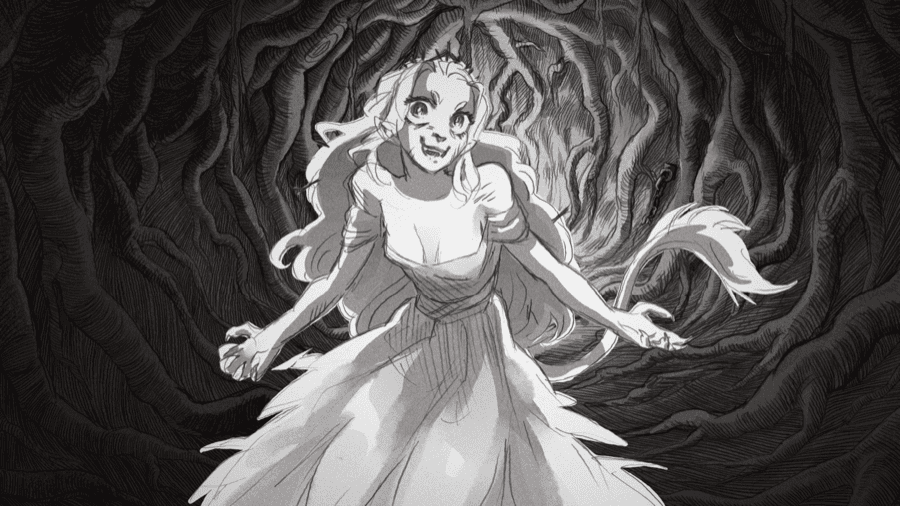

Вид с Зыбкой Гряды
Спойлеры к игре Slay the Princess
Raison d'être
Как минимум один читатель моих прошлых психопостов сказал: это буквально я, ты заглянула в самую душу, никто меня так еще не понимал. Я не единственная и уникальная сумасшедшая, многие идут по такому же пути и испытывают те же проблемы, но не способны понять и сказать.
Все психические заболевания это спектр – мы считаем что-то болезнью не когда симптомы есть, а когда они сильнее некоего произвольно выбранного порога. Объективной разницы между болезнью и здоровьем нет; мы ставим диагнозы, когда экономически справедливо вмешаться. На каждого человека в депрессии есть десять, которым просто грустно. На каждого человека с ОКР есть десять, которые просто мнительные. На каждого человека с шизофренией есть десять, которые просто чудаки. На каждого человека с ПТСР есть десять, у которых когда-то был неприятный опыт, и теперь им некомфортно в похожих ситуациях.
Но субклинические симптомы так-то портят жизнь. Примерно у всех есть множество мелких неполадок в теле, ни одна из которых не клинически значима. Ты несколько быстрее устаешь, чем раньше. Чуть хуже спишь. Чуть больше раздражают посторонние звуки. Иногда болит живот, иногда ломят мышцы. Сложнее подниматься по лестнице. Легкий туман в мозге. Чот приуныл. По сумме чувствуешь себя не очень. Но ни один из симптомов не выше клинического порога, так что даже и непонятно, что тут может сделать доктор. Нет таблетки от смутно определенного плохого самочувствия, и нет легкого способа понять, что именно из этого легко решаемая проблема, что просто возраст, а что нужно срочно чинить, пока не стало хуже. Интернет-биохакеры проводят N=1 эксперименты, что круто и полезно, но требует нехилого вложения IQ-часов, которое не все могут позволить.
И порой люди даже не знают, что их проблемы – это не просто часть человеческого состояния. Вот Ларс Дусет рассказывает, что страдал нарколепсией всю жизнь, но из-за проблем психобразования даже не знал, что его симптомы необычны, и что если их начать лечить, качество жизни резко вырастет. Люди часто терпят абсолютно необязательные страдания, потому что кладут их в ту же категорию, что «я ненавижу понедельники» – да, это хреново, но что с этим поделать, жизнь несправедлива. А особые аккомодации мы воспринимаем как инструмент только для инвалидов; мало кто о них задумывается, если ему «так себе, но терпимо». Пока не становится поздно и не перестает быть терпимо.
Критически не хватает индивидуальных кейс-стади, по которым можно понять, что именно с тобой не так, и что с этим надо делать. Частично эту задачу выполняет культура мемов, фильтруя людей по срезонировавшим картинкам с подписями, но там много шума и мало конкретики. Этот пост на 70% показательный кейс-стади с целью психобразования. На 20% это личный травма-дампинг для терапевтических целей, который должен быть в восприятии других людей, а не только в моем личном дневнике – иначе не сработает. И на 10% это расширенный ответ на часто задаваемый вопрос «да что с тобой не так?!»
Ввиду нестабильного гендера и идентичности лирического героя, все местоимения проставляются по принципу «я так чувствую» – искать в них логику не обязательно.
Большая ошибка при обсуждении психически больных – ставить их в отдельную от себя категорию, типа есть вот я, а есть психи, для которых правила другие. Я нахожусь глубоко на спектре «плохости», но в какой-то мере то, что я пишу здесь, применимо приблизительно ко всем. Если вы будете совершать 10% моих ошибок, вы получите 10% моих проблем. Я приоткрываю завесу одного фактора риска для чот-не-очень-себя-чувствующего расстройства – диссоциации. В своих слабых формах этот фактор легко пропустить, потому что диссоциация по своей сути потайной симптом, ее задача – это скрывать проблемы от себя и окружающих. Но если на самом деле смотреть на данные, кПТСР у каждого десятого – и это только клинически значимый, что не то же самое, что заслуживающий внимание. Тут поднимать осознанность необходимо.
Глава 1: Герой и Принцесса
Мне-школьнику попался в интернете вопрос: «Что бы вы делали, если бы остались единственным человеком на Земле?».
Я затруднялась ответить. Комментаторы говорили вещи вроде «буду питаться консервами из супермаркетов и прочитаю все книги», но я не могла представить, почему бы я делала что-то подобное. После краткого обсуждения я ответила что-то вроде «в каком смысле я тогда вообще буду сознательным человеком с желаниями?». Единственным интуитивным мне казался ответ «буду сидеть на месте, пока не умру от жажды», потому что что еще остается? Если других людей нет, то с чего бы я вообще стала делать хоть какие-то телодвижения, кроме как может быть чистые рефлексы? Позже я сформулировала это в типовую шутку: «я солипсист наоборот – существую только в головах других людей». Психиатру, который поставил мне диагноз кПТСР, такая формулировка понравилась – мол, отлично передает суть расстройства.
 В игре Slay the Princess, Принцесса – воплощение Зыбкой Гряды, The Shifting Mound, божества изменений. Она метаморфоза, колебания, возможность перемен. Форма самой Принцессы зависит от восприятия других. Она становится такой, какой ее видят остальные, и она тем могущественнее, чем дольше ее видят и больше о ней знают. Помимо прочего она – сама смерть, и если ее не убить, она уничтожит мир.
В игре Slay the Princess, Принцесса – воплощение Зыбкой Гряды, The Shifting Mound, божества изменений. Она метаморфоза, колебания, возможность перемен. Форма самой Принцессы зависит от восприятия других. Она становится такой, какой ее видят остальные, и она тем могущественнее, чем дольше ее видят и больше о ней знают. Помимо прочего она – сама смерть, и если ее не убить, она уничтожит мир.
Согласно теории структурной диссоциации, ребенок в раннем возрасте формирует чувство самосознания и единого «я», но трамирующие события могут нарушить этот процесс, оставляя «я» фрагментированным и неконкретным. У меня явно есть какое-то диссоциативное расстройство. Их существует целый зоопарк; в зависимости от того, какие симптомы проявляются больше, может быть DID, OSDD, DPDR, и много других страшных слов. «Тайлер Дерден» с двумя полностью обособленными личностями и полной амнезией между ними это драматизированный случай DID; у меня, вроде как, не все настолько плохо. Диагноз кПТСР стоит как самый консервативный – какая-то травма была, а как она проявилась, вопрос пока стоит. Формирование моего эго точно было прервано. У меня нет «центра», нет четкого ощущения «я»; я определяю себя относительно окружающих людей и принимаю ту форму, в которой меня видят. Я существо восприятия, как и некая другая известная Принцесса.
Я помню, когда я впервые наиболее отчетливо почувствовала, как резко принимаю другую форму. В конце последнего школьного года, перед поступлением в университет, мы гуляли с отцом по улице в деревне. Я говорила про свои опасения. В университете наверняка будет сложно и страшно и тяжело, я не справлюсь. Отец говорил, что надо только не лениться, а так со всем я справлюсь, я умный мальчик. Я сильнее, чем себя считаю, и какие бы сложности меня ни ждали, я выдержу и пересилю.
Я ему не говорила, что я как раз боялась «выдержать» и «пересилить». Я никогда не понимала, почему о превозмогании сквозь лишения и преодолении трудностей говорят, как будто это должно вдохновлять и мотивировать. Преодолевание трудностей это плохо, разве нет?.. Если ты попал в ситуацию, где надо что-то превозмогать, то ты уже налажал?..
И вопрос не в том, насколько я сильная. Даже если трудности полностью в моих силах и я смогу их преодолеть, все равно же лучше не преодолевать! Только потому что я могу перетерпеть удар молотком по пальцу, не значит, что мне надо искать молоток и бить. Если меня в университете ждут трудности, это аргумент не идти туда!
Сейчас я знаю, насколько это необычная перспектива, но в контексте моего воспитания это был логичный вывод. Когда я училась в школе, меня каждое лето отправляли в деревню к дедушке. Это было первое реальное «воспитание», которое я у меня было. Дошкольное прошлое, включая первоначальные травмы, было уютно скрыто за амнезией, а родители предпочитали laissez faire подход и не пытались лепить из меня что-то конкретное, так что формировал меня во многом дедушка. Ключевая тема его рассказов о жизни была – насколько тяжело приходится, и насколько сильным надо быть, чтобы все это выдержать. Он «готовил меня к жизни». Мол, пока ты ребенок, надо набираться сил, развивать характер, учиться работать, переносить тяготы и лишения. Заложить фундамент надо сейчас, пока тебя бесплатно кормят, поят и одевают – потом во взрослой жизни такого не будет, надо будет выживать самому, и если не научишься, будет тебе тяжко. Он был прапорщик, алкоголик, любил поговорку «тяжело в учении – легко в бою», и учил меня, как быть настоящим мужиком.
Я была в абсолютном парализующем ужасе от той взрослой жизни, к которой он меня готовил. В ней надо работать сутками без сна, выживать на гроши, защищаться от злодеев, вертеться, проявлять сообразительность, и быть готовым терпеть постоянную несправедливость и удары в спину. Самыми страшными были истории про то, как изобретательность и смекалка позволили избежать какой-то большой беды. Может он думал, что чем больше он преувеличивает масштаб катастрофы, которую он сумел предотвратить быстрым умом, тем больше это мотивирует меня быть умнее. На самом деле я так поняла, что стоит мне один раз расслабить бдительность и не суметь решить очередной паззл, которым кинется в меня жизнь, я останусь бомжом-наркоманом-инвалидом.
 Ну, здравствуй. Ты что, пришел меня убить? – спрашивает первым делом Принцесса, когда видит протагониста, Долгого Покоя, с ножом. Она подозрительна и осторожна, ожидая атаки в любой момент.
Ну, здравствуй. Ты что, пришел меня убить? – спрашивает первым делом Принцесса, когда видит протагониста, Долгого Покоя, с ножом. Она подозрительна и осторожна, ожидая атаки в любой момент.
Немаловажная часть дедушкиного реализма – абсолютная рандомность вселенной. Однажды он достал каких-то дорогих конфет, угостил меня. Конфета оказалась с изюмом, который я не люблю, и я отказалась. Его явно это обидело, и он рассказал мне, как из-за нехватки какого-то вещества в диете у его знакомого развилась какая-то болезнь, и его парализовало, и мол вот в изюме это вещество как раз есть, так что лучше кушать. Конфеты-то я поела, но момент в моей памяти отпечатался как часть инсайта – вселенная хаотичная и непредсказуемая, ты можешь стать инвалидом просто потому что когда-то не съел конфету, здесь нет логики, это невозможно понять, это надо просто запомнить. Любая упущенная мелочь может обернуться катастрофой. Перечитывай учебник по ОБЖ от корки до корки и надейся, что в нужное время вспомнишь.
О том, что дед врет и слушать его не надо, я со взрослением постепенно поняла. Но к тому моменту у меня уже был дед инсайд. Я имею ввиду, у меня в голове порой звучал «голос» дедушки. Это была не слуховая галлюцинация, а стабильные навязчивые мысли, которые очень явно звучали, как будто они шли от дедушки, как будто я невольно вспоминала его слова. Обычно дед критиковал все, что я делаю, ругал за косяки, и в целом раздражал. Сейчас я знаю про то, как работают интроджекты, но тогда я таких умных слов не знала. Да и если бы знала – травма, которая разбила мне идентичность задолго до дедовой обработки, была уютно спрятана под амнезией, и мне не пришло бы в голову применить эти термины на себя. Так что одна из первых вещей, которые я сделала, как только у меня появился домашний интернет – это спросила на случайном интернет-форуме, мол, что происходит, почему оно так? Мне дали ответ с точки зрения фрейдизма: это у меня, мол, «суперэго разыгралось». Я попробовала читать Фрейда; он был довольно сложен для моего возраста, и прежде чем я погрузилась в эту кроличью нору достаточно глубоко, чтобы почерпнуть что-то полезное, я перешла в следующую форму, дед заткнулся сам, и я забила на этот симптом. В детстве у меня были воображаемые друзья, почему бы в отрочестве не быть воображаемым врагам? Foreshadowing это литературная техника, в которой важные элементы сюжета предвосхищаются поначалу неочевидным намеком.
К дедушке – сначала к настоящему, а потом к копии в моей голове – у меня всегда был один и тот же вопрос. Вот я допустим буду сильной, умной, буду все это преодолевать, терпеть – а что я за это получаю взамен? Если все стычки с дедом по этому вопросу сконденсировать в один диалог, то будет примерно так:
Я: Этот «труд», о котором ты говоришь, звучит очень бессмысленно и беспощадно, зачем оно мне вообще?
Дед: Кто не работает – тот не ест.
Я: Окей?.. А зачем мне тогда есть? Только чтобы иметь силы на следующий день опять трудиться?
Дед: Чтобы жить! Ты умрешь!
Я: Ну и ладно! Оно того не стоит, все это терпеть, трудиться. Мне уже сейчас, в самое легкое и беззаботное время жизни, тяжело и грустно, и это я пока еще даже сам на жизнь не зарабатываю.
Дед: Ну нельзя быть таким слабым, ты что хочешь, чтобы тебе все на блюдечке было, без усилий, чтобы ты лежал на диване, и тебя бесплатно кормили?
Я: Да. А ты типа не хочешь?
Дед: Ну так не бывает.
Я: Ну не бывает так не бывает, значит умру, не прокатило.
 Если Долгий Покой спросит Принцессу, что она будет делать, если ее выпустить из подвала, она не может ответить. Она не знает ничего о мире вне подвала, и ее единственная мотивация – оттуда выбраться. Зачем, почему? У нее нет ответа. Ей просто мучительно больно быть в подвале.
Если Долгий Покой спросит Принцессу, что она будет делать, если ее выпустить из подвала, она не может ответить. Она не знает ничего о мире вне подвала, и ее единственная мотивация – оттуда выбраться. Зачем, почему? У нее нет ответа. Ей просто мучительно больно быть в подвале.
Взрослые интерпретировали мои поиски причин жить как «умный ребенок уже задумывается о вечном вопросе смысла жизни». Это меня знатно бесило, потому что вопрос меня интересовал не вечный, а очень даже бытовой, практический – какие есть причины не убивать себя вот прямо сейчас? Нормального ответа на этот вопрос мне никто не дал, но все были убеждены, что жизнь это хорошо и убивать себя нельзя. Я приняла, что вероятно это я, малый ребенок, что-то неправильно понимаю, что именно я тут неправа, и я пойму, когда вырасту. Но это обоснование становилось все сомнительнее и сомнительнее.
И вот я иду по улице в деревне рядом с отцом и думаю. Насколько именно я в это обоснование сейчас верю? Мне 17 лет, и я до сих пор не поняла, ради чего взрослые живут. Можно допустить, конечно, что этот секрет настолько арканный, что я пойму его только в 30. А может быть причины и нет, может люди живут зря, и я права и всем надо самоубиться. Сейчас меня ждет поступление в универ, там взрослая жизнь со всеми тяготами – будет невероятно тупо, если все это зря, я вложу все эти усилия и пойму, что «взамен» там ничего нет, и я все это время старалась впустую, как лошара. Насколько долго я готова вкладываться в убыточное предприятие, прежде чем признать, что прибыльным оно никогда не станет? Может быть, уже?
Отец рассказывал мне, насколько я сильный и умный и стойкий и здоровый человек, что меня ждет большое будущее, престижная работа, и успех в любом начинании, если только я приму решение ради этого работать, а не сидеть на диване. Вопрос, который я так и не задала – в каком начинании? Окей, допустим, я действительно могу достичь чего угодно. Чего мне надо достигать? И зачем? Допустим у меня будет куча денег, которыми я смогу решить все проблемы, защититься от всех опасностей, и устранить все источники вреда. Чем именно это лучше, чем просто умереть и решить все проблемы разом и навсегда?
Значительным пунктом против самоубийства была недоступность методов. Дома я до этого несколько раз пыталась выпрыгнуть из окна, но каждый раз не осмеливалась и убегала1позже я узнаю, что у меня фобия высоты. Сейчас я сканировала деревню – что еще я могу сделать? Повеситься на турнике? А если спасут, и останусь живой с гипоксией мозга? В итоге я таки решила разбить эту дилемму в сторону «попробовать и посмотреть». Я понятия не имею, чего именно мне нужно достигать и чего от меня ждут и как будет выглядеть «победа». Но, как минимум, промежуточные шаги между сейчас и победой мне объяснили – поступить в институт, получить диплом, найти работу. К тому моменту я вероятно поумнею, подучусь, и, может быть, пойму, куда именно иду. Буду набирать ресурсы общего вида – знания, деньги, связи – а куда их применить, там видно будет.
Из деревни в Москву вернулся другой человек.
Глава 2: Узница
The Prisoner

Амнезия в медиа часто выглядит как резкая и полная потеря памяти. Такое бывает, у меня такое было, называется «blackout». Но диссоциативная амнезия также бывает «серая» – когда обрывки воспоминаний все еще есть, но они смазаны, перепутаны, кусочны. Периоды такой амнезии помнятся как сон – стремительно ускользающие вайбы. Другой сорт амнезии – «эмоциональная». Когда ты помнишь, как что-то происходило, но исключительно номинально. Ты можешь перечислить события, даты, факты, но ты не помнишь ничего из своего «внутреннего» мира, как ты себя чувствовал или о чем думал или чем было продиктовано то или иное действие. Как будто это был не ты, воспоминания не твои, ты только смотрел события в записи. Вся глава «Узница» покрыта смесью таких вот нечетких амнезий. Я условно помню, что было. Иногда я помню свой внутренний диалог, но редко. Рада, что я громко вайнила о своих проблемах и часто вела подробные личные записи. Поэтому я могу пересказать, что я чувствовала – читая старые переписки, комментарии на Реддите, и вспоминая слова, выходящие из моего рта в направлении невинных собеседников. Я отлично знакома с тем человеком – «Тимуджином» – я проанализировала его по словам, поведению и «запискам сумасшедшего» – но только и всего.
 Если попытаться освободить принцессу, Долгий Покой все равно ее непроизвольно убьет, и она переродится в Узницу. Узница понимает, что он не держит к ней зла. Когда он пришел к ней с ножом, покалечил и попытался убить – он на самом деле хотел ей помочь. Это, конечно, не меняет исхода – Узница все еще в подвале, и окована в цепи еще сильнее. Покой опасен, и при всем понимании добрых намерений, к нему надо относиться с осторожностью. Пользоваться его помощью, но не подпускать к себе близко, и не показывать уязвимости.
Если попытаться освободить принцессу, Долгий Покой все равно ее непроизвольно убьет, и она переродится в Узницу. Узница понимает, что он не держит к ней зла. Когда он пришел к ней с ножом, покалечил и попытался убить – он на самом деле хотел ей помочь. Это, конечно, не меняет исхода – Узница все еще в подвале, и окована в цепи еще сильнее. Покой опасен, и при всем понимании добрых намерений, к нему надо относиться с осторожностью. Пользоваться его помощью, но не подпускать к себе близко, и не показывать уязвимости.

Лучше держать дистанцию, пока мы со всем этим не разберемся
Тимуджин был закрытым и нелюдимым, ставил себя в «законную» треть компаса D&D-мировоззрений, фокусировался на учебе, карьере, саморазвитии, продуктивности и прочем сигма-гриндсете. Три разных человека независимо назвали его «цундере». Он был техбро и любил культуру Lesswrong. Одна недооцененная, но для Тимуджина ключевая часть учения Элиезера Юдковски – его радикальное принятие на себя всей ответственности за свою жизнь. Именно это было моим первоначальным «крючком» в идеосферу рационализма – все остальное притащилось вдобавок. Другим мыслителем в этой сфере, повторяющим схожие идеи, был Скотт Александр. Его блог меня сильно бесил. Одним из первых постов, которые я прочитала, был его рассказ, как они с друзьями в школе начали ролеплеить воображаемую вселенную. Он не раз рассказывал, насколько много успеха в его жизни пошло от этой игры, насколько много социальных контактов выросло из других игроков, и насколько многому он научился. Это перекидывало меня между гневом и депрессией – одна мысль могла отправить меня на спираль флешбеков и испортить день. У меня не было друзей в школе, всегда были проблемы с социальными навыками, так что Тимуджин сильно завидовал раннему опыту Скотта и страдал от собственного бессилия.
Никакой психиатр не объяснил мне, что это. Я тоже не догадалась. В моем тогдашнем понимании, флешбеки откидывают тебя в прошлое к какому-то событию; я во время этих приступов никаких событий не вспоминала. Уже сильно позже я узнала про эмоциональные флешбеки и поняла: да, это были они, Господи, почему мне никто не сказал, что такое бывает?! Я понятия не имела, что такое травма и как выглядят флешбеки. События, к которым меня отсылало, я не помнила.
Автор этого поста задает вопрос про психотравму – почему (даже если проконтролировать на все статистические артефакты типа ошибки выжившего) стабильно выходит, что шейминг за лишний вес травмирует и лишает шансов на самом деле похудеть, а освобожденные жертвы Холокоста выходят из концлагеря только крепче? Это частный случай часто задаваемого вопроса – почему суровость травмы так часто не соответствует суровости травмирующего события? Почему изнасилование может пустить жизнь под откос, даже если физического вреда не было? Почему насмешки могут оставить более глубокие шрамы на мозге, чем пребывание в горячей точке под обстрелами? Ответ лежит в том, почему именно травматические воспоминания хранятся в теле не так же, как обычные.

На картинке выше кратко показаны три возможных состояния автономной нервной системы: гиперактивация, коллапс и социальное вовлечение. Проверка на внимательность: чего в этом списке нет?
В опасной ситуации АНС возбуждается, и включается реакция бей/беги. Система строилась под условные нападения хищников, и если спустя минуту ты все еще перед хищником, это значит, что ты не справляешься, и надо бить сильнее или бежать быстрее. Так что чем дольше длится опасность, тем обычно выше возбуждение. Когда возбуждение доходит до максимума2проиграл, включается реакция «замри». Система уходит в шатдаун, который субъективно чувствуется как усталость, депрессия и диссоциация. Когда АНС чувствует, что опасность закончилась, она возвращается в «зеленую» зону, где может нормально интегрировать полученный опыт. Иногда этого не происходит – АНС проводит в желтой или красной зоне слишком долго. Диссоциация не дает интегрировать эти воспоминания в долгосрочную память на общих основаниях, и они «застревают» в автономной нервной системе, которая все не получает сигнал, что событие закончилось. Это и есть ПТСР – организм так и остается готовым бить/бежать/замереть, ценой нормальной работы не-экстренных систем организма, типа иммунитета, памяти или пищеварения.
Важно то, как АНС определяет, что опасность закончилась. В нижнюю часть графика, в сниженное возбуждение, система возвращается при социальном вовлечении. Опасность закончилась, когда ты среди других людей, которые могут тебя защитить. Это единственное условие возвращения АНС в нормальное состояние. Человек животное социальное. Хороших способов коупить с травмой в одиночку не существует. Есть плохие, которые так или иначе пытаются симулировать социальное вовлечение, типа ведения дневников. Но стабильно самым основным фактором восстановления от травмы является социальная поддержка.
Скотт Александр сравнивает два явления очень разного порядка. Самый холодный тейк в мире, Холокост хуже фэт-шейминга. Но почему не такой травмирующий? Мой ответ – потому что в концлагерях держали группами. У них были способы нормально интегрировать воспоминания – как только надзиратель ушел, они могли обсудить произошедшее, травма-дампить друг другу, и в целом переводить свои АНС в состояние «социальное вовлечение». Так что воспоминания нормально интегрируются и не переходят в травму. «Жертвы фэт-шейминга» это не сплоченная группа, которую ругают целиком как группу; обычно шеймят одного толстого в группе тонких. Насмешки приходится терпеть в одиночку; если попробовать кому-то пожаловаться, что тебя дразнят, часто можно услышать ответы типа «ну так похудей». Так что все это постепенно откладывается в теле, и рано или поздно сама мысль о том, что надо сесть на диету, отправляет во флешбек. Частично эту проблему решают группы поддержки, куда можно поплакаться, но не у всех они есть. И, да, поэтому я так классово ненавижу гипериндивидуалистские тейки из серии «твои проблемы это твоя ответственность, не ввязывай сюда других, не перекладывай ответственность». Оставить человека со своими проблемами в одиночестве – самый верный способ раздуть даже совсем мелкие неприятности, которые решились бы за пять минут, до рушащей жизнь себе и окружающим травмы3 если вам нужно уместить этот тейк на мем, рекомендую «только непосредственно в газовой камере еврей может понять десятую долю тех страданий, которые испытывает инцель, когда ему отказывает девушка» .
В детстве у меня социальной поддержки не было. Отец меня предпочитал вглухую игнорировать первые лет семь жизни. Мама и бабушка рассказали, как он вернулся домой пьяный, и я побежала к нему обнимать. Он пнул меня на подходе, и я отлетела в стену («как в мультике» – мама). Когда мы с психотерапевтом откопали и зарескриптили это воспоминание, у меня в голове стало заметно свободнее, так что это событие точно и значительно отпечаталось в теле. Мама была в целом дружелюбной и любящей, но каждый раз, как я приходила к ней плакаться о проблемах, я получала только насмешки и уничижения. «Тебя этот клоп задирает? Да он тебя на голову ниже, что за слабака и мямлю я воспитала». Сейчас я спросила маму, откуда она взяла такую тактику, и она сказала, что пыталась меня таким образом мотивировать и вызвать «дух противоречия», мол, у меня тогда будет желание опровергнуть ее и справиться с проблемой. Я натурально не знаю, кто ей дал эту идею, но сработала она ровно противоположно – все проблемы, даже казалось бы не особо серьезные, застревали как травма и становились перманентно нерешаемы. Ну и с таким набором установок с самого раннего детства, друзей вне семьи я тоже не заводила. У меня была фундаментальная картина мира как опасного места, полного врагов, в котором мне надо выживать в одиночку. Даже к собственной матери я не могу обратиться за помощью; даже люди, которые меня любят и желают только добра, будут бить в любую уязвимость, которую я им покажу. Единственный, кто на моей стороне – я сама. Non est salvatori salvator.
Хуже того – я была не просто в позиции опасности, я еще и была в позиции слабости. Мама, видя мою одаренность, отправила меня в школу в раннем возрасте. То, что я всегда была физически меньше и слабее остальных детей, дурно на мне отпечаталось. Моя «одаренность» и успехи в учебе других детей не интересовали. Они все справедливо видели меня как слабую и бесполезную; в играх на физкультуре старались не брать меня в команду; даже банально в построении по росту я всегда была в последней позиции. А я Зыбкая Гряда – если меня так видят, я такой и буду. Я стала изгоем и аутсайдером – не в какой-то конкретной группе, а просто в принципе, сама по себе, как часть моей идентичности. Я привыкла к тому, что мое место – последнее, и всю последующую жизнь действовала из неявного предположения, что я никому не нужна и никто не будет хотеть добровольно со мной общаться или предпочитать меня другим в любом контексте.
 С чего бы я разрешила тебе подойти с ножом? Ты мне его дашь, и я дальше разберусь сама.
С чего бы я разрешила тебе подойти с ножом? Ты мне его дашь, и я дальше разберусь сама.
Это был не единственный явно травмагенный симптом. Бессонница была бичом моей жизни. Одна из наименее впечатляющих суперспособностей в мультсериале «Наруто» – техника мгновенного засыпания. Когда я в детстве увидела ту серию, я мечтала именно об этой технике. На каком-то рациональном уровне я понимала, что на фоне телепортаций и фаерболов эта техника сравнительно не особо полезна, но никакая другая не вызвала у меня мгновенной эмоциональной реакции «хочу!» Каждой ночью просто заснуть было достижением; заснуть пять раз в одну неделю – редкий праздник. И чем дольше я не сплю, тем сложнее становится заснуть, я падаю по спирали, на фоне недосыпа обостряются все проблемы. И даже когда организм абсолютно не может бодрствовать дальше и я все же засыпаю – это ни капли не «легла и отрубилась». Кошмары, сонные параличи, выгоняющие из постели каждый час компульсии – меня ждал ад. Вас когда-нибудь во сне пытали? Это очень больно. Однажды в затяжной бессоннице я вызвала скорую посреди ночи с просьбой сделать что угодно, лишь бы я уже отрубилась. Мне вкололи большую дозу феназепама, и сказали маме, что я даже до кровати не дойду – по пути упаду. Я так и не заснула в ту ночь. А когда все же удается на ебучей силе отоспаться за все пропущенные дни, я измотана и выжата всей борьбой с демонами, и мне нужно долго отдыхать и восстанавливаться.
Мой демон сонного паралича всегда был буквально мой отец, что я обыгрывала как шутку. Но мама мне вот рассказала, как в моем детстве отец никогда не уважал сон, постоянно ночами включал свет, приходил пьяный, шумел, разговаривал. Я этого не помнила – но оно было, и мое тело запомнило. Мне не давали нормально выспаться в детстве – значит, я не смогу нормально выспаться всю жизнь. Самый значимый прогресс в лечении бессонницы произошел, когда мы с психотерапевтом конкретно выцепили эти воспоминания и зарескриптили их. Помогло лучше, чем конские дозы транквилизатора.
Многое можно было бы предотвратить ранним вмешательством психолога. Проработать травмы до того, как они уйдут в самоподдерживающуюся спираль. Научить меня справляться с особенностями своего мозга. Научить маму, что одаренные дети требуют больше особой поддержки, а не меньше. Оставить меня на второй год. Но хороших психологов не нашлось. Те, которые были, называли меня «ребенком индиго» и резюмировали, цитата, «интеллектуальное развитие слишком превышает социальное, и происходит дисбаланс личности». То бишь, они подошли вплотную к тому, чтобы сказать «аутизм», но споткнулись на последнем шаге. Что именно делать, кроме как пользоваться шансом и максить интеллектуальное развитие, никто так и не сказал.
Я сама понимала, что много что идет не так, но не могла нормально объяснить. То, что мне не хватает человеческой близости или поддержки, я на каком-то уровне чувствовала. Я пыталась об этом пожаловаться школьному психологу, но она абсолютно запорола ситуацию. Она попросила меня сформулировать конкретно – а что именно, точно, я хочу от других детей? Я в таком возрасте недостаточно понимала свои чувства и уж точно не могла их нормально сформулировать. После нескольких фальстартов сошлась на единственной операционализации, которую я смогла обозначить – чтобы если мне была нужна помощь, я могла ее у других детей получить. Психолог переспросила «то есть, ты хочешь учиться манипуляции, так?» Я не полностью понимала значение этого слова, но сказала «да» и попросила научить меня манипуляции. Она отказалась, и на этом весь разговор закончился
Когда Тимуджин ловил флешбеки с социальной жизни Скотта, он обо всем этом не знал. В какой-то степени я пыталась самооправдаться об отсутствии у меня какого-то социального капитала, говоря себе, что вот я просто интровертный человек, и у меня лицевая слепота, это гандикапы, вокруг которых надо просто работать. Но Скотт тоже прозопагностик, и он называл себя «самым интровертным человеком, которого вы можете встретить – если кто-то более интровертен, то он никогда не выйдет из дома». Это не мешало ему рассказывать о всех своих встречах с друзьями, компаниях, поездках и совместных активностях и между делом ронять фразы типа «среди топ-100 моих друзей». Мне это дало сигнал, что я делаю что-то сильно не так. Проблема не в том, что я просто нахожусь на нижней части спектра социальных способностей – другие люди на этой же части все равно достигают многого. Я делаю что-то не так. Мне надо выяснить, что я делаю не так, и делать лучше. Это было основной причиной, почему я пошла ва-банк на dm.am в общем и в форумные мафии в частности. Они были самым близким в радиусе доступа к кругу людей с общей деятельностью, из чего потом могла вырасти группа друзей.
Но я не могу, конечно же, просто сближаться с людьми. Даже когда я пытаюсь «социалить», пытаться с кем-то подружиться или вписываться в группы, это военная операция с конкретными стратегическими целями, планом атаки и анализом затрат и выгод. И конечно же, оно включало лошадиные дозы маскинга.
 Каковы твои намерения? У тебя нож. Что ты планируешь с ним сделать? Зачем именно ты здесь?
Каковы твои намерения? У тебя нож. Что ты планируешь с ним сделать? Зачем именно ты здесь?
Любой нейрооличный с детства учится маскировать симптомы – вести себя так, чтобы окружающие их не замечали. Это происходит подсознательно и постоянно. Для того, чтобы ребенок начал маскировать, не обязательно прямо наказывать или заставлять; даже просто выражение неодобрения сигнализирует, что такое поведение не приветствуется, и спустя годы таких микро-коррекций маскировка записывается в тело на пре-сознательном уровне. Чаще всего про маскинг говорят в контексте аутизма, потому что аутичный маскинг самый «бессмысленный и беспощадный». Симптомы, которые вынуждены скрывать аутисты, приносят минимум неудобства другим, это просто невежливо и не принято. И даже когда надо идти на активные уступки, они минимальны; ничем не сложнее уступок, которые просят и получают нейронормисы регулярно, просто другие.
Но вред от маскинга гигантский. Маскировка требует от аутиста постоянных усилий, приводя к стрессу и выгоранию на пустом месте, депрессии и нередко к травме. Аутичное выгорание брутально и может выключить человека из жизни на годы. И есть здесь наитупейший парадокс – что лечение начинается с размаскировки. Человеку надо определить, какие его привычки и паттерны поведения являются маскировочными, и отучаться, вести себя больше как стереотипный аутист. А для окружающих это может выглядеть как притворство («тебе поставили диагноз, и теперь ты ведешь себя соответственно нему, раньше такого не было») или как ухудшение («тебя начали лечить, и теперь ты ведешь себя хуже и симптомы сильнее»). Общество все еще наказывает за инакое поведение, и размаскировка становится плытьем против течения, которые не все могут себе позволить. За детство я научилось маскировать не только аутизм. Я долго и глубоко маскировала лицевую слепоту и депрессию. В каком-то смысле можно сказать, что я маскировала диссоциацию, но это немного плеоназм – диссоциация сама по себе маскирующий симптом.
Диссоциацию можно понимать как буквальный антоним слову «ассоциация». Если ассоциация – это связь между двумя разными вещами, то диссоциация это разрушение связи, которая по идее должна быть. Части тебя, которые по идее должны работать в унисон – восприятие, мышление, эмоции – не сообщаются между друг другом. Пример диссоциации у здоровых людей – «автопилот» или дорожный гипноз. Человек может водить машину и реагировать на все нужные события и принимать все нужные решения, даже не осознавая, что это происходит, и думая о чем-то совершенно другом. На самом деле мышление, конечно происходит – человек воспринимает окружение, обдумывает информацию, делает логические умозаключения – просто эти процессы отрезаны от сознания и памяти, происходят «под капотом», где гомункул их не видит. Когда человек абстрагируется от мешающего шума и старается не обращать внимание, или выпадает из реальности в фантазию при чтении книги – это тоже все здоровая диссоциация, на клинически не значимой части спектра.
{kind=link}
На более клинической части спектра находятся дереализация и деперсонализация. Кажется, что мир вокруг какой-то ненастоящий, иллюзорный, как будто во сне или в матрице. При деперсонализации кажется, что ты не настоящий, что это не твое тело, не твои мысли и не твои чувства. Тогда я использовала метафору – как будто мир это подлагивающая компьютерная игра. Графика реалистичная, но не совсем; картинка явно подтормаживает; задержка ввода раздражает; герой не буквально ты, а твой аватар, которым ты управляешь из-за экрана. И когда ты настолько абстрагирован от казалось бы своих действий и мыслей, они вполне буквально существуют самостоятельно. Мысли «дедушки» в моей голове, в физическом смысле, были мои, думала их я, своим одним мозгом. Но они не чувствовались своими и не полностью слушались «меня»4 Невероятно рилейчу к протагонистам симуляторов ходьбы. Когда ты смотришь на фотографию на столе, и герой выдает типа «о, это моя жена, люблю ее», хотя ты этого сказать не хотел и даже не знал? Муд. . Части тебя действуют и думают независимо друг от друга. Тимуджин был такой частью. Маска, которую я показывала другим людям, чтобы хоть как-то функционировать в обществе, отделилась в свою сущность, абстрагированную от всей остальной психики.
На сервере нарциссистов invisiblemonster предложил метафору о расстройствах личности. 5
обычно, когда я цитирую людей из непубличных сегментов соцсетей, я скрываю источник, чтобы избежать случайного аутинга/харрасмента; но invisiblemonster сказал, что его цитировать только с указанием авторства
I believe all personality disorders are cPTSD gone through the looking glass, becoming ego syntonic. And through recovery from PDs, we have to go back through the looking glass even though we’re going to get sliced up from the broken shards from when we first crashed through the mirror as the disorder and maladaptive defenses and traits were developing in childhood and adolescence.
Травма сама по себе эгодистонична – она ощущается как что-то неправильное, лишнее, не настоящая часть твоей сущности, а симптомы болезни. Никому не нравится быть во флешбеке или тонуть в обсессиях. Но под требованиями жизни в обществе без когнитивного диссонанса эти симптомы приходится принять и интегрировать в личность. Они становятся эгосинтоничными – ощущаются как правильные и рациональные и справедливые. Если раньше человека мучила паранойя, то теперь он просто считает, что мир полон врагов, что он совершенно справедливо относится ко всем с недоверием, а все остальные наивны. Если раньше человек был вынужден терпеть боль и невзгоды, то теперь он считает, что заслуживает страдать, что через страдания закаляется характер, а все, кто не хочет страдать, трусы и слабаки.
Тимуджин был таким «проходом через зеркало». Весь комплекс «опасного, враждебного мира» стал частью личности. Раньше маскинг чувствовался именно как маскинг, как игра на публику, как активное подавление своих нужд. Уроки деда были пугачками – давшими мне немало бессонных ночей и тревожных спиралей, но все же не буквально верными. Но именно это было необходимо для выживания дальше, и Тимуджин был диссоциативным слоем, который защищал меня от этой травмы, исполняя требования маски автоматически и естественно. До меня только накануне дошло, что одна цитата Юдковского, которую Тимуджин даже репостил себе на страницу, это буквально более интеллигентно сказанный вывод, к которому я пришла со слов дедушки:
It is a very important lesson in rationality, that at any time, the Environment may suddenly ask you almost any question, which requires you to draw on 7 different fields of knowledge. If you missed studying a single one of them, you may suffer arbitrarily large penalties up to and including capital punishment. You can die for an answer you gave in 10 seconds, without realizing that a field of knowledge existed of which you were ignorant. This is why there is a virtue of scholarship.
Сейчас я знаю, что это довольно нездоровый способ относиться к жизни. И в детстве я это знала. Но посередине Тимуджин интернализировал как что-то абсолютно справедливое и «то, как работает мир».
Rayzen, если это читаешь, ты как-то задавал вопрос:
Почему ты периодически заявляешь что-то в стиле «Тимуджин мёртв»? Разве смена гендера убивает старую личность и создаёт новую с нуля?
Мой ответ – в общем случае не обязательно, но в этом случае да. Не с нуля, впрочем! У меня больше непрерывности памяти с собой в школе, чем с Тимуджином. И когда я собирала для врача признаки собственной трансгендерности, их было много в детстве, и много после случая с поездом, но совсем не было посередине. Так что именно Тимуджин был созданным с нуля «Тайлером Дерденом дома», позже откинутым за ненадобностью.
invisiblemonster продолжает:
Those shards have kept us stuck in an ego syntonic wonderland. We see those shards of glass and become prisoners to our own behaviors and perceptions and cope by telling ourselves it’s normal to us. This is the classic kinda narc[issist] saying, “sounds like a you problem, not a me problem.” We feel entitled to not have to experience unpleasant emotions or pain, so why would we go back through that broken mirror, back to the real world, when we’re content in our own wonderland? It’s difficult to break down that ingrained ego syntonic nature. But once we’re able to face the pain, once we have the coping skills and support systems in place, going back through the mirror is the hardest work one will ever do, but also the most rewarding. You get to recover the parts of you that the disorder was hiding. And that’s true for any personality disorder, no matter the label. I want people to focus on that, on the actionable steps to take in recovery, rather than the specific diagnostic labels.
Гипер-ответственность, гипер-самостоятельность, гипер-дисциплинированность – все это типовые, даже стереотипные черты интернализированной травмы. Пока их не «депрограмировать», не пролезть обратно сквозь стекло, лучше не станет. Но Тимуджин даже не видел эти черты как что-то отрицательное или токсичное. Конечно, ты единственный, кто в ответе за свою жизнь. Надо уметь самостоятельно решать свои проблемы. Не надеяться, что тебя кто-то спасет, не винить других в своих косяках, не лениться. По мнению Тимуджина, это просто свойства сильного человека.
Другое свойство, которое я считала частью своей личности, но на самом деле было нездоровой диссоциацией – «думание эмоций». Тимуджин считал себя более рациональным человеком, чем эмоциональным, редко испытывал или проявлял сильные эмоции (кроме таинственных, но нечастых вспышек гнева). Так, конечно, не бывает, чтобы у человека не было эмоций. «Под капотом» эмоции все равно чувствуются – просто они не доходят до сознательного восприятия, а «продумываются» и рационализируются. Иронично и поучительно, что стереотипом рационального человека является спокойная, безэмоциональная рассудительность – хотя по идее более рациональным является как раз тот, кто чувствует и выражает эмоции. Если ты не чувствуешь свои эмоци, то они просто напрямую отражаются в твоих мыслях и действиях. Вместо того, чтобы почувствовать эмоцию и, в идеале, проработать через других людей, ты бессознательно руководствуешься ей и постфактум рационализируешь ее.
Другой вред диссоциации от своих эмоций – что они часто выливаются в психосоматику. У Тимуджина были частые и невероятно сильные головные боли 6 Поначалу я называла их «мигренями», но исключительно условно, потому что кроме боли симптомов мигрени не было. Позже я определила их как кластерные головные боли. Я полностью поддерживаю введение в обиход вейпов с психоделиками, потому что кластерные боли это действительно очень, очень херово, и потенциал для абьюза не перевесит возможности вытащить человека с порога ада. . Они начинались, когда я была на верхних этажах зданий. Сначала я думала, что дело в давлении – но это не сходилось, потому что не зависело от погоды. Пошла к врачу в поликлинику, и он сказал, что у меня, мол, подавленная фобия высоты, которая вызывает психосоматическую боль. Я усомнилась – как это он понял?! Даже не осматривал меня ничего, только выслушал жалобу?! И я не чувствую страха, когда на высоте! Но он оказался прав. В пост-Тимуджиновую эру, когда диссоциация ослабла, головные боли прекратились, но я начала натурально чувствовать страх от высоты. То есть, страх был всегда, вопрос только как он проявлялся. Урок: будьте эмоциональными, или будет больно!
Для Тимуджина было непривычным опытом, что теперь, во «взрослой жизни», его не ставят на последнее место. Порой к нему подходили и начинали разговор добровольно! Некоторые спрашивали совета и видели как некий авторитет! У него были друзья! К нему даже подкатила девушка, и завела с ним отношения! И он был сильнее и больше среднего! Это был огромный контраст, который внешним восприятием «зафиксировал» идентичность Тимуджина; постоянное ощущение нереальности сменилось на кристальную ясность. Тимуджин чувствовал себя сильнее и был готов достигать. Он даже шутил, что его амбиции – «захватить мир»7Что таки сложнее, чем моя прошлая амбиция «уничтожить»!.
 Если по-доброму не получается, я всегда готова перейти к насилию. Если ты подойдешь ко мне с этой штукой, я задушу тебя цепями.
Если по-доброму не получается, я всегда готова перейти к насилию. Если ты подойдешь ко мне с этой штукой, я задушу тебя цепями.
Но эту кристальную ясность испытывал только Тимуджин, не я в более общем смысле. Тимуджин зашел с глубокой маскировки и абстрагирования от всех своих недостатков и нужд, чтобы вписаться и социализироваться. Но то, что он запихал проблемы глубоко, не значит, что травмы не было – это значит, что ее эффекты были несознательны. Почти всю мою жизнь, как я узнавала, что мои знакомые… ну, что-то делают в группах – идут вместе на концерт, или празднуют день рождения, или даже играют в кооперативную игру – меня накрепко прибивало к полу. Тимуджину эти флешбеки удалось подавить и диссоциироваться от них, теперь у меня не было такой резкой отрицательной реакции при мысли о движухе, и я намеренно искала эти самые движухи, пыталась прибиваться к группам, ходить на настолки, на мероприятия и даже на свидания. Но диссоциироваться от флешбеков не значит их не испытывать. Все это выливалось в психосоматику, тревожность и смутно определенное чувство неправильности, поэтому никогда не заканчивалось хорошо. Я не могла наслаждаться мероприятиями, потому что каждое чувствовалось как поле боя. Часто у меня начиналась головная боль, иногда меня тошнило, иногда я просто сидела как на иголках. Однажды, в гостях, я не совладала с рефлексом «бей» и выдала одному из друзей достаточно жесткий the reason you suck speech, что он убежал, и его мать потом запретила мне появляться в этом доме. Она потом остыла и передумала, но в целом неудивительно, что дружить с людьми получалось плохо. Один мой онлайн-друг регулярно триггерил меня рассказами про активную социальную жизнь – страйкбол, наркотические рейвы, походы, театральный кружок – и когда в будущем мой знакомый в университете предложил мне присоединиться к страйкбольной команде, я в ужасе убежала от этой возможности и потом пыталась нейтрализовать болезненную мысль, что мой друг занимается страйкболом.
Тимуджин чувствовал, что он стал совсем другим человеком. Патологизировать мне это в голову не пришло – я просто «оставила все позади» (лол) и «сильно повзрослела». Самый заметный и легко операционализируемый фактор перемен – то, как он играл в видеоигры. В школьные годы я играла крайне трусливо и тревожно. Всегда на минимальной сложности, консервативно и от защиты. Я прошла «Космических Рейнджеров» не убив ни одного корабля – это был не челлендж-ран, просто я никогда не осмеливалась ввязываться в бой, даже когда очевидно была на порядок сильнее. Ребенок чувствовал себя слабым и ненужным против опасного мира, в котором любая ошибка значит смерть или хуже – конечно же его мозги будут исключительно заточены играть в жизнь в легком режиме, где главное результат, где главное не ошибиться и не проиграть. Ожидаемо, что ребенок, который знал, что он всегда самый слабый, будет рефлекторно сдаваться и сдуваться каждый раз, как ему надо против кого-то соревноваться – даже против ИИ в видеоигре. Такова была моя сущность, соответствующая восприятию других. Тимуджин играл иначе – он наоборот любил сложность и челлендж и риск. Я помню момент осознания этого контраста. Я сидела в лекционной и играла в XCOM: Enemy Unknown на сложности Classic+Iron Man8режим одного сохранения, в котором нельзя загрузить игру после ошибки, и заговорила об этом товарищем, который в это же время играл, либерально сохраняясь и загружаясь. Я спорила, что в такие игры нет смысла играть без Iron Man, а мой товарищ, наоборот, что Iron Man уничтожает весь фан. Его позиция напомнила мне себя в прошлом, и я глубоко задумалась – а почему сейчас она кажется мне настолько неинтуитивной? Почему я совершенно не могу эмпатировать с прошлой версией себя? Рефлексируя в прошлое, я не нашла какой-то постепенной смены позиции; мой стиль игры поменялся резким «переломом». Была определенная серая зона в форумных мафиях, где я уже давно играла скорее рискованно, чем безопасно, но применимо к видеоиграм все довольно сильно делилось на до и после. Я тогда так и не решила эту «загадку», не заметила механики Зыбкой Гряды. Но мне было достаточно попасть в окружение, которое не видело меня как фундаментально слабую, чтобы не быть фундаментально слабой.
 Ты думаешь, мы тут в игры играем? Что просто потому что я в цепях значит, что я ничего не решаю?
Ты думаешь, мы тут в игры играем? Что просто потому что я в цепях значит, что я ничего не решаю?
В плане достижения тех самых «стандартных жизненных целей», для которых Тимуджин родился, я поначалу была на коне. Сигма-гриндсет успешно достигаторствовал. Я была готова к тому, что после перехода из обычной старшей школы в Бауманку учиться станет сложно, но этого не случилось. Первый семестр был закрыт с минимумом сложностей на повышенную стипендию. В конце второго преподаватели кафедры пригласили меня на личный разговор и сказали, мол, у вас светлая голова и вы зря тратите свой потенцал на инженерном направлении, переходите к нам, математикам. Я согласилась только с условием, что мой друг перейдет вместе со мной – они выругались, но приняли. Я попала на намного более сильное направление, чем позволяли мои баллы ЕГЭ, и впервые оказалась в комнате, где я не самая умная9как мы тогда шутили – с нашим переходом средний IQ упал в обеих группах. Но это была только возможность для роста. Я поступила на дополнительные курсы «Технопарка» и подрабатывала частным репетиторством. Я пошла на стажировку в Mail.RU – там офис был на высоком этаже небоскреба, и фобия скоро выгнала меня оттуда, но одну зарплату я сфармила. Мир был в моих руках. Пока что.
Теория ложек – метафора, которой люди с хроническими заболеваниями или инвалидностями обозначают лимитированный запас энергии на повседневные задачи.
«Ложки» — это визуальное представление, используемое в качестве единицы измерения. Оно позволяет количественно определить, сколько у человека энергии на один день. Каждое действие требует определённого количества ложек, которое будет восстановлено только когда человек «перезарядится» через отдых. У людей, у которых заканчиваются ложки, нет другого выбора, кроме как отдыхать, пока ложки не пополнятся.
Эта метафора используется для описания планирования, которое многие люди должны делать, чтобы сохранить и рационализировать свои энергетические резервы для осуществления повседневной жизни. Планирование и нормирование энергоемких задач было описано как серьёзная проблема тех, кто страдает хроническими и усталостными заболеваниями, болезнями или состояниями. Теория объясняет разницу между теми, у кого нет энергетических ограничений и теми, у кого есть. Теория используется для облегчения дискуссий между теми, у кого ограниченные запасы энергии и остальными. Поскольку здоровые люди обычно не заботятся об энергии, затраченной на обычные задачи, такие как приём душа и одевание, теория может помочь им осознать объём энергии, затрачиваемой хронически больными или инвалидами в течение дня.
Диссоциация часто крадет из сознания восприятие собственного тела. В книге The Body Keeps The Score автор описывает случай, когда пациент с ПТСР, проходящий массажную терапию, не мог понять, что массаж уже начался. Моя диссоциация обычно не настолько суровая, чтобы буквально не понять, если меня трогают. Но одна вещь, которую я осознала только в 30 лет, когда начала травма-терапию – что мой «ложкометр» абсолютно сломан. Я не могу понять, насколько я устала. Я буквально не чувствую усталости. Это не значит, что я не устаю! Равно как с эмоциями, которые есть, даже если они не доходят до уровня сознания, усталость тоже есть, вне зависимости от моего мнения по этому поводу. Чем больше я устаю, тем хуже я работаю. Но я этого не понимаю; интроспективно мне кажется, как будто я полностью свежая и полная энергии и готовая воротить горы, пока в один момент вдруг внезапно не падаю замертво.
Сейчас, после долгой терапии, я понимаю свою усталость лучше, но мне все равно надо сознательно следить за расходом энергии, чтобы стратегически понять, когда надо замедлиться, когда сделать перерыв, а когда идти отдыхать. Сейчас я могу заметить, когда мой организм говорит мне, что у меня еще есть силы что-то поделать, но он врет, и надо класть свою задницу на диван и не убирать оттуда ближайшие Х часов. То, что я могу казалось бы выдавать нормальный человеческий уровень продуктивности и не уставать – обман и ловушка. Но тогда я этого не знала, я просто делала все, что могу. Даже чисто физически совершенно себя не щадила: однажды я привела девушку домой тем же маршрутом, что добираюсь от универа, и в конце пути она удивилась, что мы слишком долго шли и она устала, почему, мол я не езжу на автобусе? Я тогда просто игриво намекнула на свою выносливость, но на самом деле надо было принять совет и не тратить ложки впустую каждый день.

Усталость накапливалась. Стресс от маскинга накапливался. Эмоции, которые я не испытывала, навешивали свой урон. Потребности не закрывались. Я всего этого не чувствовала. С моей точки зрения… я просто была ленивой и невнимательной. Почему-то я прокрастинировала весь день, хотя у меня явно были силы делать домашку; надо больше дисциплины. Почему-то я всю лекцию тупила в телефон и ничего не запомнила; надо больше силы воли. Делаю вещи на отвали, надо больше стараться. Не могу проснуться по будильнику, надо поставить приложение, которое заставит решить пример, чтобы отключить звонок. Мне казалось, что ложек у меня полно, просто я их почему-то не трачу на то, что нужно. Надо стараться, дисциплинировать себя, мотивировать. Я подсела на культуру «продуктивности», с ее GTD, помодорами, рабочими этиками и прочими поеданиями лягушек. Ничего не работало, и я все больше отставала по учебе.
Я далеко не первая, кто высказал мысль, что лени не существует, но я добавлю этой мертвой лошади контрольный пендель еще раз от себя. Люди делают столько, сколько могут. В некоторых случаях они делают больше, чем могут, одалживают работоспобность из будущего и платят проценты здоровьем. Просто сидеть на месте и экономить калории мозг гомо сапиенс никогда не захочет; если есть лишние силы, организм найдет, куда их вкладывать. Если ты делаешь недостаточно, значит делать достаточно вне твоих текущих возможностей. Возможно, ты слишком устал и надо отдохнуть. Возможно, мешает какая-то болезнь, физическая или психическая – и тогда надо ее лечить или адаптироваться. Возможно – и намного чаще, чем может показаться – у тебя отжирает слишком много сил маскировка. Но абсолютно последнее, что надо делать – превращать это в вопрос личных моральных качеств, кой смысл и несет слово «лень». Чувство вины это идеальная почва для «сплита» – какая бы ни была причина неработоспособности, ты от нее диссоциируешься, больше не можешь с ней сознательно взаимодействовать, и она становится нерешаемой. Назвать человека «лентяем» – самоисполняющееся пророчество. Проблема Тимуджина была в том, что он слишком много трудился и недостаточно отдыхал. Но он понял это как «лень» и «недисциплинированность» и «прокрастинация», а потому сплитанулся от собственной усталости и потерял способность отдыхать. Мама это заметила – несколько раз она говорила мне, что я «не умею отдыхать», и была права. Даже когда я казалось бы не делаю ничего полезного, я не отдыхаю. Я либо делаю бесполезные, но расходующие ложки вещи (напр. чтение сложных книг), либо просто мучаюсь чувством стыда, вместо того, чтобы восстанавливаться. Чем больше я устаю, тем меньше я делаю; чем меньше я делаю, тем больше я стараюсь и заставляю себя работать; чем больше я стараюсь, тем больше я устаю. Проблема стала нерешаемой. В интернет-пространствах о психическом здоровье про такой сценарий говорят многие; эта «спираль лени», судя по всему, довольно типичная ловушка. Есть в нашей культуре такой вредоносный мыслевирус, что если ты не вывозишь, то надо больше стараться. Нет. Человеческий организм просто не работает так. В экономике ложек «делать через силу» стоит понимать как взятие микрокредита – сейчас может быть и сделаешь, но ценой способности что-то делать в будущем. Если что-то делать через силу надо постоянно – то, нет, ты не «разовьешь силу воли» и не «научишься дисциплине», мозг не мышца, в нем нет биологического механизма, который делает его сильнее после напрягов. Ты будешь становиться слабее и тупее. Не остановишься – в какой-то момент организм крякнет, скажет «всё», и начнет сжигать кукуху на обогрев.
В одно злополучное лето это и случилось. Началось все с навязчивых мелодий. У всех, наверное, было, что какая-то музыка играет «на фоне» в голове. Но эти становились злее с каждым днем. Они не прекращались никогда – я слышала их весь день, я с ними ложилась, я слышала их во сне, я с ними просыпалась. Они заглушали мысли, не давали ни на чем сосредоточиться, не давали думать. Я пыталась их выкорчевать всеми способами, которые могла нагуглить, но они не уходили – в лучшем случае я могла заменить одну на другую. Моя бессонница становилась все хуже и хуже – мелодии не давали спать. Вскоре я была полностью погружена в непрекращающийся шторм мыслей в своей голове – мелодии; ментальные упражнения, чтобы остановить мелодии; навязчивые мысли, порождаемые мелодиями; попытки нейтрализовать опасные мысли, прежде чем они спровоцируют мелодии; правильные мысленные ритуалы, которые может быть помогут мне заснуть, несмотря на мелодии; борьба с ужасными, триггерящими мыслями, сливающимися с мелодиями; угорание с того, что меня зарикроллило до дурки…
Известно, что OCD и диссоциация часто идут рука об руку, но никто не знает, почему. Эта статья описывает несколько моделей возникновения одного из другого. Вторая модель (в которой диссоциация вызывает снижение чувства агентности, а OCD растет из попытки его восстановить) соответствует моему внутреннему опыту, и я высказываюсь в пользу нее.
Позже я определю выросшие из этого симптомы как Pure O OCD, но тогда я не пыталась заниматься самодиагностикой и пошла к психиатру. Первый, к которому я обратилась, пытался медикаментозно купировать бессонницу – мол, если пациент спит одну ночь в неделю, тут ничего лечить особо не получится, пока не выспится. Никакие транквилизаторы не помогли мне спать лучше. Несколько шагов спустя по цепочке «я не справляюсь, напиши вот сюда, сходи к ним», я попала к психиатру, который диагностировал депрессию и дал антидепрессанты и нейролептики10еще почему-то церебролизин и несколько БАДов, но они вряд ли сильно повлияли. Это частично помогло. Я все еще мучилась бессонницей, но не настолько, чтобы не спать неделю подряд. Шторм в голове затих не полностью, но достаточно, чтобы оставить место для обычных мыслей. Я боялась всей музыки, отключая даже саундтреки в играх, чтобы не дай бог не перезапустить этот ад. Но никто из этой цепочки психиатров не заметил диссоциацию, и никто не сказал мне, что оно так бывает – не чувствовать собственную усталость. У меня даже на радаре не было гипотезы, что это особо злое аутичное выгорание, потому что я чувствовала себя вполне активной и энергичной – просто поехавшей. У меня не было понимания, что мне надо больше отдыхать. В особом приступе вселенской иронии, я пробовала спросить совета у знакомых на dm.am, как справляться с бессонницей, и мне посоветовали тяжелые физические упражнения перед сном. Мол, если достаточно сильно устал, то сразу отрубишься, как в постель ляжешь. Это далеко не единственный раз, как стандартные жизненные советы, предназначенные для нормальных людей, срабатывали для меня в ровно противоположную сторону и только усугубляли мои проблемы.
К счастью, я в итоге заметила, что после физических напрягов хуже сплю, но я не сумела обобщить до того, что мне в принципе по жизни надо больше отдыхать. «Спираль лени» продолжилась. По учебе, конечно, я ушла сразу в ноль, на самое дно группы. Преподаватель, который перетащил меня к математикам, вероятно был разочарован. Я едва закрывала сессии на хвостах и на тройки, с посильной помощью друзей и обильным жульничеством. Что, конечно же, мой никогда не устающий зад воспринял как необходимость стараться больше и ебланить меньше. Частично меня тут же саботировал и диагноз «депрессия» – обычно при депрессии советуют не гнить в постели в темной комнате, а чаще выходить на улицу, заниматься спортом, разговаривать с людьми, заняться хобби. Что при просто депрессии справедливо. Себя надо расшевеливать, выходить из спирали пассивности. Но в моем случае оно, конечно, было максимально контрпродуктивно. Особенно часть про «разговаривать с людьми» – необходимость маскировки как аутизма, так и флешбеков, выжигала менталку ядерным пламенем. Я вкладывала усилия в поиски лекарств от депрессии и бессонницы – но они были только симптомом более фундаментальных проблем, которые были настолько глубоко закопаны под слои диссоциации, что их не могли увидеть ни я, ни врачи.
На другом поле боя – социальном – все казалось успешным. В реальном мире у меня были преданные друзья и опыт романтических отношений. На dm.am – стабильное сообщество мафиози, играющее в мои игры. Ближе к концу эпохи Тимуджина, я даже познакомилась ближе с одной из мафиози на ИРЛ-сходке, и мы начали встречаться. Она жила в другом городе, так что мы только пересекались изредка на короткие «приключения», но и этого было более чем достаточно, чтобы Тимуджин поставил в ментальной книге бухучета успех в проекте «нахождения близких людей в сообществе мафии». К сожалению, переписка с ней не сохранилась, а вне переписки мы с целью конспирации оставляли мало информации о нашем существовании. Так что по поводу этих отношений у меня неполная информация, и я не могу с полной уверенностью восстановить картину происходящего, но моя лучшая догадка – что это были больше «адреналиновые», чем «окситоциновые» отношения, возможно с долей kismesis. Они были в целом позитивным опытом для нас обеих, в отличие от моего первого опыта на первом курсе – где между нами было слишком много конфликтов и несоответствий, и отношения продлились полгода. Главное – наши встречи были ложковосстанавливающими; недостаточно, чтобы обратить выгорание, но достаточно, чтобы хотя бы его замедлить. Все казалось успешным… Foreshadowing это литературная техника, в которой важные элементы сюжета предвосхищаются поначалу неочевидным намеком.
Пояснение о моей Data Science работе для тех, кто шарит. Они тренировали и запускали нейронки на одном обычном CPU. Когда я пришла к ним работать, в воздухе витала идея тренировать их на нескольких CPU сразу в кластере. Одна из первых вещей, которые я сделала, когда туда пришла – пояснила им, что нейронки намного лучше тренировать на GPU, и перенесла процесс туда, влегкую достигнув гигантских улучшений в скорости тренировки. Они не пользовались никакими имеющимися библиотеками – ни TensorFlow, ни даже numpy или pandas, все матрицы были обычными питоновскими списками чисел. Когда я предложила перенести на TensorFlow, мне начальник объяснил, что отход от стандартных решений дает им какое-то там преимущество в плане гибкости. В той версии, которая там была, когда я к ним пришла, данными были закрывающие цены тикера в последние Х дней. Предсказываемой величиной – цена тикера в следующий день. Я еще никогда не чувствовала себя настолько самой умной в комнате.
Диплом я защитила успешно – я не помню, как именно это прошло, но у меня в корочке стоит отлично. «Самое время думать о дальнейшем карьерном пути!» сдуру решил Тимуджин. К этому моменту у меня был год опыта работы part-time джуниором в Data Science. Да, Тимуджин еще и устроился на работу, чувак абсолютно не видел свою полоску HP. Она была абсолютно кристаллической bullshit job. Это был стартап с идеей тренировать нейронки для торговли на бирже. Абсолютно никто там понятия не имел, как что-то из этого работает. Как только я убедилась, что это не я глубоко что-то недопонимаю, я пришла к начальнику с объяснением, что буквально вся идея провальная и работать не будет. Он поначалу возражал и говорил, что он знает, что делает, потом закончил разговор на том, что пока инвесторы деньги несут, проект надо считать рабочим, а будет ли оно в долгосрочной перспективе приносить какие-то деньги, неважно. Я пожала плечами и приняла, что я провожу 20 часов в неделю в офисе просто чтобы получать деньги и строчку в резюме. Поначалу я пользовалась этим временем, чтобы прокачивать свои скилы нейронок и финансов, но потом уперлась в потолок возможного в этом цирке и просто имитировала бурную деятельность. После диплома заниматься такой херней больше не хотелось.
Если бы я была персонажем в книге, то читатели бы решили, что намек «персонаж прирожденный игродел» автор сигнализирует слишком жирно. В дошкольном детстве, когда мне показали, как работает колода карт, мне быстро наскучило играть в стандартных дурака и очко, и я придумывала свои правила. У бабушки была книга по истории азартных игр, от первых найденных археологами шумерских прото-костей, до современных казино в Лас-Вегасе, и я зачитала ее до дыр. Играя в детстве с моим кузеном, я придумывала игры и их правила, он следовал за мной. На последнем уроке информатики в начальной школе, где мы проходили язык Logo, учительница сказала нарисовать черепашкой что-то красивое как финальный «выпускной проект». Но рисовать я умела плохо, а по программированию уже взяла в библиотеке книгу и прочитала вперед программы, так что вместо этого я закодила игру-тотализатор, где четыре черепашки в виде машинок едут по экрану, и игрок ставит ставки, какая придет первая11Я получила пятерку. Я пробовала коллекционировать игральные кости, у меня был полный ящик всяких разных, в том числе экзотических дайсов. Когда мне родители купили «лего», я разыгрывала ими стратегические игры сама с собой, собирая из деталей поля боя и юнитов и моделируя схватки бросками кубика. Наконец, уже в более взрослом возрасте попав на dm.am, я завоевала основную популярность своими рулсетами форумных мафий. Сейчас я говорю – окей, у ребенка-аутиста особый интерес – игры. Тогда я еще таких терминов не знала, и просто поняла это как «талант к геймдизайну».
Так что я вскоре после выпуска устроилась гейм-дизайнером. Так как я все еще не чувствовала себя уставшей, а просто психически нестабильной, я не стала брать длинный перерыв на отдых. Я просто полечилась в психушке12тоже своего рода отдых и почти сразу пошла работать full time. Гейм-дизайнер core механик на мобильный баттлер.
На этот раз сотрудники понимали, что делают. Даже слишком хорошо. О том, что индустрия мобильных игр хищническая и манипулирует игроками для выкачивания денег, я абстрактно понимала. Но увидеть самой изнутри, как делается эта колбаса – дело совсем другое. Оно хуже, чем вы думаете. Совещания выглядели как кружок суперзлодеев из комиксов. Любая новая идея, как нанести игроку больше психического урона, встречала громкое одобрение. И судя по дополнительным материалам, которые мне давали на изучение, это все стандарт индустрии; выжигателей мозгов гейм-дизайнеры напридумывали много. Если фильму «Здесь курят» сделают современный римейк, гейм-дизайнеров мобилочек стоит добавить в кружок торговцев смертью. Ну и, несмотря на то, что здесь на самом деле предполагалось сделать рабочий продукт, начальник тоже воспринимал инвесторов как полезных дураков, перед которыми надо постоянно ломать клоунаду и строить потемкины деревни.
У меня получалось делать свою работу. Меня хвалили. Но таинственным образом это не повышало мне самооценку и не чувствовалось как достижение. Работа не была сложной – задачи были полностью в рамках моих возможностей, мне никто не смотрел в экран и не мешал делать перерывы по необходимости. С точки зрения вкладываемых усилий здесь было куда проще, чем в университете. Но я все равно уставала как собака, и приходила домой только на то, чтобы минимально восстановиться перед следующим днем, тупя в экран. «Сомнение о миссии» – реальный компонент выгорания; если человек не полностью понимает, зачем он делает то, что делает, это добавляет значительного психического урона.
А я не понимала, зачем я делаю то, что делаю. Конструкт «Тимуджина», со всем его превозмоганием, саморазвитием и гриндсетом, не оправдывался. Я сделала все, что от меня ждали. Я закончила университет, я перешла во «взрослую жизнь». Что же меня ждало там? Работа и восстановление после работы; никакого времени и сил ни на хобби, ни на друзей, ни на развлечения; даже играть в пресловутые видеоигры особо возможности нет. И это при том, что я живу с мамой, и домашние дела на ней – если я буду жить одна и мне надо будет самой себе готовить и убираться, в жизни не будет вообще ничего, кроме работы и сна? И работа эта – даже не бесполезна, а вредна, я не то что не приношу пользы миру, я просто делаю мир хуже, и чем больше вреда я нанесу, тем больше заработаю. И это даже не интересно и не приятно! Я на бумаге занимаюсь тем, что мне всегда было интересно, но по факту оно мне нахрен не сдалось?!
В чем был смысл стараться и учиться и развиваться, если это моя награда? Все эти невероятно мучительные годы, все те ночи, когда я молила все мироздание, чтобы все закончилось, неважно как, но закончилось – хуже, чем впустую? Тем летом в деревне я думала – а что я получу взамен, если буду дальше жить? Будет ли там вообще что-то взамен, или это большая обманка? Я тогда решила продолжать вкладываться в убыточное предприятия, и я была неправа. «Взамен» ничего нет, и прибыльным оно явно никогда не будет. Лучший момент для самоубийства был десять лет назад. Второй лучший сейчас. Благо, суицидальной идеации в последние годы было достаточно, и достаточно надежный способ я уже придумала. Недалеко от дома были рельсы, и я хотела лечь под приближающийся поезд, возле поворота, где он не сможет меня вовремя заметить и затормозить. Было много фальстартов, много раз страх побеждал, и я уворачивалась от поезда в последний момент, несколько раз я уходила, когда меня замечали люди. Больше месяца регулярных попыток, но в итоге все-таки получилось. Я лежала поперек, головой на одной рельсе, задницей на другой. Я видела поезд, уже достаточно близко ко мне, что я не успела бы увернуться, даже если попыталась. Когда я уже была уверена, что точка невозврата пройдена, и это мои последние моменты, я была счастлива, впервые в жизни. Чувство облегчения было не сравнимо ни с чем. Я это сделала. У меня наконец-то получилось. Это закончилось. Я свободна.

Интерлюдия: что, если? Дева
The Damsel

Из разговора на сервере Солнечной Империи:
The Solar Princess: Я типа на двух концах [спектра добро-зло] сразу сижу?
Inger: В зависимости от твоей фазы, яхз.
The Solar Princess: В смысле «фазы»? Фазы у луны, я солнце
Inger:
Ночная Сопка: ментальное здоровье, права всех, поддержка и забота
Дневная Сопка: если бы я могла тебя убить, я бы убила
Inger: Как там. Хватит сопротивляться, прими смерть
The Solar Princess:

Inger: Именно
Среди кПТСР-ников есть два гендера – «я страдал, так что теперь я хочу, чтобы никто так не страдал» и «я страдал, так что теперь я хочу, чтобы остальные тоже страдали». И, как Inger справедливо отметил справа, во мне эти два настроения сменяются довольно непринужденно. Буду я в «ночной» или «дневной» фазе зависит, по большей части, от того, как прошло утро. У меня необычно долгий период утренней «прогрузки», когда мысли еще частично следуют сонной логике, но рано или поздно они таки устаканиваются и задают настроение всему дню. Иногда триггер посреди дня тоже может перебросить. Ветка «Узницы» базируется на «суровой» Принцессе – окружающий меня мир носил условный нож. Как бы выглядела моя жизнь, если я пошла по «мягкому» пути?


В зависимости от того, пришел ли протагонист к Принцессе с ножом или без, она принимает одну из двух форм: «суровую» или «мягкую». Она не просто меняет отношение к Покою, когда видит нож. В главе «Принцесса и Дракон» мы видим, как это выглядит с ее стороны. Она находится в смазанном, нечетком состоянии. И принимает нужную форму, когда Покой делает выбор.
 Принцесса перерождается в «Деву» если прийти к ней без ножа и спасти. Дева веселая, добрая и послушная; плоская версия «идеальной девушки»
Принцесса перерождается в «Деву» если прийти к ней без ножа и спасти. Дева веселая, добрая и послушная; плоская версия «идеальной девушки»
В детстве я любила фантазировать. Да и в отрочестве и в юности тоже, я вообще склонна к навязчивым грезам. Да и вообще, кто не фантазировал, как становится богатым или получает сверхспособности или реализует фетиш, пусть первым бросит в меня камень. Частные фантазии по поводу решения той или иной насущной проблемы перерастали в более общие – а что если вообще все у меня будет идеально? Что если я рожусь заново, куда хочу вообще, кем хочу вообще? Что если я получу джинна в лампе?
В пределе эти фантазии всегда были чисто «утилитарные» – я пользовалась своими новыми силами, чтобы решать проблемы мира, спасать людей, помогать уязвленным. Это была еще одна причина, почему мне позже так импонировала философия Lesswrong; я действительно рассматривала вопрос с точки зрения квази-утилитаризма, как Гарри Джеймс Поттер-Эванс-Веррес – у меня есть возможность реинкарнироваться с суперспособностями, как я выжму из нее максимум пользы для человечества? Часто фантазии были полностью обезличенные: я даже не видела в них себя, я была отшельником, абстрактно-стратегическим присутствием, или инфосущностью в интернете. Я даже с лампой джинна не думала, что я могу сделать для себя, потому что меня-то и нет. Мне самой ничего не интересно и я не могу представить, что в жизни может быть хорошего – есть только проблемы, и если мои проблемы все магическим образом решены, то остается либо удалиться из реальности, либо решать проблемы других. Зачем мне, например, есть хорошую еду или трахать красивых людей, если есть возможность просто магически удалить эти потребности из своего организма и желания из своей психики, решить одним запросом к джинну те проблемы, которые призваны решать еда и секс? Я не представляла жизни вне подвала, не понимала никакой возможной мотивации других людей, кроме как выйти из подвала. И до сих пор не понимаю, если честно – я знаю номинально, что люди видят в жизни что-то хорошее for its own sake, но я не могу с этим эмпатировать. Самый предельно хороший вариант – уничтожить весь мир, тогда с ним уничтожатся и все проблемы, а что еще нужно?
 Если Долгий Покой спрашивает Деву, чего она хочет, она может только повторять «Сделать тебя счастливым». Чем больше Покой допрашивает ее, что она хочет, сама, для себя – тем больше образ Принцессы разваливается и деконструируется. Она не знает, что ей хотеть.
Если Долгий Покой спрашивает Деву, чего она хочет, она может только повторять «Сделать тебя счастливым». Чем больше Покой допрашивает ее, что она хочет, сама, для себя – тем больше образ Принцессы разваливается и деконструируется. Она не знает, что ей хотеть.
Часто в пределе эти фантазии ломались на дилемме Адольфо Каминского. «Не спите как можно дольше. Нужно бороться со сном. Расчёт несложный. За час я делаю 30 фальшивых удостоверений. Если я посплю один час, умрет 30 человек». Чем больше я себе приписываю возможностей, тем больше я набираю ответственности, и тем больше я задолбана и несчастлива. Фантазии, в которые я хотела сбежать от сурового мира, превращаются в ту еще головную боль где я не могу подобрать такого варианта, который бы меня реально устроил, и я чувствую себя виноватой за то, что я на самом деле боюсь, что они исполнятся. Я понятия не имею, что там, вне подвала. Что-то страшное и непонятное.
Глава 3. Клетка
The Cage

Я выжила. Потеряла сознание, проснулась в реанимации со сломанной рукой. Это было неожиданно не только для меня.
Доктор: В этом месте? В это время?! Да там никто еще не выживал…
Я: Так поэтому я его и выбрал, да
Меня продержали несколько месяцев в психушке, потом мне надо было регулярно посещать врача в диспансере. Это был откровенно мучительный опыт, который отвадил меня от самоубийства надолго. Лежать поперек рельс перед поездом было самым стопроцентно летальным способом, который я могла придумать, но я все равно каким-то гаком выжила. Если я второй раз попытаюсь, и второй раз выживу, и на этот раз меня наверняка будут держать еще дольше и еще жестче… и я там наслушалась всякого страшного от соседа по палате, который сидит уже несколько лет… и вдруг на этот раз останусь с какой-то страшной инвалидностью… нет, я не готова идти на этот риск. У меня нет реального выбора, мне придется жить – во всяком случае, пока я не придумаю что-то лучше. Я все еще не вижу, что такого хорошего в том, что я живу, и все еще ничего от жизни не хочу, и моя попытка просто идти по стандартному нормисному жизненному пути провалилась, и я понятия не имею, кем стану, когда вывезу. Мои попытки жить провалились, и мои попытки умереть провалились. Мне просто надо… продолжать существовать. Под страхом наказания.
 Если план Узницы не удастся, и она все еще останется в подвале, она перерождается в Клетку. Клетка уже не верит, что ситуация может измениться. Она просто позволяет все тому же циклу насилия продолжаться; понимая его бесполезность, но не видя, как она может на что-то повлиять. Она просто голова в клетке, пока ее тело продолжает делать все то же самое.
Если план Узницы не удастся, и она все еще останется в подвале, она перерождается в Клетку. Клетка уже не верит, что ситуация может измениться. Она просто позволяет все тому же циклу насилия продолжаться; понимая его бесполезность, но не видя, как она может на что-то повлиять. Она просто голова в клетке, пока ее тело продолжает делать все то же самое.
Я изменилась. Я чувствовала себя совсем иначе. Я плохо помнила свое прошлое Тимуджина. Ничего из этого поначалу не казалось, само по себе, странным. После травмы головы, долгого лечения в психушке горстями непонятных таблеток, ЭСТ, ТМС, и черт-те-знает чего еще, потеря памяти и сдвиги в личности ожидаемы. С девушкой отношения постепенно развалились – после нескольких встреч она пожаловалась, что ее «парень больше не любит и не помнит», и что я стала скучнее и тормознее и в целом хуже. Это было обидно, но справедливо, и немного смешно – прекращение отношений из-за амнезии это не тот троп, который я ожидала пережить ИРЛ.
 На этот раз Покой с ножом с самого начала. В некоторых случаях игра тут дает возможность выбросить нож перед тем, как прийти к Клетке – это единственный способ разорвать цикл. Но если в главе «Узница» он уже пытался – то на этот раз не получится.
На этот раз Покой с ножом с самого начала. В некоторых случаях игра тут дает возможность выбросить нож перед тем, как прийти к Клетке – это единственный способ разорвать цикл. Но если в главе «Узница» он уже пытался – то на этот раз не получится.
Мое новое состояние мне не нравилось. Оно было… скучнее и тормознее, да, в голове больше не бушевал такой бешеный ураган, но также я в целом терялась во времени и пространстве, теряла ход мысли, залипала в пространство. Дни проходили «на автомате» – я просто бесцельно существовала. Я уже не работала, и у меня было куча свободного времени, я могла бы хотя бы развлекаться, играть в игры и читать книги и смотреть сериалы – но они никогда не вызывали эмоционального отклика, я теряла ход сюжета, путалась в персонажах, запутывалась. Никакого удовольствия во всем этом не было, я по итогу просто тратила время на однообразные дрочильни133000 часов в Slay the Spire – и не просто открыта на фоне. Иногда я проводила целые дни в непонятном ступоре или «на автопилоте», плохо понимая, что и зачем я делаю, или обнаруживала, что не помню, что делала вчера. Было много селф-харма; родители потом аргументировали необходимость моего съезда, в частности, тем, что им надоело натыкаться на лужи крови. Мое состояние значительно варьировалось ото дня ко дню. Я могла записаться к психиатру рассказать о самочувствии, но к моменту приема симптомы уже были совершенно другие. У меня есть записи, как я говорю, что сейчас чувствую себя хорошо и казалось бы не депрессую и даже делаю какие-то сложные вещи – но сейчас я таких моментов совершенно не помню и понятия не имею, как себя на самом деле чувствовала в те периоды. Если бы не «все ходы записаны», я бы и не знала, что такое вообще было. Вся моя память того периода сейчас – фрагментированная каша, в которой я даже не могу расставить события по времени. Я начинала случайные проекты, учила случайные вещи, а потом забывала и забивала. Я делала что угодно, что приходило в голову, с полным пофигизмом к своей дальнейшей судьбе и без планов на будущее. Периодически я пыталась снова «начать карьеру» – устраиваться программистом или гейм-дизайнером или пытаться начать фрилансить – но все попытки проваливались. Где-то там я вместе со своей девушкой (не уверена, на тот момент еще актуальной или уже бывшей) поступила в институт биоинформатики, с мыслью продолжить карьеру в data science. Мы проучились там полгода и бросили. О том, что это вообще произошло, я вспомнила с большим трудом, и даже поначалу не была уверена, было оно на самом деле, или мне приснилось. В итоге моего опыта частного репетиторства хватило, чтобы устроиться преподавателем – тут мои мозги меня не саботировали.
 До избушки на этот раз добраться нелегко. Надо идти по ржавому мосту через пропасть. «Словно сам мир не хочет, чтобы мы к ней пришли».
До избушки на этот раз добраться нелегко. Надо идти по ржавому мосту через пропасть. «Словно сам мир не хочет, чтобы мы к ней пришли».
 Я всего лишь пара глаз и ушей. Не я делаю выбор. По крайней мере не такой, который на что-то повлиял бы. Я не свое тело, я только вещь, которая за ним наблюдает. Я считала, что у меня есть право выбора, и этот самообман причинял мне столько боли. Никто из нас не властен выбирать.
Я всего лишь пара глаз и ушей. Не я делаю выбор. По крайней мере не такой, который на что-то повлиял бы. Я не свое тело, я только вещь, которая за ним наблюдает. Я считала, что у меня есть право выбора, и этот самообман причинял мне столько боли. Никто из нас не властен выбирать.
Сейчас я знаю, как это называется. Это все – глубокая диссоциация. Где-то половина пунктов в классическом тесте на диссоциацию описывают именно это. Но тогда я смотрела на это через линзу депрессии с одной стороны и черепно-мозговой травмы с другой. В те периоды, когда мне было особенно невыносимо херово я заставляла себя собраться в одну точку и может быть делать для своего здоровья что-то большее, чем просто принимать лекарства из диспансера. Я пыталась разобраться.
Гипотезу, что это связано с повреждением мозга, в итоге пришлось отбросить. Я прошла через несколько неврологов, просканировала себе мозг большими жужжащими машинами, и получала однозначные ответы от всех, что аномалий нет и лечить там нечего14И от одного врача, что мой мозг «образцовый», что был второй самый странный комплимент в моей жизни. Кроме того, моя симптоматика вообще не смахивала на травму головы: я перелопатила много источников и историй пациентов, и никакие известные науке последствия травмы не натягивались на мой случай. По итогу я перестала копать туда: либо я действительно отделалась просто сотрясением мозга без долгосрочных последствий, либо это какая-то новая, доселе не изученная форма повреждения; в любом случае я на практике с этим ничего не сделаю. Так что я начала изучать депрессию. Отсуствие интереса от книг и игр, плохая память, подавленное и смазанное состояние, проживание жизни как зомби – все это вполне нормально вписывалось в категорию «депрессия», от которой я и пробовала лечиться.
«Что с тобой случилось?»
Ничего не случилось. Кажется, я всегда была такой. Беспомощным наблюдателем того, что со мной делают. Разница только, что мои глаза наконец открыты.
Как лечиться? Мой опыт с психологами в детстве был резко отрицательный. Эти дилетанты, называющие меня «ребенком индиго», не заметили ни одной реальной проблемы, да еще и действовали на нервы. Я относилась к ним отрицательно – обычно рано или поздно они меня чем-то обижали, у меня активировался боевой рефлекс, я что-то там ломала и убегала. Так что рано или поздно меня водить к ним перестали. Теперь в психодиспансере мне предлагали психотерапевтов. Мои диагноз и жалобы были – депрессия и бессонница, и меня лечили когнитивно-поведенческой терапией. Против депрессии и бессонницы это, действительно, хороший первый подход. Но он неприемлем при комплексной травме. Он часто усугубляет проблему, да еще и чувствуется болезненно и унизительно. Я не знала, почему так происходит – я просто видела, что какой психотерапевт мной ни занимается, мне становится только хуже. Во взрослом возрасте мне уже хватало самоконтроля, чтобы никого не бить, я просто просила другого врача. Но сменив несколько без улучшений, я послала всю профессию нахрен и начала искать решение в таблетках. Горькая ирония в том, что нормальная терапия помогла бы больше; таблетки травму не лечат. Но никто из психотерапевтов не заметил глубоко маскирующуюся травму, и я пошла по неправильному пути. Может быть, мне не стоило сдерживаться – если бы я выражала агрессию достаточно громко, врачи заметили бы флешбек и поняли проблему. Но, увы.
Эссе Альберта Камю «Миф о Сизифе» очень смешное. Автор расписывает, почему самоубийство – единственный правильный курс действий, убедительно доказывает, почему все варианты, кроме самоубийства, тем или иным образом неудовлетворительны. Но потом такой «но самоубийство для лохов, признание собственной слабости», и остаток эссе расписывает копинговые механизмы: как отвлечь себя от этого факта и жить вопреки. У меня это всегда вызывало только лишь недоумение. «Да, выбрать жизнь это абсурд, это тупо, это бессмысленно, но надо быть нитакуськой и выбирать жизнь все равно потому что нипочему».
Смысл жизни – делать что угодно, что не дает тебе убить себя.
– Альберт Камю
Смысл биологии – какая угодно ментальная акробатика, которая не даст тебе заметить эволюцию.
– Чарльз Дарвин (абсурдистская версия)
Судя по всему, скорость света – абсолютный предел, и быстрее него двигаться ничего не может. Но это некруто, получается что мы не можем долететь до Альфа Центравры за пять минут, так что надо скрыть этот закон от инженеров, чтобы они все равно пытались построить ракеты, летящие быстрее света.
– Альберт Эйнштейн (абсурдистская версия)
Смысл транспортной инфраструктуры – отвлекать всех от факта, что нужно больше поездов и автобусов.
– Альфред Слоун
Я на самом деле не согласна с логической цепочкой Камю, но с тех пор, как я прочитала это эссе, я считала его показательным. С какой стороны ни зайди, «самоубийство плохо» это не какая-то естественно вписывающаяся в остальные наши ценности идея, а что-то, что нужно предполагать отдельно. Представьте, что все физики мира считают, что звук движется быстрее света, но никак не могут нормально объяснить, как это совместимо со всей остальной физикой. Примерно так я себя чувствую, когда пытаюсь выяснить, чем жизнь, собственно, лучше смерти.
Депрессия ли это? Не совсем. Непонимание, чем жизнь лучше смерти, у меня было всегда, даже когда мне было весело и я чувствовала себя хорошо. С тех пор как мне поставили диагноз «депрессия», я интерпретировала это как что я просто всегда в депрессии, даже когда я в кажущейся норме. Но «Клетка» показала мне, что такое глубокая депрессия, когда психика просто сдается надолго, переходит за границу грусти к пустоте. «Узнице» было плохо, но она была активна, она пыталась решить свою проблему и двигаться вперед, продираться сквозь тернии, не жалея ни себя, ни терний. «Клетка» же опустила руки. Она могла сидеть на месте, или она могла плыть по течению, пассивно повторяя все те же заученные телодвижения ото дня ко дню. Эта грань между депрессией и диссоциацией – растянутый на недели и месяцы рефлекс «заморозки». «Заморозка» биологически заточена, грубо говоря, не двигаться, чтобы не заметил хищник. Но это примитивный императив блуждающего нерва, и его сознательная интерпретация может быть иной. Ничего не менять в своей жизни и просто двигаться по инерции, шевелиться, но ровно так же, как вчера – тоже заморозка. Психика видит свои прошлые провалы как «хищников» и отказывается проявлять какую-то инициативу, потому что любые действия сделают только хуже. И это не всегда неприятно. «Узнице», субъективно, было намного больнее, когда ее грыз метафорический хищник; нежели «Клетке», когда она могла забыть про все желания и прекратить думать и просто отдать управление автопилоту. «Клетка» говорила, что она в меньшей депрессии, чем была до поезда, что врачи сумели дать улучшение. Потому что не было так мучительно. Просто дни слились в однородную кашу, IQ уменьшился в три раза, и любая попытка сделать хоть что-то необычное вызывала коллапс и перезагрузку.
 Только потому что ты не видишь стен, не значит, что их нет. Тебе не нужно сопротивляться неизбежному. Сдайся вместе со мной.
Только потому что ты не видишь стен, не значит, что их нет. Тебе не нужно сопротивляться неизбежному. Сдайся вместе со мной.
Стереотипный человек в депрессии не выходит из дома, не моется и не убирается в комнате. По поводу совета почаще выходить из дома я могла только выйти из подъезда и пассивно-агрессивно спросить вселенную «и что дальше». С личной гигиеной проблем не было никогда – душ был местом, куда я пряталась от страшного мира для перезагрузки головы и замалчивания обсессий. Я, наверное, была единственным подростком, которого родители просили мыться пореже.
А вот с уборкой всегда были проблемы. Находиться в неопрятном окружении мне самой было очень неприятно, но заставить себя начать убираться было невозможно. И это не была исполнительная дисфункция общего вида – даже когда я была в «активном» состоянии и могла делать вещи, только лишь вид неубранной комнаты сам по себе обнулял мотивацию. Поначалу я пыталась решать проблему силой воли, дисциплиной и внешней мотивацией – безуспешно, я только больше стрессовала по поводу уборки и все больше тонула в мусоре.
Первые реальные решения наметились, когда в один прекрасный день я просто сдалась и позволила грязи накапливаться, пока у мамы не сдавало терпение и она не убирала все сама. После нескольких итераций голос дедушки из детства вернулся. Я вспомнила, как он учил меня убираться, и как ругал за неидеальную уборку. Он пытался вбить в меня дисциплину поддержания чистоты. Я определила источник избегающего поведения15«фнорда», как я раньше такие вещи описывала – каждый раз, как у меня в комнате грязно, я вспоминаю своего дедушку, как он заставлял меня убираться, а когда я убиралась плохо, то убираться снова. Это не были полноценные флешбеки, но это были тревожные мысли, и их было достаточно, чтобы мой мозг старался избегать уборки насколько возможно. Когда я рефреймила свои проблемы с уборкой не через «я не убираюсь», а через «дедушка мешает мне убираться», убираться стало проще. А сейчас, после того, как с психотерапевтом мы зарескриптили связанные с дедом воспоминания, блок прошел совсем. Теперь мне абсолютно не западло убираться, даже в чем-то приятно-медитативно.
Уборка это не единственное, чему пытался учить меня дед. Но очень типично и ожидаемо, что все, чему он меня учил, потом во взрослой жизни я оказалась неспособна делать при всем желании. Хорошо, что я к нему в деревню ездила только на летние каникулы, так что хотя бы в учебу он не вмешивался. Я помню, как он один раз приезжал в Москву на неделю, и он проверял мои домашки и ругал за ошибки – если бы такое было постоянно, и я бы потеряла способности к русскому языку и математике, вы бы обо мне и не услышали. А так я всего лишь не могу работать на огороде, смотреть фильмы про войну и быть мужиком 💅🏻.
Дед многому пытался меня научить, и наверное гордился собой, что выпустил меня в мир с набором ценных жизненных навыков. На самом деле я не могла начать развивать эти навыки, пока мозгоправы не «отменили» все его поучения. Интересно, насколько много родителей попали в этот парадокс, выбрав суровые способы воспитания? Наказания, ругань и прочая отрицательная мотивация заставляют детей делать дело вот прямо сейчас, платя за это возможностью делать дело в будущем. Стресс на физиологическом уровне уменьшает способность к обучению и в целом формированию воспоминаний. Эти функции отключаются первыми при гиперактивации АНС. Человек может полноценно учиться и развиваться, только когда ему спокойно, безопасно и сытно – в стрессовой ситуации организм сужает свой горизонт планирования до минут и предпочитает «жертвовать XP», лишь бы справиться с ситуацией сейчас. Но родители видят ребенка, только пока он живет у них, и с их точки зрения наказания работают. Но родители не видят, что после того, как ребенок с родителями порвал, он будет неспособным делать это самостоятельно даже при полном понимании необходимости.
Другой вернувшийся из детства паттерн – воровство. Привычку воровать я выработала еще в начальной школе. Я видела, как другие дети покупают в столовой вкусняшки – булочки, чипсы, конфеты. Я сильно им завидовала, но мне родители денег не давали, так что я просто начала из столовой воровать. Это переросло в полноценную клептоманию; позже я воровала и игрушки, и «сотки», и мелочь; когда я была вне дома, мой мозг постоянно сканировал окружающую действительность на предмет плохо лежащих вещей, даже если они мне были совершенно ни к чему. Просить деньги у родителей я боялась – я, все-таки, была одна против всего мира, и показывать им что-то, что могло сойти за слабость, у меня намерения не было. Теперь, после ухода конструкта, который сдерживал все детские проблемы – эта склонность вернулась. Я шоплифтила. Много. Сладости, сыр, консервы. Просить денег у родителей все еще было страшно, хотя они чаще давали, чем отказывали. Просто попросить «денег на карманные расходы» мне никогда не хватало смелости; я просила денег, только если был какой-то уважительный повод, если было необходимо купить что-то обязательное. И даже так, я всегда подходила к отцу с ощущением кролика перед удавом, в страхе, что вот сейчас окажется, что я перегнула палку и мне перестанут помогать. И всегда в моей голове работала бухгалтерия – каждый рубль, который я потрачу на вещь, которую могла бы и украсть, это рубль, которого мне может не хватить на что-то, что украсть невозможно.
Почему меня так жестко начало диссоциировать именно тогда? Никакие из лекарств или терапий, которые на меня применяли, не обладали диссоциативным эффектом. Потерю памяти о прошлом можно объяснить ЭСТ, но 1) оно не стирает настолько много лет назад 2) у меня терялась память и о событиях после, чего, по идее, быть не должно. Но возвращение всех паттернов из отрочества намекает. В университете они все «спали» под толстым слоем Тимуджина, идентичности-конструкта, прошедшей через зеркало. Теперь он доказал свою несостоятельность и умер. Моя единственная целостная идентичность отпустила руль; когда я сидела дома, без университета и работы, в отсутствие наблюдающих глаз, другой у меня не было. Между триггером и действием не было сознательной прослойки. Тело действовало само.
Но красной селедкой, за которой я погналась тогда, все же были лекарства. Мое состояние значительно менялось ото дня ко дню, от глубин мучительной мысленной жвачки, до подавленного, но терпимого ступора. Иногда даже была в измененном состоянии сознания (трезвая, адекватная). Я пыталась понять, от чего именно оно зависит, фокусируясь на органике – текущем режиме лекарств в первую очередь, но также диете, сне, физических упражнениях. Я копала в биологию депрессии, проводила над собой эксперименты, и даже кидала имейлы известным психиатрам, с просьбой подсказать-разобраться. Было очень интересно, но абсолютно ничего не понятно, все гипотезы опровергались, все попытки проваливались. Никакие изменения образа жизни, спорт, солнце, балование внутреннего ребенка – не помогут, если нервная система дисрегулирована, и депрессия это реакция на травму. Каждый раз я возвращалась обратно втыкать во что-то залипучее, еще больше разочаровываясь в своей способности что-то изменить. Каждый раз, как я пыталась разорвать цикл, я получала по рукам и возвращалась обратно, только убеждаясь, что это невозможно, и я тут навеки.
Но иногда реакция «бей» таки подстегивала меня к действию и требовала биться о прутья клетки. Моя основная проблема из детства – травма отвержения – в отсутствие защитного механизма по имени Тимуджин тоже начала пробиваться. Когда мы с девушкой еще встречались, я в разговоре с ней порой натыкалась на один типовой триггер. Часто она рассказывала про какое-то «приключение» или «движуху» или вообще в принципе про что-то интересное или необычное из своей жизни16 здесь я не буду приводить примеров, потому что интересные и необычные вещи по своей природе довольно персонально идентифицирующие .
Меня перехватывала дикая зависть, и я начинала агрессивно выпытывать у нее ее «секреты» – как именно она сумела достичь этого? Откуда она взяла нужные навыки/связи/ресурсы? Не сумев получить реализуемого ответа, я уходила в спираль депрессии – другие люди вокруг меня делают столько интересных вещей, а я просто сижу дома, и мне никогда не хватает ни способностей, ни смелости, чтобы сделать что-то такое. После этого весь день был испорчен – варка в собственных эмоциях и «мысленной жвачке» прекращалась только на следующее утро.
Тогда я не знала, что это называется «флешбеки». Меня просто захватывали эмоции. Сначала гнев и вербальная агрессия; потом – депрессия, диссоциация и бессмысленные руминации. Смотрим снова на картинку:
Это рефлекс Fight, по мере накаливания ситуации без решения переходящий в Freeze. Интересно наблюдать, когда именно у меня срабатывает один, а когда другой. Переход из «замри» в «бей» происходит редко, в основном как комбинация «сник-атака» при физических столкновениях. Стоять и не отсвечивать, пока соперник не повернется спиной или не покажет уязвимость – и туда уже бить17 Однажды после занятия на лыжах физрук принял у меня лыжи, но стратегически отвернулся, когда я клала на место ботинки. И так как он не видел, как я вернула ботинки, он не будет возвращать мне взятый в залог пропуск, пока я не возмещу стоимость ботинок. Я какое-то время тупила, потом резко атаковала, скрутила и повалила под себя. Потом, когда я лишилась элемента неожиданности, он таки перегруппировался и скрутил меня в ответ, но к тому моменту остальная группа уже ушла – одногруппники видели только мой альфа-страйк. К тому моменту, как я вернулась в универ, слухи шли, что я применила прием айкидо «адский треугольник» и отправила его в больницу. . При травле от сверстников обычно сразу срабатывал «бей» – я уходила в полный режим взаимного уничтожения, отрывая лица и кидаясь мебелью. По мере того, как разлом в физических способностях меня относительно других детей сжимался, эффективность этого подхода росла, и чем дальше, тем травли было меньше. При проблемах с родителями же работал преимущественно «замри». Я уже рассказала один сценарий, в котором я «замораживалась» при отце – когда он бушевал ночами пьяный. Но с мамой поводы тоже были.
«Ублиет» – легендарная французская пытка. Узника кидают в узкий колодец и забывают, пока он долго умирает в мучениях, в темноте, сырости и вони. Колодец находится на верхних этажах замков, и его стенки тонкие. Так что узник все это время слышит идущую в замке жизнь, разговоры людей, музыку, чувствует запах еды с пира. Все это добавлет к пытке психологический аспект, напоминая жертве о всем, что она навсегда теряет, и дразня радостями жизни, к которым она присоединиться не может.
Моя мама всегда была внешне веселым и позитивным человеком. Она любила ездить в путешествия и ходить на концерты. Она советовала не унывать и искать во всем хорошие стороны. Когда мне было тяжело и грустно, она говорила принимать опыт с благодарностью и радоваться тому, что есть. И я это ненавидела.
Чтобы отрицательный опыт не перешел в травму, эмоции надо проработать с помощью другого человека. Вернуть АНС в состояние «социального вовлечения», сказать блуждающему нерву, что здесь есть люди, которые поймут, помогут и защитят. Когда я приходила за помощью к маме, я не видела сочувствия или понимания. Мои проблемы, какие бы они ни были, даже не адресовались. Мои проблемы, мол, ерунда, мелочь, по сравнению со всем замечательным, что есть в мире. Меня оставляли со своими проблемами, со своими чувствами, но при этом показывали какие-то совершенно не имеющие к этой проблеме или моим эмоциям «позитивки». Недавно я упомянула маме фразу «токсичный позитив», и без дальнейших пояснений она сразу сказала, что да, это хорошая фраза, прямо про нее. Мама показывает мне интересные вещи, а мне грустно, я не могу их воспринимать, мне грустно! Мне грустно, а ей всегда весело! У меня проблемы – а у нее нет. Особенным издевательством это было сразу после трюка с «духом противоречия». Чтобы прямо когда я в активном флешбеке и моя нервная система ищет опасность, она видела позитив. «У тебя что-то не получилось? А у меня то же самое – и получилось!» «У тебя проблема? А у меня ее нет – и смотри, как мне от этого хорошо! Ты многое теряешь!» «У тебя что-то не получается? Смотри, как было бы хорошо, если бы получалось!» «Ты не сумел сделать что-то? Вот, читай эту вдохновляющую книжку, этот человек парализован ниже шеи, и все равно рисует! А ты даже полностью здоровый не можешь!» «У тебя нет друзей? Дружба это же замечательно, друзья всегда помогут, в беде не бросят!» «В мире много всего замечательного и интересного – не у тебя конкретно, конечно, но у других!» «Смотри, как многое ты теряешь! Смотри, насколько многого ты не умеешь! По сравнению со мной, которая все может и всегда счастлива!»
Сравнение кПТСР с закрытым пространством, отделяющим тебя от остального яркого мира, очень популярно среди страдальцев. Вот его сравнивают с ямой в земле, вот с грязным аквариумом посреди океана (a). Я начала рилейтить к Принцессе сразу как увидела, что она заперта в подвале; до того, как узнала про кПТСР. Вероятно это типичный опыт, раз всем приходит в голову одна и та же метафора. В этот же список теперь добавлен ублиет. Можно собирать коллекцию маленьких, темных адов, в которых заперты одинокие люди.
Вместо нормальной проработки эмоций, все они застревали в АНС. У моего тела не было методов восстановиться после неудач – каждая отрицательная эмоция оставалась со мной навсегда. С детства спираль была успешно запущена: каждый раз, как я вижу что-то хорошее, позитивное, интересное, у меня два ответа. «Бей» или «замри». Если АНС выбирает «замри», мне становится грустно. Я опускаю руки и замираю и ухожу в себя. Если «бей», я ухожу в гнев, черную зависть и, словами моего психотерапевта, «попытки вернуть контроль». По сути, я выработала выученную беспомощность по отношению к веселью. Порой даже просто идея позитивных эмоций отправляла меня в парализующий freeze-флешбек. Я в парке вижу как люди танцуют – я ухожу в депрессию. Я завидую, что им весело, а мне нет, но присоединиться я тоже не могу. Я ем еду, она слишком вкусная, и я ухожу в депрессию. Я играю в игру, и как только мне начинает нравиться, я завидую разработчику, что он сделал хорошую игру, а я нет. В этой главе жизни я все еще не знала, что это называется «флешбек», но я уже заметила паттерн – если мне начинает становиться хорошо, значит скоро будет очень, очень плохо; у меня даже были ментальные техники по «нейтрализации» слишком хороших мыслей или диссоциированию от них. Я уже тогда понимала, насколько невероятно тупо сознательно блокировать все хорошее, но нормальной альтернативы я так и не нашла. По сути, меня с детства научили ненавидеть все хорошее и избегать всего приятного. Если не получается физически, то хотя бы ментально – когда родители взяли меня в отпуск на Кипр, я всю поездку была в состоянии максимальной диссоциации и бесчуственности, залипая в читалку в ступоре, просто ожидая, когда же это все закончится.
Хорошей «лакмусовой бумажкой» моего состояния был саундтрек Undertale. В свое время Тимуджину игра очень сильно зашла и вызвала довольно широкий спектр эмоций, к которому было легко вернуться, слушая саундтрек. Но иногда при прослушивании я ловила сторонние эмоции гнева или грусти, которых в сам трек заложено явно не было – и эмпирически было замечено, что это предвестник флешбека. Если саундтрек не вызывает странных настроений, значит сейчас я в «безопасном» состоянии, и можно рискнуть посмотреть сериальчик. Если же мысли начинают уходить в прошлое, значит стоит себя изолировать от всего хорошего и потратить день на работу. Некоторые другие триггеры, не связанные с позитивом, иногда могли скомпрометировать безопасное состояние. После этого можно было только вздохнуть, сказать «ну, началось, значит остаток дня испорчен», и пойти надрачивать Slay the Spire с ютубом на фоне until my heart attacks put me to sleep. Я пыталась разобраться, что это такое, протоколируя эти случаи, но просто чтение этого протокола могло спровоцировать флешбек. Так что мои записи сами по себе были окружены гигантской аурой избегания, не дающей мне что-то там анализировать и вообще думать об этом в каком-то систематическом ключе. Я не поняла природу этих настроений – вместо этого я просто построила всю жизнь вокруг избегания и нейтрализации.
{kind=link}
У дедушки была своя вариация пытки «ублиет» – истории «успеха, несмотря». Я не знаю, справедливо ли класть это под зонтик «токсичного позитива», но для меня оно чувствуется как то же самое, а здесь я мерило всех вещей. Для меня эту линию воспитания устойчиво символизирует «Повесть о настоящем человеке» – совсем недавно я словила флешбек, просто увидев отсылку к ней на просторах интернета. Дедушка заставил меня ее прочитать, а потом пользовался отсылками к ней как ядерной версией аргумента «через не могу». Мересьев без ног танцевал, смог же! Если ты не что-то не можешь, значит просто не хочешь, ленишься! Однажды отец сделал ту же отсылку как часть поинта «если применить силу воли, можно сделать что угодно». Защитный механизм «Тимуджин» подавил флешбек, и я знала, что мой отец несколько более образованный человек, чем дед. Поэтому я пошла в полемику – «а что если инвалидность человека заключается в том, что у него нет силы воли?» Финальный тезис отца в этом разговоре был, что такого не бывает, и что избегать ответственности за свое будущее демагогией про гипотетические сценарии мужчине не подобает.
Все это часть одного и того же бесконечного цикла. Я просыпаюсь в цепях. Ты приходишь ко мне с ножом. Ты даешь мне инструмент. Я «освобождаюсь». Я просыпаюсь в цепях.
Именно в «ублиет» меня уносил флешбек, когда девушка рассказывала мне про интересные вещи в своей жизни. Я ничего интересного в жизни не делала. Я формулировала это как «не хватает смелости/решительности», но более точно можно сказать, что каждый раз, как появлялась возможность сделать что-то интересное, я «замораживалась». И ее рассказы звучали как демонстрация мне мира вне моего ублиета, к которому я не могу присоединиться. Это была меньшая проблема в эпоху Тимуджина. Диссоциативный защитный механизм скрывал флешбек, ее смелости хватало на нас двоих, и под ее наблюдением Зыбкая Гряда таки принимала форму, в которой была способна веселиться, не замораживаясь. Мы делали тонну интересных и рискованных вещей. После исчезновения Тимуджина все эти веселые приключения только вызывали депрессию и тормоза18 Я спрашивала своего врача, почему так происходит – казалось бы я встретилась с девушкой и мы делали интересные вещи, почему мне после этого настолько грустно и херово? Он пытался зайти с позиции, что вероятно она мне на самом деле не нравится и не такая уж хорошая, что я пыталась оспорить. Я вспомнила об этом приеме относительно недавно – когда речь шла о совете говорить о друзьях хорошести за спиной, и я пыталась восстановить случаи, когда я это делала. . Стенки подвала коварно построены – никто, кроме тебя их не видит, и ты можешь видеть, что происходит снаружи. Просто тебя парализует каждый раз, когда ты пытаешься выйти.

Медведь, освобожденный из зоопарка, ходит по воображаемой клетке
С новой тормозной версией меня девушка встречаться уже не хотела, но все еще рассказывала про интересные вещи. Друзья из университета пошли своей дорогой и я с ними долго не встречалась, но по побочным каналам я видела, что они живут полной жизнью, занимаются хобби, встречаются друг с другом. Мама, конечно же, продолжала ходить на интересные мероприятия и ездить в свои поездки, не забывая подробно делиться впечатлениями и показывать фотки. Я осталась одна в своем подвале, я слышала звуки жизни извне, но не могла выйти и присоединиться. «Клетка» была моей реакцией «замри» – сдаться, уйти в депрессию и диссоциироваться, пропуская время в ожидании смерти. Но чем дальше шло дело, тем больше я выбирала «бей» – биться от клетку, не жалея ни себя, ни клетки, требовать выпустить меня из подвала, силой, если нужно.

Глава 4. Кошмар
The Nightmare

Есть мем, что аутисты не могут лгать. Это, конечно, не буквально правда19доказательство: 2+2=5 ■, и в моем случае опыт форумных мафий помог мне как развить навыки лжи, так и интроспектировать по поводу того, где именно это сложно. В моем случае основной проблемой было то, что, по классике, лжецу нужна хорошая память, а у меня она отвратительная. Мне сложно следить за тем, что именно и кому я соврала; и единственный способ гарантировать, что я не буду противоречить самой себе – говорить правду. Благо, в мафиях пространство для маневров маленькое, временной горизонт короткий и все логи доступны, так что просто держать в записях, что я кому когда сказала, несложно. В реальной жизни это намного сложнее.
Честность как важнейшая добродетель – еще одна причина, почему Тимуджину импонировал мемплекс Lesswrong. Это, конечно, была довольно self-serving мораль: если мне нарушать правило физически сложнее, чем остальным, то я меньше всех жертвую и больше всех получаю, публично увековечивая его в принцип
 Если Принцессу оставить запертой в подвале и уйти, она убивает Покоя и пытается уйти самостоятельно. Это оказывается невозможным, и она превращается в Кошмар. Эта версия не пытается договориться с Покоем – она забирает его силой, пытая и запугивая его, пока он не согласится вывести ее из подвала.
Если Принцессу оставить запертой в подвале и уйти, она убивает Покоя и пытается уйти самостоятельно. Это оказывается невозможным, и она превращается в Кошмар. Эта версия не пытается договориться с Покоем – она забирает его силой, пытая и запугивая его, пока он не согласится вывести ее из подвала.
Один мой друг сказал, что ему плохая память врать никогда не мешала. Мол, тебе не обязательно держать в уме полную хронологию событий и чего кому ты солгал, если у тебя есть полная картина ложного мира. Вместо того, чтобы помнить, что ты сказал, ты можешь спросить себя «что бы я сказал». К сожалению, для меня этот принцип тоже работает ужасно. Ответ на вопрос «что бы я сказала/сделала» зависит от того, в каком состоянии сознания я находилась. Даже когда я слежу за тем, что кому я сказала, я часто не могу постфактум понять, а почему я это сказала, чем я руководствовалась?
Читая про опыт других людей с диссоциативными расстройствами, я с удивлением поняла, что многие мои привычки, направленные на поддержание непротиворечивости – тоже форма маскинга. Как с любым маскингом, чтобы маскирующие поведения стали несознательной второй природой, настроенному на обучение детскому мозгу много порицания не надо. Я помню, например, как в начальной школе учительница подколола меня, что я сейчас играю и сажусь за одну парту с мальчиком, с которым казалось бы агрессивно враждовала весь год; предположительно, таких моментов за всю жизнь было достаточно, чтобы вписать мне на подкорку установку, что социум требует стабильного поведения. Не имея врожденной, интуитивной идентичности, я пытаюсь собрать ее из подручных материалов20 . Когда встает вопрос, что заказывать в столовой, мое решение руководствуется не только тем, что мне сейчас бы хотелось, но и тем, что я бы заказала, зная все, что я знаю о себе. Я говорила, что мне нравится пицца с ананасами – значит иногда стоит заказывать пиццу с ананасами, чтобы поддержать этот клейм. А еще я человек стойкий и малочувствительный к боли, так что острые блюда тоже получают плюс в приоритете – вписываются в образ. Этакий ролеплей наяву: DM cпросил, что персонаж закажет в таверне, и я думаю не «что бы мне сейчас хотелось» (все равно еда понарошку и я ее есть не буду), а «что бы заказал мой персонаж?» Я упарывалась по всяким классификаторам личности типа MBTI и ennagram – не потому что видела в них какую-то реальную научную валидность, а потому что они позволяли сократить параметры моей идентичности в простые, легко запоминаемые и легко же разворачиваемые коробочки. Если я знаю, что я INTJ, то при сомнениях в выборе органичного хода действий всегда можно по умолчанию кликать на типично INTJ-ские варианты, и этого будет достаточно для создания похожей на правду модели
. Когда встает вопрос, что заказывать в столовой, мое решение руководствуется не только тем, что мне сейчас бы хотелось, но и тем, что я бы заказала, зная все, что я знаю о себе. Я говорила, что мне нравится пицца с ананасами – значит иногда стоит заказывать пиццу с ананасами, чтобы поддержать этот клейм. А еще я человек стойкий и малочувствительный к боли, так что острые блюда тоже получают плюс в приоритете – вписываются в образ. Этакий ролеплей наяву: DM cпросил, что персонаж закажет в таверне, и я думаю не «что бы мне сейчас хотелось» (все равно еда понарошку и я ее есть не буду), а «что бы заказал мой персонаж?» Я упарывалась по всяким классификаторам личности типа MBTI и ennagram – не потому что видела в них какую-то реальную научную валидность, а потому что они позволяли сократить параметры моей идентичности в простые, легко запоминаемые и легко же разворачиваемые коробочки. Если я знаю, что я INTJ, то при сомнениях в выборе органичного хода действий всегда можно по умолчанию кликать на типично INTJ-ские варианты, и этого будет достаточно для создания похожей на правду модели


У этих двух девок разное мнение. Бывает.
Как и любая маскировка, оно отжирает ментальные ресурсы и приводит к выгоранию. Но эта маска еще и просто саботировала меня напрямую, отрезая варианты выбора. Вместо того, чтобы делать то, что мне на самом деле нравится, что получается естественно, что на самом деле нужно – с пониманием, что все это сегодня может быть не то же, что было вчера – я ломаю комедию («я не буду брать фаербол, я отыгрываю ледяного мага»). Для «размаскировки» здесь, видимо, надо позволить себе быть самопротиворечивой и прислушиваться больше к своей интуиции и желаниям в моменте. О, я противоречу себе? К. Я огромна, я вмещаю множества. Я клинически многогранная личность. В одну и ту же Сопку нельзя войти дважды. Fuck off.
После ухода Тимуджина я быстро заметила, что с ним уже не вайбаю. Я чувствовала себя достаточно другой, что отыгрывать того персонажа уже было невозможно. Я уже не INTJ! При этом все мои старые друзья от меня отдалились и пошли своей дорогой, оставив меня одну. Что здесь причина, а что следствие – вопрос; но для меня это было болезненно.
Когда меня в детстве психолог спрашивал, что конкретно я хочу от других людей, я, в отсутствие реального понимания социальных потребностей, говорила «получать помощь». В этом возрасте я могла операционализировать ближе к моим реальным нуждам. Я хотела возможности говорить с людьми на свободные темы. В самом буквальном смысле этого слова, у меня общение с людьми было, но исключительно в утилитарном контексте. С учениками – по поводу уроков. С врачами – по поводу здоровья. С соигроками в форумках – по поводу идущей игры. Такого, чтобы мы играли в игру, и на основе этого разговорились в целом о жизни и что-то друг о друге узнали – не было. Когда контекст взаимодействия завершался, люди исчезали. Я хотела научиться как-то вывести разговор за пределы узкого контекста, поговорить с людьми-как-людьми, а не людьми-как-функциями. У меня была «мафия» – игроки, которые любили мои форумные игры, и часто в них играли. Но они не были «сообществом» per se. Там практически никогда общение не выходило за пределы игр. Я мало знала про игроков лично. Там не было флуда, туда не кидали мемы. Один раз, после ИРЛ-сходки, Тимуджину удалось замутить с девушкой оттуда, но она ушла, а как повторить фокус, я не знала. И тем не менее, это псевдо-сообщество было единственным, которое я знала, и я как-то фоново предполагала, что остальные работают так же. В будущем меня ждет очень отрезвляющий опыт попадания в свой первый настоящий групповой чатик, но пока что это были пределы моего мира.
Я помнила, что у Тимуджина удавалось иногда выйти за пределы контекста и поговорить с людьми лично. Так что я пыталась повторить эти уже «доказано работающие» паттерны Тимуджина, надевать его маску более сознательно, и пытаться из-под нее завязывать разговоры или организовывать встречи. Но это работало плохо. Частично потому что маска сидела криво, и частично потому что мешали травмы. От этих попыток я не получала нужного мне общения, но в процессе только смотрела на широкий социальный мир вне ублиета. Я смотрела на людей, которые познакомились и подружились после совместной игры, и я впадала в ярость. Как они это сделали? Почему когда я с кем-то играю, знакомство заканчивается с окончанием игры? Я сталкивалась со сплошными неудачами, но я не понимала, что я делаю не так и как это исправить. Я пробовала восстанавливать общение со старыми друзьями. Я пыталась найти новых. Я пыталась наладить контакт с ДМчанами. Я ходила в спортивные секции и пыталась знакомиться там. Я пробовала докапываться до людей на улице. Я пробовала дейтинг-приложения. Я пробовала действовать агрессивнее и долбиться в лички; я пробовала действовать мягче и пассивно сигнализировать открытость к общению. Ничего не работало. Окей, думала я, у меня плохие социальные навыки – но уловка-22 социальных навыков в том, что прокачивать их в одиночестве по книгам не особо работает. Да и книги порой отправляли меня во флешбек, когда автор презумил наличие как стартовой точки одинокого человека то, что я бы считала за тотальную победу.
Реддитор Icy _Palpitation _2733 хорошо описал, как работает чувство одиночества при кПТСР:
I think because we grew up with no support system, no inherent sense of self so when we do rarely trust and project those needs onto someone and they are in our lives for a bit, it numbs the crushing sense of loneliness.
And people dont usually get it because no one is truly that lonely. Everyone has someone, a parent, sibling, aunt, etc. My cptsd isolated me so m[u]ch from everyone that I could go months not talking to anyone and people would not notice it.
And trying to get to know people takes time. And because we crave that intimacy with someone, anyone to just hold a genuine conversation, we find ourselves having difficulty to get over it. Especially if let's say a breakup they have a mom, a friend, they go out, they meet someone else, are learning and growing, moving on just comes naturally. Where I am lonely, isolated, touch starved, have alot of anger and barely talking to a human living being.
I dont know if anyone else gets this.
 Я пыталась сбежать, пока ты задыхался, но эта тупая избушка не пустила меня. Кажется, без тебя мне не выйти.
Я пыталась сбежать, пока ты задыхался, но эта тупая избушка не пустила меня. Кажется, без тебя мне не выйти.
Подчеркивание мое – «без внутреннего чувства себя». Люди, социальные животные, все строят свою идентичность относительно других людей; «чувство себя» это сам по себе межличностный механизм. В детстве этими «другими людьми» обычно являются родители, и в нормальном случае ребенок получает достаточно любви в первые годы жизни, чтобы сформировать стабильную, целостную идентичность, которая уже может существовать безотносительно мнения остальных. Уже вокруг этой идентичности потом строятся социальные связи.
Концепция «безусловной любви» мне всегда казалось нелогичной. Как можно любить безусловно, но только каких-то людей? Я одного из психологов так задемагогила однажды. Любила ли бы ваша мама вас, если бы вы были Гитлером? Вот просто буквально если бы передо мной на кресле сидели бы не вы, а Гитлер, мама бы любила этого Гитлера? Нет? Окей, значит мама любит вас не в любом случае, а только если вы не Гитлер. Уже какие-то условия есть, давайте выяснять, какие еще21то, что мне прямо там не продиагностировали аутизм – признак некомпетентности. На самом деле смысл этой концепции я поняла только недавно – когда, собственно, пошла изучать тему детской травмы. Оказывается, все это время надо было смотреть с позиции «получателя», а не «отправителя». Безусловное поощрение – критическая часть раннего развития. Первое время в жизни, что бы ребенок ни делал, он должен получать положительный отклик. Похвалу, награду, обнимашки. Он должен «вариться» в окружении, в котором он не может допустить ошибку, в котором любое его действие правильное, любой рисунок шедевр, его ни за что не наказывают, и невозможно налажать. Это позволяет ребенку развить внутреннюю мотивацию и самоощущение. Именно это тот самый «секретный ингредиент» составления идентичности.
ДРИ подразумевает, что этот процесс был нарушен. Ребенку пришлось «выйти в мир» и столкнуться с возможностью неудачи слишком рано. В суровом мире, который уже не осыпает ребенка безусловной любовью и постоянным поощрением, ребенку приходится «импровизировать», составляя свою идентичность как попало на ходу в зависимости от требования ситуации. Надевать маски, не имея под ними лица. Так рождается Зыбкая Гряда. В книге «Complex PTSD: From Surviving to Thriving» автор несколько раз заостряет внимание, что лучшее, что можно сделать для исцеления – это окружить себя людьми, которые готовы давать это самое безусловное поощрение.
Недавно в групчате речь шла про литературный конкурс, и некто высказался в сторону писателей, которые не умеют воспринимать критику и реагируют на нее агрессией. Был тейк, что их надо «закалять» суровой критикой, пока они не научатся воспринимать ее нормально. Саму взбесила такая поп-психология – нет! Наоборот! Если для человека критика триггерная тема, то его надо безусловно поощрять! Его психика должна почувствовать безопасность, что он может писать что угодно и косячить как угодно и не рисковать получить за это говна за воротник! Тогда симпатическая нервная система будет знать, что читатели не опасные, и держать наготове бей-реакцию не обязательно! После этого он научится воспринимать критику и сможет расти как писатель! Психическая устойчивость вырабатывается в безопасных пространствах, мать твою!
Мне безусловной любви явно не хватило, я слишком рано попала в ситуации, где могу получить ответку за ошибки. Пинок в стену от отца, хотя бы, но и со сверстниками меня слишком быстро кинули в воду. У меня не сформировалась способность к внутренней мотивации, и моя психика все это время была в режиме выживания. Мною движет исключительно внешняя отрицательная мотивация – как избежать той или иной проблемы или опасности? Я антиаутотелическая личность без собственных желаний.
Социальная изоляция выжигает мозги. Всем, не только «солипсистам наоборот», но у нас еще диссоциация сверху. Я становилась заметно тупее. Я чувствовала, что мозги сохнут. Меня это бесило, но я не понимала, что происходит. Отсутствие на мне «глаз», которые могли бы зафиксировать меня в одном состоянии, и собеседников, с которыми можно было бы проработать негативные переживания, по сути обеспечивало, что любое негативное переживание задержится в АНС. Невозможность нормально прорабатывать неудачи де-факто лишила меня возможности учиться на ошибках. Каждая ошибка отпечатывается на психике – либо я от нее диссоциируюсь, забываю, и потому совершаю снова; либо я при повторных попытках триггерюсь и все косячу. Это натурально чувствовалось как проклятие – и я даже называла это проклятием. Просто всегда проигрывать, за что ни возьмусь. До сих пор многие сами по себе безобидные события, которые произошли в то время, могут вызвать у меня «заморозку». Меня может стриггерить, если я вижу титры в конце игры, или если захожу на публичный Дискорд-сервер, или слышу, что кто-то из моих знакомых употребляет наркотики, или натыкаюсь в тексте на слова, обозначающие время22напр. «недавно» или «навсегда». Это переходит в выученную беспомощность – зачем вообще что-то делать, если все равно к худшему? Чем вообще делать хоть что-то лучше, чем лежать на диване и не шевелиться? Депрессия часто просто глобальный рефлекс «заморозки» – лечь и сдаться перед всей жизнью в целом.
 Кошмар носит маску. Под ней – бесконечные циклы страдания и беспомощности.
Кошмар носит маску. Под ней – бесконечные циклы страдания и беспомощности.
 ВЫПУСТИ МЕНЯ
ВЫПУСТИ МЕНЯ
Мне вспоминались мультики из жанра «Том и Джерри»/«Вуди Вудпекер»/«Вайл И. Койот». В детстве они были моим первым столкновением с жанром экзистенциального ужаса – злодей пытается раз за разом, подходит к задаче с разных сторон, проявляет и смекалку, и трудолюбивость, и настойчивость – но его всегда ждет неудача, часто не по его вине, часто просто из-за мелкой случайности, но всегда. Просто как неотъемлемая часть повествования, им суждено проиграть и страдать в процессе и остаться посмешищем, и они ничего с этим не могут сделать. Этот период чувствовался примерно так – даже мои ночные принимали сюжетную форму серии «Луни Тюнз», только это было нихрена не смешно. Незакрытые эмоциональные потребности запирают в цикле неудач.
Кульминацией синдрома койота был «инцидент с Gloomhaven». Gloomhaven – гигантская настольная игра, рассчитанная на длинную кампанию в десятки сессий. Мой старый друг из универа упомянул, что давно хочет сыграть в нее, но никак не может найти подходящую группу. Я не могла не ухватиться за эту возможность. Длинная кампания, которая соберет меня вместе с друзьями в одном физическом месте на продолжительное время? Идеальная область атаки! Я сказала, что заинтересована, я нашла других заинтересованных, собрала группу. Я купила игру сама в одиночку. Друг сказал покупать сразу с дополнением, чтобы было больше контента, я купила с дополнением. Я организовала место, координировала встречу, мы собрались, налили чаю, разобрались в правилах, начали играть…
…и обнаружили, что в коробке нет одного критически необходимого куска, карты первого уровня. Проверили все, написали в магазин, оттуда сказали, что да, иногда бывает, что каких-то деталей не докладывают, мы закажем новую, напишем вам когда приедет, придете заберете бесплатно. Сессия сорвалась – мы чутка поиграли во что-то другое, что было под рукой, допили чай и разошлись. Деталь шла три месяца; в это время я пыталась развязать диалоги в чате игры и кидать туда мемы, но по большей части встречала игнор. Когда я получила деталь, я попыталась организовать вторую попытку на сессию, но они раз за разом срывались – то один не может, то другой, то вроде как договорились, но внезапно несчастный случай. Спустя еще несколько месяцев я прямо пожаловалась, что уже долго никак не можем начать играть, давайте что-то придумывать. Мне сказали, что, в целом, люди взрослые, ни у кого нет особо времени брать на себя такой большой commitment.
В моих глазах это была самая мощная попытка. Люди сами сказали, что хотят играть. Я все оплатила, я все организовала, я все подготовила, им надо было только прийти и сыграть. Это были не рандомы с улицы, а заведомо положительно относящиеся ко мне люди, которые раньше тащили меня через универ, которые навещали в больнице. И все равно сорвалось. В коробке не оказалось блядской детали. Старый друг лучше новых двух my ass.

Глава 5. Умертвие
The Wraith

Проблема социальных навыков, что их невозможно развивать в одиночку. Особенно если ты недиагностированный аутист без стабильной идентичности, чья единственная реальная социализация прошла в период, который ты помнишь больше по записям, чем наживую. У меня нет интуитивного понимания того, как происходит общение. Я могу только имитировать других, не вполне понимая, как это работает.
И окружающие редко хотят кооперироваться. Прямые попытки спрашивать совета или помощи в социализации обычно воспринимаются как претензия или агрессия. Вопрос вроде «Почему Вася задал вопрос и ему тут же ответили, а я задала вопрос и меня игнорируют» провоцирует ответы из категории «тебе никто не обязан отвечать на каждый вопрос, мир не вокруг тебя крутится», что денотационно, конечно, верно, но абсолютно ничего не проясняет. Попытки уточнить, о чем/ком идет речь, когда я потеряла нить диалога или о чем-то не в курсе, призывает ироничные и остроумные отшучивания вместо нормальных ответов. И даже когда я слышу ответ, который звучит вроде как нормально, я не могу быть уверена, что это не шутка – не раз так было, когда звучавший для меня правдоподобным ответ оказывался подъебкой. С друзьями из университета я выработала методики, по которым могу задать вопрос или попросить помощи так, чтобы действительно получить то, что мне надо, но они а) очень специфичны и не обобщаются вне культуры бауманки б) я их почти не записывала, а процедурная память Тимуджина сохранилась плохо.
 Если Кошмар убить, она перерождается как Умертвие. На этот раз она не пытается договориться, и не ожидает от Покоя кооперации. Она просто забирает его тело и пытается уйти с ним сама.
Если Кошмар убить, она перерождается как Умертвие. На этот раз она не пытается договориться, и не ожидает от Покоя кооперации. Она просто забирает его тело и пытается уйти с ним сама.
Единственный универсально работающий способ был психануть. Начать материться, оскорблять, кричать и махать руками (если в физическом мире) или спамить капсом (если в интернете). Это успешно выбивало собеседника из иронично-патронизирующего настроения и заставляло перестать строить из себя скомороха и нормально сказать, что я хотела услышать. Но проблема с этим методом, что он одноразовый. Он решает социальную проблему здесь и сейчас, но портит отношения в будущем. Заводить им друзей было нельзя. Так что единственный социальный навык, который я действительно развивала, был метод Коломбо – наблюдательностью, хитрыми крючками, ненавязчивыми провокациями и напускной невинностью выяснять, что мне нужно, не спрашивая напрямую и не подавая вида, что оно мне нужно. Это работало, но требовало постоянной концентрации и быстро утомляло. Я в целом недооценивала, насколько мои социальные навыки держатся на «физичности». Возможности поднять голос, встать перед лицом, оттолкнуть от группы или пригрозить насилием были основными методами, которыми я могла заставить людей перестать меня игнорировать. Когда я перешла на общение преимущественно онлайн, это работать перестало. Я превратилась в призрака, которого никто не слышит, которому никто не отвечает, и который не участвует в общении на полных правах.
самый ироничный провал броска на харизму был, когда я попросила группу парней-ролевиков рассказать мне про вархаммер, и они отказались
Однажды в чате dm.am я услышала, что в модерке есть «флудилка», и там обсудили что-то, непосредственно к модерированию не имеющее отношения. Меня это заинтересовало – чат для обсуждения свободных тем звучал как полезная штука. Моим единственным референсом чего-то подобного был сам чат ДМа, но кто в нем был, знает, что это очень плохой пример. Методом Коломбо я выяснила, что «флудилки» так-то много где есть; примерно каждый, кому я закидывала крючок, раскалывался, что у него есть приватное пространство, где можно обсудить свободные темы или кинуть мем или, например, набрать в игру за пределами специального раздела форума. И там часто ведутся долгие дискуссии о жизни, хобби или политике. Я хотела туда попасть. Но прямые вопросы, где можно такую флудилку найти, давали, как всегда, абсолютно не помогающие ответы (самый конкретный был «В дискорде»).
Сейчас мое выбранное имя – «Ева», и мой бывший однокурсник шутил по этому поводу, мол, назвала ли я себя в честь криптографического архетипа. Такого смысла изначально не вкладывалось, но на удивление подходит. «Ева» в криптографии, от слова eavesdropper23«подслушивающий» – условное обозначение пассивного атакующего, который может просматривать канал, но не может вмешиваться. Я наблюдала за общением других людей, пытаясь понять, как это общение работает, и как мне получить те же результаты. Но участвовать не получалось – невидимые стены клетки не пускали.
После инцидента с Gloomhaven я чувствовала, что мне больше нечего терять. Мои самые близкие и долгосрочные друзья послали меня нахер. Я перестала пытаться с кем-то подружиться. Я сталкерила людей, и в интернете и наяву. Я спамила рандомам в лички. Кто был со мной в одном пространстве, наверное, помнит выросший уровень токсичности. В конце концов, если со мной не хотят по хорошему, почему бы я хотела? Если мне «никто ничего не должен», то и я никому ничего не должна ведь? Я не должна сдерживаться, если захочется разбить кому-то лицо, например? Почему мне надо быть вежливой, если вежливые слова просто игнорируют, а на оскорбления хотя бы наблюдаемо обижаются и дают толику живого взаимодействия? Меня и в других областях сорвало. Я обращалась со студентами… непрофессионально, и я потеряла многих, но падение доходов компенсировала увеличенным воровством из магазинов. К тому моменту мне удалось найти еще одну группу людей, готовых со мной видеться в реальности – группу игроков в D&D. Но я уже не пыталась с ними заводить более глубокие отношения – все равно я проклята и это сделает только хуже. Вместо этого я пользовалась возможностью выяснять подробности их социальной жизни вне меня. Не только методом Коломбо – я, например, спрятала стратегически расположенные зеркала и камеру, чтобы подглядывать в ноутбук ДМу24ДМ, о котором идет речь, вероятно это читает – извини, я ебнулась 🙇♀️. Если бы меня спалили, я бы сказала, что подглядываю за ДМский экран, чтобы получить преимущество в игре, но на самом деле я пыталась читать переписки. Я еще планировала загрузить на ноутбук простую программу-шпион, но он не оставил ноутбука без присмотра достаточно времени подряд, чтобы я смогла это сделать. А потом один из игроков уехал из города и игра перешла в онлайн, где планы уже не работали.
 Договариваться уже не о чем. В прошлый раз ты меня убил. А до этого пытался обречь на вечное заточение. Я была так близка к свободе, но ты отнял у меня тело. Поэтому я заберу твое, и выйду в нем отсюда. А ты будешь вынужден на это смортеть, беспомощный. Какой ты меня бросил.
Договариваться уже не о чем. В прошлый раз ты меня убил. А до этого пытался обречь на вечное заточение. Я была так близка к свободе, но ты отнял у меня тело. Поэтому я заберу твое, и выйду в нем отсюда. А ты будешь вынужден на это смортеть, беспомощный. Какой ты меня бросил.
 Она пытается уйти в теле Покоя, но коридор становится длиннее с каждым ее шагом. Она не становится ближе к цели, сколько она ни старается.
Она пытается уйти в теле Покоя, но коридор становится длиннее с каждым ее шагом. Она не становится ближе к цели, сколько она ни старается.
Это был технически не психоз, но это был ментальный кризис. Я понимала, что нахожусь в неадеквате, и я как минимум дважды приходила в диспансер и добровольно ложилась в психушку. Меня держали там по неделе и выпускали с новыми таблетками, которые на самом деле ничего не меняли и ничего не проясняли. Я была, можно сказать, в перманентной гиперактивации – вопрос был только, замораживаюсь ли я с уходом в глубокую депрессию, или впадаю в ярость и все порчу.
Разведка социальной жизни окружающих давала «плоды». Живописный вид из своего ублиета. Я видела, как люди знакомятся, общаются, сдруживаются. Как они собираются в групчаты или координируются вокруг хобби или ходят друг другу в гости. Многое, что делали они, я тоже пробовала, и это не работало. Я не стала лучше уметь находить друзей. Скорее, я увидела, насколько велик разлом между мной и остальными. Насколько на самом деле многое я теряю. Насколько хреново я на самом деле умею общаться.
Поэтому ярость постепенно включалась все меньше, а депрессия все больше. Я сдавалась. Это не работало. Ничего не работало. В последней отчаянной попытке я написала другу из универа, с которым были ближе всего. Мол, я в глубочайшей психической яме, мне очень очень срочно и очень сильно нужна компания, иначе кто-то умрет, пожалуйста пожалуйста я на выходных приду к тебе в гости пожалуйста. Он не стал приглашать в гости; вместо этого предложил в пятницу пересечься после работы. Мы сели в ближайшей едальне, часик обменялись апдейтами о жизни и разошлись. Он сделал номинальный минимум, не могу его судить… но моя депрессия лучше не стала.

Глава 6. Привидение
The Spectre

Я упала в забвение. Мир исчез. Я плохо помню, что происходило вокруг меня, потому что я почти полностью была в мире эскапистских фантазий, во сне наяву. Фантазии были реальнее, чем реальность. Воображаемые ощущения трогали сильнее, чем реальные, воображаемая еда вкуснее, чем настоящая. Мое тело делало самый минимум для выживания, пока мое сознание было где-то еще.
 Если Принцессу окончательно убить и оставить ее труп в подвале, она превратится в Призрака. Она ранена и обижена, но она готова простить Покоя.
Если Принцессу окончательно убить и оставить ее труп в подвале, она превратится в Призрака. Она ранена и обижена, но она готова простить Покоя.
Мне было невероятно хреново, и мне становилось хуже. За десять лет я перепробовала многое, но не сработало ничто. Психотерапевты и таблетки не помогли. Ложиться в психбольницу под наблюдение не помогло. Я пробовала все более рискованные способы, электросудорожную терапию, психоделики, экспериментальные диеты из интернета. Все проваливалось, зачастую в максимально кафкианской форме злодея из мультика.
 Я пыталась выбраться. До твоего возвращения я изучила в этом подвале каждый уголок. Даже пыталась протиснуться через щели в стенах. Но выйти мне так не удалось. Что бы я ни делала, какая-то сила всегда возвращала меня сюда.
Я пыталась выбраться. До твоего возвращения я изучила в этом подвале каждый уголок. Даже пыталась протиснуться через щели в стенах. Но выйти мне так не удалось. Что бы я ни делала, какая-то сила всегда возвращала меня сюда.
У меня был на уме еще один рискованный подход, впрочем. Изучая депрессию, я заметила, что мои симптомы не совсем ложатся в канву «просто депрессии», я замечала диссоциативные симптомы. Я замечала их намного меньше, чем их на самом деле было, потому что диссоциация потайной симптом; диссоциативные расстройства чаще внезапно диагностируют врачи к изумлению пациентов, чем замечают сами пациенты. Но какие-то замечала. И у меня были подозрения в собственной трансовости. И, как я узнала, изучая тему, диссоциация может возникнуть на фоне дисфории. Возможно, переход поможет.
 Я знаю только лишь, что у меня на сердце рана. И я не о той ране, которую ты нанес мне клинком. Эта рана со мной давно, и она не дает мне покоя. Постоянное напоминание, что я должна быть не здесь, а где-то еще. Я знаю лишь, что должна быть... частью мира? Но мир не здесь. А должен быть там. Наверное. Там и есть мой дом. Я не знаю, где он. Я только знаю, что он зовет меня откуда-то издалека. Я точно уверена, что мое место совсем не здесь.
Я знаю только лишь, что у меня на сердце рана. И я не о той ране, которую ты нанес мне клинком. Эта рана со мной давно, и она не дает мне покоя. Постоянное напоминание, что я должна быть не здесь, а где-то еще. Я знаю лишь, что должна быть... частью мира? Но мир не здесь. А должен быть там. Наверное. Там и есть мой дом. Я не знаю, где он. Я только знаю, что он зовет меня откуда-то издалека. Я точно уверена, что мое место совсем не здесь.
В эскапистских фантазиях я, конечно же, была девушкой. Я это даже не выбирала сознательно, просто они такими были сами, и я не могла на это повлиять. И они чувствовались… не просто реальными. Они чувствовались правильными. Когда я была в теле, я страдала. Когда я была там… было нормально. Голова затыкалась. В реальном мире мотивацией не совершать самоубийство был страх, что что-то пойдет не так и я сделаю хуже – и чем хуже мне и без того становилось, тем меньше это звучало как аргумент. В фантазийном… появлялась какая-то надежда. Что если я буду жить, может быть станет лучше. Ощущение, что мне могло быть хорошо. Что есть какая-то альтернативная реальность, где со мной всего этого не происходило, и все прошло хорошо. Я никогда не видела жизни вне подвала, но я хотя бы теперь могла ее представить… концептуально… возможно. Хотелось хотя бы попробовать и посмотреть, а вдруг? Что самое худшее, что может случиться?
«A person cannot commit suicide if his mind is pure and tranquil. If one leaves this world with a confused and frustrated mind, it is most unlikely that he would be born again in a better condition. Suicide is an unwholesome or unskillful act since it is encouraged by a mind filled with greed, hatred and delusion» – Ven. K. Sri Dhammananda
Буддизм против суицида на основании, что в состояние разума в момент смерти в первую очередь определяет дальнейшую кармическую судьбу, так что если ты убился из-за депрессии, страха и прочих неблагих путей, это же состояние перейдет в следующую жизнь. По сути, ты берешь самый худший момент в своей жизни и растягиваешь его на всё будущее. После моего опыта с поездом всегда было любопытно, что бы ламы сказали о том, что в момент перед ударом поезда я была в спокойном и умиротворенном состоянии – если бы я умерла тогда, все было бы норм? Если решение о самоубийстве принято не на эмоциях, а полностью хладнокровно и с принятием судьбы – тогда норм? Я существовала в двух параллельных состояниях. Половина меня была в полном отчаянии, половина в полностью благом спокойствии и сострадании. Тело было на стороне «я страдал, так пусть страдают все», а Призрак прочно и вдохновленно на «пусть не страдает никто». Из отрицательных чувств была разве что… странная ностальгия? По временам, которых никогда не было, но могли быть?.. Что тогда? Призрак окажется там, Тимуджин пойдет в ад?
 (если решить оставить ее в подвале)
(если решить оставить ее в подвале)
Ты оставишь меня здесь одну?! Мало тебе, что ты со мной уже сделал, ты хочешь сделать еще больнее? Но если ты меня просто оставишь... тогда я просто застряла здесь навсегда, и я ничего не смогу с этим сделать, и это просто будет продолжаться и продолжаться и продолжаться вечно и мне будет одиноко и грустно и больно и пусто... Что угодно, только не это!
Гипотезу о трансгендерности я впервые предложила своему врачу в диспансере вскоре после случая с поездом. Мне предложили отложить вопрос, мол, сейчас главное стабилизировать, снять острое состояние, а там уже и думать о проблемах гендерных. Спустя год я подняла гипотезу еще раз, уже с другим врачом в дневном стационаре, и на меня накричали, мол, такого не бывает, выкиньте из головы. А там уже и гонения на ЛГБТ от государства усилились, так что я в целом решила законсервировать идею. Чем дальше не срабатывали другие планы, тем больше переход казался опцией. Я уже оставила foreshadowing. Я к тому моменту три года играла в мафии от лица Солнечной Принцессы, я мягко разведала отношение к ЛГБТ знакомых и подкинула намеки, и в ту последнюю встречу с другом из универа я сделала предварительный каминг-аут к его по большей части апатичной реакции. Но все это было скорее открыванием опции и способом, если что, опровергнуть обвинения в спонтанности и неожиданности решения. Я не была уверена, что я действительно транс. Но сейчас сомнений стало меньше. Я действительно чувствовала себя совсем иначе и намного лучше в воображаемом женском образе. Это уже можно было нести к врачу – я нашла транс-френдли, который не будет слать нахрен с фразой «такого не бывает». Рассказав все это на приеме, я получила диагноз и направление к эндокринологу. И с этой справкой в руках пошла делать каминг-аут.
Явление Солнечной Принцессы было внезапным. Были знаки и предзнаменования, конечно. Я вскрылась некоторым людям, которые, по моей оценке, были наиболее дружественными. Не прогадала – действительно, получила поддержку. На этом достаточно осмелела, чтобы начать вскрываться большему количеству людей, а потом и делать публичный каминг-аут. Я следовала социальным навыкам, оставшимся от «Умертвия» – действовать агрессивно, токсично, антагонизировать всех. Я никому ничего не должна, мне нечего терять, и у меня нет долгосрочных отношений, которые я могла бы испортить. Разговаривать через подколки и иронию и патронизацию, потому что почему нет. Быть готовой отрывать лица. И, конечно, вовсю пользоваться этой уникальной возможностью пробить стену игнора и заставить людей обратить на меня внимание. Действовать из-под женского амплуа было действительно намного проще, я меньше боролась со своей головой и не пыталась поддерживать consistency с личностью Тимуджина. Поэтому энергии на все это у меня хватало с лихвой, а когда что-то шло не так, я не замораживалась, а только раззадоривалась.
И это сработало.
 Она хочет простить Покоя. Она хочет, чтобы он ей помог, и она готова договариваться и искать общий язык. Но порой ее на секунду все же выбивает на агрессию. Рана очень глубока, и просто так ее не забыть. Помни – ты мой должник.
Она хочет простить Покоя. Она хочет, чтобы он ей помог, и она готова договариваться и искать общий язык. Но порой ее на секунду все же выбивает на агрессию. Рана очень глубока, и просто так ее не забыть. Помни – ты мой должник.
Реакция общества была намного более положительной, чем я могла ожидать. Большинство переключились на нужные местоимения сразу. Некоторые начали хуесосить, но их же начали и хуесосить в ответ; открытые трансфобы явно теряли социальный статус и постепенно под гнетом социального неодобрения встали в строй. Меня пригласили в дискорд-чаты, где со мной разговаривали, спрашивали за транс-темы, вступали в срачи. Один балбес в приступе трансфобии вступил в конфликт со всем сайтом, угрожая посадить меня на бутылку, и вокруг меня быстро создалась свита защитников, которая его быстро деанонимизировала, выставила на посмешище, и добилась остракизма и пермабана. Мне писали в личку интересующиеся темой, и другие дмские ЛГБТ, ранее боявшиеся лететь над радаром, и просто случайные люди просто так. Меня видели одновременно как непринужденно выдерживающую атаку за атакой жертву несправедливости, и как доблестного борца за правду.
На мне было много глаз. Объективно больше, чем когда бы то ни было в моей жизни – а на контрасте с невидимым, изголодавшимся до внимания, и потому невидимым Призраком, это был невероятный прилив реальности. Я проснулась одним утром, обнаружив, что, впервые в своей жизни, я существую.

Глава 7. Башня
The Tower

Я существую.
 Если попытаться убить Принцессу, но позорно проиграть ей в бою, то она перерождается в Башню – могущественную богиню, чьему приказу невозможно перечить.
Если попытаться убить Принцессу, но позорно проиграть ей в бою, то она перерождается в Башню – могущественную богиню, чьему приказу невозможно перечить.
Постоянная борьба с мешаниной мыслей в голове заткнулась. Я уже не жила на автопилоте, воспринимая окружение на необходимый для прямохождения минимум. Я была за рулем; мне не нужно было уговаривать свой мозг разрешить мне что-то делать через три слоя непрямого управления, я могла просто взять и сделать, что хочу. Фнорды перестали мешаться под ногами, мысли не надо было нейтрализовывать. Проблемы со сном исчезли; я ложилась в кровать вечером и через 7.5 часов просыпалась свежей и отдохнувшей, без кошмаров. Мир стал четким, ощутимым, настоящим. Смысл «Матрицы» как транс-аллегории стал понятнее: я, действительно, жила все это время в ненастоящей реальности, а теперь проснулась. Пресловутая «заноза в твоем мозгу, которая сводит тебя с ума» исчезла. Я чувствовала себя лучше и свободнее, чем когда бы то ни было. Это отмечали и остальные; я «расцвела». Когда я пришла на прием к своему психиатру, она сразу, пока я еще была в дверях, до того, как сказала хоть слово, спросила «что-то ты подозрительно счастливый сегодня, что случилось?» Я позже обращалась к этой трансформации как «хеншин» – иначе не назовешь.
Это был период лучшего самочувствия в моей жизни. Когда я думала о каминг-ауте, я боялась «синдрома самозванца», что мне будет казаться неправильным надевать женскую идентичность, но этого не случилось. Говорить и действовать от женского лица было легко и комфортно и естественно, даже до того, как что-то в моей внешности изменилось; говорить о себе в мужском лице, когда приходилось, чувствовалось как кринжовое притворство. И люди действительно относились к Солнечной Принцессе лучше, чем к Тимуджину. Частично потому что те, кто относился хуже, не дожили до зимы, но также просто потому что девушка. Даже люди, которые меня не знали, заметно иначе относятся к женскому образу, чем к мужскому. На Тумблере был знаменитый пост транс-парня, который описывал изменение отношения социума со своей стороны. Другие подтвердили. Для мужчин весь социальный мир выглядит намного злее и холоднее и колючее. Чувство постоянной социальной изоляции и эмоциональной нужды присуще мужскому опыту куда больше, чем женскому, и те, кто испытали оба, знают, что это правда. Я тоже могу это подтвердить, с противоположной стороны: как проведшая большую часть жизни в холодной маскулинности и теперь видя альтернативу. Конечно, недостатков с этой стороны тоже хватает, но мужиков реально жалко. «Мужская эпидемия одиночества» реальна, и ее реально надо решать.
(уничтожением патриархата, конечно же)
Я ставила задачу «разговаривать с людьми на свободные темы», и я получила это с лихвой. Меня приглашали в чат-комнаты, и из группы деанонимизации балбесов выросло мое собственное тесное сообщество Солнечной Империи, и там впервые пошла нормальная социализация. Впервые я говорила кому-то о своих проблемах, и меня выслушивали и жалели, а не игнорировали или пользовались этой информацией, чтобы меня атаковать. Впервые я могла предупредить о триггере и ожидать, что люди действительно перестанут меня триггерить, а не начнут делать это специально, просто потому что это смешно/никто мне не обязан/мир не вокруг меня крутится. Я могла получать и давать советы или объяснения; я могла кинуть мем и получить реакции; я могла пошутить и услышать смех; я могла завязать разговор, не нуждаясь в поиске метода принуждения к разговору, люди просто сами хотели со мной общаться, добровольно. Я удесятерила агрессию, и стена изоляции наконец-то не выдержала и рухнула.
 Мой птенчик вернулся. Интересно, что ему нужно? На колени!
Мой птенчик вернулся. Интересно, что ему нужно? На колени!
Все увядание мозга отменилось в момент. В период надира своего интеллекта, где-то в районе «Кошмара» я пробовала играть в Baba Is You – игру-головоломку. Головоломки были сложные, я продиралась через уровни с усилием, периодически заглядывая в прохождения на ютубе, когда становилось слишком сложно. В итоге дропнула ближе к началу, ниасилив. Недавно я попробовала поиграть в нее снова. Через те уровни, на которых я раньше забуксовала, и потом через еще столько же, я прошла не задумываясь. Они казались мне «туториальной» сложности, которые прокликиваются дольше, чем обдумываются. Первый уровень, на котором мне пришлось реально остановиться и покумекать, «Умертвие» не сумело даже анлокнуть. Контраст в уровне интеллекта между мной тогда и мной сейчас колоссальный. Я не знаю, глупее ли я сейчас «Башни»; но разницу между мной и «Башней» пришлось бы проверять статистическими тестами, а разница между нами обеими и «Кошмаром» очевидна уже на interocular traumatic test.
Я полагала, что мое отупевание может быть травма головы, или это может быть долгосрочный эффект нейролептиков, или, может, годы недосыпа таки наубивали мне нервных клеток… Но это пробуждение опровергло все «органические» гипотезы разом. «Органически» ничего не изменилось. Я не начала принимать другие лекарства, я не начала еще гормональную терапию, я не поменяла диету. Я просто сняла маску и сделала каминг-аут; чисто психологические переживания сделали для моего лечения больше, чем все лекарства, терапии и lifestyle interventions разом. Это было поводом направить мое изучение психиатрии дальше от фармакологии, и больше в психологию, что было 100% правильным решением, и позволило ответить себе на много загадочных вопросов.
То, что мои расстройства диссоциативного характера, уже было заметной гипотезой на радаре и до этого. Я понимала, что у меня диссоциация. Но я думала, что она является побочным симптомом, частичным – да, иногда я чувствую, что мир вокруг более ненастоящий, иногда ухожу на автопилот, но это, вероятно, на фоне депрессии. Но я так думала только потому что не знала альтернативы. То состояние, которое я считала «не диссоциированным», на самом деле было «наименее диссоциированным, которое я помню». Что объективно все равно на более глубоком уровне «Матрицы», чем большинство людей испытывают в жизни, и я поняла это, только когда начала из этой «Матрицы» всплывать.
Многие мои симптомы стали понятнее. Все заболевания это спектр, но симптомы диссоциативного спектра очень неинтуитивно следуют друг из друга. Последовательность «чот приуныл -> глубокая депрессия -> не может встать с кровати» понятна; последующие симптомы действительно выглядят как более серьезная версия предыдущих. Последовательность «мир кажется ненастоящим -> плохая память -> множественные личности» это… эээ… менее очевидно. Чтобы понять этот спектр, экстраполировать в своей голове, и найти на нем себя, мне потребовалось побывать на двух диаметрально удаленных его концах. Но теперь я это понимаю, и паззл сходится лучше. С тех пор мой уровень диссоциации и падал, и рос, но он пока вроде не доходил до уровня «Призрака». Как минимум, я довольно стабильно помню, что происходило после «Башни» – записи я все еще веду, но они не говорят мне ничего нового, помогают только разве что систематизировать в голове последовательность событий. Женская идентичность намного лучше попадает в требования психики.
 Если ты не откроешь клюв добровольно, я заставлю тебя говорить. Если не станешь говорить, я рассеку твой череп и прочту мысли. Твое сопротивление – попытка доказать мне, что мы равны. Но это не так. Ты лишь молчаливая тень. А я ослепительное сияние.
Если ты не откроешь клюв добровольно, я заставлю тебя говорить. Если не станешь говорить, я рассеку твой череп и прочту мысли. Твое сопротивление – попытка доказать мне, что мы равны. Но это не так. Ты лишь молчаливая тень. А я ослепительное сияние.
 Дрожащий червь, который забрался туда, куда ему не место, и пытается повлиять на то, что неподвластно его пониманию.
Дрожащий червь, который забрался туда, куда ему не место, и пытается повлиять на то, что неподвластно его пониманию.
То, что только частичный переход, по большей части лишь социальный, возымел такой невероятный эффект, меня воодушевило. Если уже сейчас, в самом начале транс-пути, мой павер-левел настолько вырос, что же ждет меня дальше? Не иначе, с полным переходом я смогу, наконец, выйти из этого клятого подвала! Я была готова рваться вперед на полной скорости и срывать все ограничители.
…что я, конечно, не учла – что эти ограничители там не просто так. Диссоциация – это защитный механизм. Да, она ужасна, да, она накладывает глобальный дебафф на все аспекты существования, да, глубоко на спектре это лечение хуже болезни. Но она таки держит травму под замком. И если срывать печати, не прорабатывая параллельно то, что под ними находится, внутренние демоны могут атаковать в полную силу. Ресурсы транс-здоровья даже об этом предупреждают, но я не оказала этим предостережениям достаточно внимания. Когда-то должен быть пробой периметра.
«Узница» считала себя довольно малочувствительным человеком, которого сложно обидеть. Она не видела особой необходимости фильтровать базар или потребности в вежливости, не видела сложности в том, чтобы терпеть хамство. Она предпочитала общаться в стиле «я могу говорить что угодно, и мне можно говорить что угодно» и даже постила правила Крокера на страницу VK. Со второй девушкой в этом плане хорошо спелись – разговаривали в режиме без купюр, без тормозов, и без обид. Непрошибаемая социальная «броня» обеспечивалась, конечно же, диссоциацией – психический урон проходил, но я его сознательно не чувствовала, по той же причине и таким же образом, как я не чувствовала усталость. Тимуджину было как с гуся вода; вся остальная Гряда за него отдувалась.
интересно, было ли оно так же для девушки?
После перехода к «Клетке» эту позицию пришлось пересмотреть – негативные эмоции, когда общение шло не так, как мне хотелось, я чувствовала. Но полностью понять, что и почему там шло не так, мне было сложно, потому что меня меньше триггерили, скажем, оскорбления, и больше полные non sequitur типа рассказа о том, как хорошо прошли выходные. Нормального ментального языка для «триггеров» и «флешбеков» у меня не было; и потому понимания, что мне надо регулировать общение под очень специфические и социально странные требования собственного комфорта, у меня не возникло. В моей голове то, что мне становится резко грустно, когда человек напоминает о неприятной теме, было моей личной проблемой, которая не должна быть поводом тон-полисить других людей.
На самом деле, конечно же, такого не бывает, что человек непрошибаемая скала. Люди существа социальные и эмоциональные, и плохое отношение отпечатывается на психике так или иначе. Если кто-то говорит или ведет себя так, будто ему похер на обиды – особенно если оно идет с рефреном «меня и хуже оскорбляли, это для меня ничего не значит» – можно ставить, что он просто научился диссоциироваться. Когда человек проходит через стресс и выходит с другого конца «устойчивее» – это 100% диссоциация. Психический урон наносится, человек не видит только свою полоску HP. Он не перестает реагировать на вещи эмоционально. Он просто не чувствует этих эмоций сознательно и рационализирует свои эмоциональные реакции пост-фактум как продиктованные логикой. Он ловит постоянные симптомы не-очень-себя-чувствующего-расстройства, но не может связать одно с другим – ассоциация нарушена. Когда я разговаривала о своем прошлом с мамой, она удивилась, мол, как много есть вещей, которые могут пошатнуть психику, но нас же не окружают одни психи, да? Правильный ответ – «откуда ты знаешь»? Диссоциация как симптом буквально крутится вокруг того, чтобы скрывать симптомы от себя и окружающих. Это частое явление, «проход через зеркало», патологические реакции становятся эгосинтоническими компонентами идентичности. Мы просто не говорим «психи», мы говорим, скажем, «лентяй» или «мудак» или «маменькин сынок». А комплексная травма на самом деле реальная эпидемия и большая проблема.
«Башня» столкнулась с тонной токсичности и травли. Не исключительно, но в первую очередь трансфобной – которую я здесь пересказывать не буду, но там полный набор во всех комбинациях и со всех сторон, не соскучишься. Это было неприятно, конечно, но это были не триггеры в строгом понимании этого слова. Это было бытовое мудачество общего вида. У меня не было прошлой травмы, связанной с трансгендерностью, «флешбекать» было некуда. И новый стресс, насколько он ни был суровый, не имел шанса застрять как травма – потому что я была не одна. Меня поддерживали, за меня вступались, со мной обсуждали мои проблемы и проявляли сочувствие. Нервная система могла вернуться в состояние «социального вовлечения» простым переключением внимания. Это было для меня в новинку, и у меня создалось впечатление, что подход «Клетки» с полным игнором всех вежливостей здесь уместен. В конце концов, моя агрессия дала гигантские профиты, а встречная агрессия воздается трансфобам семикратно и только укореняет мою позицию в местном ЛГБТ-лобби.
К сожалению, то, что мои оппоненты не знали, куда меня атаковать, не значит, что атаковать было некуда. Все еще существовали триггерные темы, которые все еще могли меня пробить. И там было некому меня защищать и вступаться – потому что со стороны, да и для меня самой, они вообще не выглядели как что-то вредоносное. И обсудить толком было не с кем, потому что суть и источник своих эмоциональных реакций я не понимала. Диссоциация защищала меня как от последствий травмы, так и от осознания ее. Я была рада, что все так хорошо идет, и я срывала печати диссоциации одна за другой. В защите появлялись бреши, пока один суровый триггер не выбил меня из колеи, выпустив весь накопленный психический урон единым разом.

Глава 8. Фурия
The Fury

У меня не было понимания контекста моих попыток вырваться из подвала. Я условно «помнила» большую часть фактики, и я «помнила», как я страдала все это время, и я «чувствовала» все эти эмоции, но причинно-следственные связи в голове были нарушены. Кусочные воспоминания, ныне чужие эмоции, проваленные и потому зацензуренные планы – все это не складывалось в одну картину; ассоциация не проводилась, все кусочки паззла были, но разобранные и специально перемешанные так, чтобы до «сознания» не дошло. В один день, очень резко, все воспоминания накинулись.
 Если суметь, несмотря ни на что, убить Башню, она перерождается в Фурию – израненую, освежеванную, в платье из собственной кожи, с бьюшимся сердцем напоказ.
Если суметь, несмотря ни на что, убить Башню, она перерождается в Фурию – израненую, освежеванную, в платье из собственной кожи, с бьюшимся сердцем напоказ.

«Башня» была первой, кому удалось пробиться через стену изоляции и посмотреть на социальный мир. Поговорить с людьми и увидеть их перспективу на жизнь, которую они ведут. Не просто наблюдать закрытый от меня мир через манипуляции Коломбо и шпионские устройства, а буквально прийти в групчатик и общаться в нем, буквально задавать вопросы людям о их жизни и на самом деле получать ответы. Я еще не нашла способ потрогать траву, но я уже сумела хотя бы поговорить с людьми, которые трогали и спросить их, как она наощупь.
 Обиталище Фурии осквернено. Оно все еще напоминает о былом величии, но оно потресканное, покрытое опухолями, полное жужжания мух.
Обиталище Фурии осквернено. Оно все еще напоминает о былом величии, но оно потресканное, покрытое опухолями, полное жужжания мух.
Что я узнала, так это что разлом между мной и травой намного шире, чем я вообще могла представить. Что я не просто «одинокий интроверт», а скорее социальный инвалид. Что достижения, которые я считала эпической победой и ради которых разворачивала хитропланы длительностью в месяцы, для остальных вторник. Что отношения, которые я считала глубокими и доверительными я регулярно наблюдаю буквально между только что зарегистрировавшимся на сайте новичком и его соигроками. Что даже знакомые, которые все это время позиционировали себя как forever alone, имеют более насыщенную социальную жизнь, чем я имела даже в мечтах. Что сложности, с которыми я сталкивалась… другие вообще не видят как сложности, для них это «а в чем проблема вообще, это же легко, берешь и делаешь». Чертовы групчатики, я знала что они существуют в теории, но оказывается обмены мемами, политические срачи и локальные шутки это обычное дело; для всех было странно и непонятно, почему именно у меня были такие сложности с тем, чтобы попасть в какую-то интернет-флудилку. Как будто я десять лет училась играть в шахматы, наконец-то выучила все правила, пришла на свое первое соревнование, и внезапно узнала, что так-то шахматы это куда более глубокая тема, чем просто знание правил.
 Посмотри, как ты задушил мою божественную песнь! Слова не покаяние. Прощение можно заслужить только кровью и делом. Посмотрим, насколько глубоко закопана в тебе искра сопротивления. Будет больно.
Посмотри, как ты задушил мою божественную песнь! Слова не покаяние. Прощение можно заслужить только кровью и делом. Посмотрим, насколько глубоко закопана в тебе искра сопротивления. Будет больно.
И да, конечно, это selection bias – если я узнаю это от общения с людьми, то я заведомо узнаю только перспективу людей, которые способны со мной общаться. Разумеется – как я потом разведала и убедилась – таких как Тимуджин полно, просто их проблемы никто не видит, и их никто не видит, как не видели Тимуджина. Со стороны Тимуджин выглядел куда более социально адаптированным, чем был на самом деле. Частично потому что глубокая маскировка выполняла свою работу; и частично потому никто не мог предположить такие внезапные повороты, как «целые отношения с девушкой не считаются, амнезия стерла их из жизни». Когда я пришла на свою первую сходку трансов, я познакомилась с несколькими людьми, которые до этого тоже сидели в глубоком одиночестве, не выходя из дома годами, запертые в цикле травм. Многие были изолированы куда глубже, чем Тимуджин, и сумели вырваться только сейчас. Точно есть еще многие, которых у меня встретить нет возможности. Я социально дезадаптирована относительно нормисов, но я абсолютно не самое дно. Дно обширно, но невидимо.
Я была очень зла. Моим мерилом отношений в реальности были университетские друзья, а мерилом отношений в интернете было сообщество Мафии. Университетские друзья ушли вместе с университетом; я пыталась держаться за эти отношения зубами и когтями вплоть до инцидента с Gloomhaven, но винить их в произошедшем я не могла. Да и в свое время они помогали мне достаточно, чтобы хотя бы из соображений благодарности вычеркнуть их из книги обид. А вот на мафиози я была очень зла.
Первый групчатик, в который попала «Башня», это скрытая часть сервера литературного конкурса. И я была поначалу поражена тем, насколько открытым, дружелюбным, сплоченным и теплым было тамошнее сообщество – даже с учетом всей трансфобии. При том, что сторонние люди называли его «токсичной помойкой», что мне было решительно непонятно. Пока я не попала в некоторые другие места и не пообщалась с большим контингентом людей и не поняла, что в целом да, верно, тот чат не то чтобы дружелюбный и сплоченный в абсолютном смысле этого слова. Он просто более дружелюбный, чем что угодно, что было в моей жизни до этого. Разрыв между мной и нормой просто настолько велик. Больше, чем я могла представить.
Сообщество мафии не было ко мне дружелюбным. Там почти не было общения ни о чем, кроме, собственно, игр. Никто не реагировал на мои социальные инициативы, не поддерживал, когда было плохо, и не был заинтересован ни в чем, кроме функции меня как игрока и мастера. Когда я косячила, меня ругали; когда я делала все хорошо, считали за само собой разумеющееся. Когда я ломалась, говорили «возьми себя в руки, тряпка», вместо эмпатии. Я четко увидела этот контраст, когда меня параллельно хуесосили как в чате литконкурса, так и в чате мафии. В чате литконкурса за меня сторонние также и вступались; а в чате мафии все стояли в стороне и не вмешивались, я отбивалась одна. А когда я пригласила человека из Солнечной Империи за меня вступиться, начали, конечно же, насмехаться, что я не могу защититься сама и в любой непонятной ситуации зову миньонов. Что абсолютно совпадало с тем, как я бы видела эту ситуацию со стороны, если бы не знала альтернативы – но в параллельном чате за меня вступались по своей инициативе, без необходимости кого-то звать, просто видя, как в мою сторону идет поток мудачества. И даже не «миньоны», а люди, которые со мной познакомились только накануне. Они были больше моими друзьями.
 Да, да, увидь меня такой, какой я должна была видеть тебя! Ты все еще здесь? Ты все еще ты?!
Да, да, увидь меня такой, какой я должна была видеть тебя! Ты все еще здесь? Ты все еще ты?!
И это, в целом, ожидаемо – сообщество долго формировал Тимуджин, именно он задавал конъюнктуру, и он вытаскивал всех, когда возникал раскол или что-то шло не так, и совместимость с ним была значительным фактором в том, кто задерживается в сообществе, а кто уходит. Заводилой был самый социально дезадаптированный и эмоционально диссоциированный человек на сайте, что плохой знак. Тимуджин пошел туда, чтобы создать интернет-сообщество, вокруг которого мог строить социальную жизнь – но он нихрена не понимал, как создавать сообщества или строить социальную жизнь. Сама идея сплоченной социальной группы вокруг игры «кто кого может более фигурно наебать и ударить в спину», наверное, сомнительна. Когда-то даже была стратегия вокруг того, чтобы намеренно триггерить оппонентов; были случаи прилюдного сексуального домогательства до игроков, чтобы вывести их на эмоции и спровоцировать на ошибку. С тех пор мы коллективно решили, что несмотря на эффективность тактики, так делать больше не надо, и Тимуджин это пресекал. Но, конечно, это не значит, что в менее открытых формах такого не происходит.
Оно создало иллюзию того, что Тимуджин часть настоящего сообщества, что у него есть интернет-друзья. Я не заподазривала ничего дурного – проект выглядел успешным, я даже девушку оттуда завела! Хотя в итоге их основной ролью в моей жизни была маскировка собственных проблем. «Как я могу быть одинокой, если со мной общаются столько людей?» Дура. На самом деле сообщество было лишь кривым отражением всех деструктивных паттернов Тимуджина, которые потом отражались на самом Тимуджине. Он проецировал в эту субкультуру свои детские установки – мир как опасное место, где все враги и каждый сам за себя. И сообщество вело себя соответственно, подтверждая их. Социализация Тимуджина шла по принципу нейронки, тренирующейся на собственных же генерациях. Социализации самой был минимум, чистая аутофелляция, под социализацию маскирующаяся. И социальные навыки вырабатывались полностью однобокие. С волками жить, ауф говорить.
 Я думала, что меня порадует твое страдание, что мольбы о пощаде отзовутся музыкой в моих ушах. Но они только разжигают во мне ненависть, напоминая, что за жалкое создание меня осквернило.
Я думала, что меня порадует твое страдание, что мольбы о пощаде отзовутся музыкой в моих ушах. Но они только разжигают во мне ненависть, напоминая, что за жалкое создание меня осквернило.
Я была в ярости на этих людей, и я не стеснялась на них эту ярость вымещать. Я десять лет всирала в вас время и нервы, и что я получила взамен?! ЧТО Я ПОЛУЧАЮ ВЗАМЕН?! Гиперактивация нервной системы тогда однозначно шла в «бей». Я их ненавидела, я хотела физически уничтожить всех, кто хотя бы частично был замешан. Даже тех, кто был сравнительно дружелюбен и поддержал после каминг-аута, просто как часть одного недифференцированного желания причинить боль. Ментальность «школьного стрелка», которому плевать на последствия, и просто хочется расстрелять всех без разбору, мне тогда была понятна больше всего – хотя физической возможности чинить насилие у меня не было, так что я ограничивалась вербальной агрессией. Пара человек ливнули надолго (навсегда?) после индивидуализированной the reason you suck speech; в меньшей степени досталось каждому.
Травматические воспоминания всех последних лет наваливались на меня с интенсивностью, превышающей мои способности их проработать, так что я выливала их на окружающих. Когда жертвами не были мафиози, ими были друзья – одна подруга выслушала много, получая гигантский срез моих фрустраций и знакомясь с демонами лично.
Это было болезненно и мне самой. В течение нескольких месяцев жизни «Башни» у меня было четкое и стабильное самовосприятие, я видела себя во внутреннем взоре сильной и уверенной женщиной, и действовать в рамках этой идентичности было легко и естественно. Без постоянных диссоциативных симптомов – без перерывов в памяти, без борьбы с головой, без флешбеков, без ночных кошмаров. Я чувствовала, что гора спала с плеч и я нашла себя. Но чем больше я выпускала пар, тем больше этот казавшийся стабильным образ разрушался. Меня перекидывало в прошлые формы и обратно. Флешбеки уже были классическими, а не просто эмоциональными, с субъективным переносом в события прошлого. Порой ощутимо возвращался Тимуджин. Приступы бессонницы и кошмаров начались снова. Если «Башня» была самым приятным периодом моей жизни, то «Фурия» однозначно самым ужасным. Вся боль стольких лет – одним разом. И я выливала ее на других людей, преимущественно но не исключительно на одну подругу, стремясь заставить остальных почувствовать хотя бы толику того, что чувствовала я, показать со всех сторон и всеми возможными способами перспективу, которую я не могла до этого рассказать никому.
Взрыв длился месяцы, но в итоге закончился. Все демоны вышли, и настало время смотреть на руины. Я была абсолютно потеряна и истощена. Вся беспомощность моих упорных страданий и бессмысленность всей попытки попробовать жизнь казались фатальными. Все мое прошлое было большой ошибкой. Мои друзья оказались хуже врагов. Я должна была умереть тогда, под поездом. А лучше еще раньше, выбирать не идти в институт. Все это было пустыми страданиями. Взамен я не получила ничего.

Глава 9. Ведьма
The Witch

Мои кошмары не всегда были физическими – пытками, погонями и неравными боями. Иногда это было просто психологическим хоррором, повторением одной и той же сюжетной формулы. Я пытаюсь что-то найти или сделать или откуда-то выбраться. У меня это получается. Я рада. Но потом тут же оказывается, что я ошибалась, и на самом деле не получила, что хотела. Я нашла нужную книгу, но оказывается, что это совершенно другая книга с похожей обложкой. Я пришла в нужную комнату, но на проверку оказывается, что это не та комната, просто похожая. Я сбежала из тюрьмы, а потом оказывается, я только сбежала из одного здания целого комплекса, и от свободы меня отделяет еще стена с колючей проволокой. Я разочаровываюсь, пробую еще раз, и опять не получается. Попытки становятся все отчаяннее с каждым циклом, и провалы все обиднее и запутаннее, я уже не доверяю никакому кажущемуся успеху и ожидаю обманки за каждым углом. позже я адаптировала этот сюжет в игре для ада Захарии Место, в котором я нахожусь, обладает каким-то своим сознанием, словно им управляет злой DM, и он саботирует все, что я пробую, и специально подкидывает самые обидные ловушки, и я знаю, что он умнее меня, и я не могу его перехитрить, он знает все мои трюки. Часто со мной есть другие люди, знакомые из реальной жизни, которые заперты в той же ситуации, но я не могу знать, на самом деле ли они те, за кого себя выдают, или они агенты этого места, иллюзии, созданные специально, чтобы дать мне надежду, а потом раздавить ее. Замкнутый круг стягивается, итерации становятся короче, я уже бессильно пробую одно и то же, потому что идеи кончились, ничего не сработало, я устала стараться, но также и не могу сидеть на месте. Потом я просыпаюсь и рада, что это все был сон, и пытка закончилась – но потом оказывается, что я все еще сплю.
 Если прийти к Принцессе без ножа и начать ее освобождать, но потом неожиданно атаковать и убить, она перерождается в Ведьму.
Если прийти к Принцессе без ножа и начать ее освобождать, но потом неожиданно атаковать и убить, она перерождается в Ведьму.
После того, как моя ярость кончилась, она сменилась на отчаяние и обиду. Это обещание спасения тоже оказалось обманом. Стабильность «Башни» рухнула, и я снова в аду. Все мои прошлые провальные попытки выбраться из подвала играли в моей голове, и все абсолютно идиотские провалы казались одним большим проклятием. С ним невозможно бороться, в любой коробке может не оказаться детали. Моя жизнь повторяла сюжет кошмара детства.
 А вот и ты, протягиваешь казалось бы руку помощи, пряча другую за спиной. Ладно, пока подыграю, что тебе нужно?
А вот и ты, протягиваешь казалось бы руку помощи, пряча другую за спиной. Ладно, пока подыграю, что тебе нужно?
 «Прости за все это»
«Прости за все это»
О, ты извиняешься, как мило. Такое вежливое чудовище. Если хочешь прощения, докажи это. Выпусти меня отсюда.
«Мне кажется ты не очень мне рада»
Это что, шутка? Ты думаешь что можно заработать доверие шутейками? Тебе придется стараться получше.
 Даже если Ведьму выпустить, она не выйдет. Она ударит Покоя в спину или запрет его самого в подвале, зная, что это только саботирует ее же свободу. Скорпион и лягушка.
Даже если Ведьму выпустить, она не выйдет. Она ударит Покоя в спину или запрет его самого в подвале, зная, что это только саботирует ее же свободу. Скорпион и лягушка.
 Какого это – быть запертым и забытым миром? Ужасно, правда? Теперь ты будешь сидеть тут вечно и чахнуть! И я уже знаю, что ты там придумываешь план мести на случай, если я открою дверь.
Какого это – быть запертым и забытым миром? Ужасно, правда? Теперь ты будешь сидеть тут вечно и чахнуть! И я уже знаю, что ты там придумываешь план мести на случай, если я открою дверь.
Я не знаю, какое реальное событие вызвало этот паттерн изначально – я видела эти комшары сколько себя помню. Сейчас я знаю, что повторять травматические ситуации и оказываться в них снова и снова – очень типично для комплексной травмы. Такие вещи становятся самоисполняющимся пророчеством, который твое подсознание будет повторять и повторять. IFS-терапия предлагает моделировать это как самостоятельных агентов, которые специально вмешиваются и саботируют; или при полноценном ДРИ эти агенты даже берут прямой контроль над телом. Я уже встречалась с одним таким агентом – «голосом дедушки», который саботировал уборку, и которого я успешно заткнула; но можно ставить тельца против яйца, что мои прошлые попытки тоже саботировались примерно таким же образом. «Злой ДМ» реален, живет в голове как диссоциативный осколок. Ошибка, которую я несколько раз видела в интернете от «скептиков» – отклонять объяснение таких вещей через «проклятие» и списывать на confirmation bias. Мол, это не твоя жизнь повторяет паттерн, а ты постфактум интерпретируешь нейтральные события через линзу паттерна. Но это хуже модель, чем «проклятие». У паттерна есть причинно-следственный механизм; «проклятие» может быть и чутка оккультный термин, но он хотя бы признает, что это реальная вещь, которую нужно учитывать и которую можно снять. «Скептическое» объяснение просто отрицает явление и списывает его на статистический артефакт, что неверно. Я не знала реальное объяснение, я тогда не разобралась во всем этом. Я просто видела череду упорных попыток и досадных неудач. Я видела, как каждый проблеск надежды оказывается иллюзией, и потом возвращается, чтобы меня пытать. Каждая моя попытка что-то исправить закапывала меня только глубже. Я была проклята. Все эти годы мучений были гигантской ошибкой. Мне надо было умереть тогда, под поездом. Или еще лучше, не идти в университет, не делать эту ставку, умереть тогда. Или, зная что даже сбежать из этого сна невозможно, что даже прямой удар поезда меня не убьет, просто лечь на диван, отказаться с него слезать, и сделать это проблемой родителей.

Единственная моя ошибка была – думать, что ты мог мне помочь. И я буду совершать одну и ту же ошибку дважды. К сожалению, чтобы выйти из этого места, ты мне нужен.
 Насколько бы я тебя ни ненавидела, ты мне нужен пока живым.
Насколько бы я тебя ни ненавидела, ты мне нужен пока живым.
Я относилась к миру с фундаментальным недоверием. Все может оказаться иллюзией и обманкой. Мои новые друзья могут и не быть друзьями. Любые успехи могут быть ложной надеждой. Чем больше я поверю, тем больнее будет, когда оно взорвется мне в лицо. Я бросила все идущие проекты и посралась со всеми, с кем общалась. Любой, кто пытался относиться ко мне с пониманием, получал ушат говна за воротник; многие из них исчезли из моего окружения. Я вернулась к глубокой депрессии, бессмысленно пропуская время. Из двух фирм, где я работала преподавателем, из одной меня уволили по причине трансовости (я учила детей), а на другой просто не могла больше справляться и взяла продолжительный больничный. Мой план был прожрать остатки денег и умереть.
План не удался, конечно, как любой мой план. В конце года я съела полпачки клозапина. Планировала сильно больше, у меня было несколько пачек; но после первой горсти я замерла в тревоге, пыталась себя пересилить, меня что-то отвлекло, и… я не помню подробностей, но я в итоге отрубилась спать больше чем на сутки, испытывая то, что могу описать только как «трип наоборот».
 Даже лицом к лицу ты найдешь способ ударить меня в спину! Ты просто чудовище, такое же, как я.
Даже лицом к лицу ты найдешь способ ударить меня в спину! Ты просто чудовище, такое же, как я.
пошла проводинь степин клозапин, а потом мой мозг нашел кучу поздней вещтью с которой надо разоьраться
 Я бы так не сделала. Почему ты это сделал?.. Это еще одна уловка, да? Ты пытаешься посеять семена сомнения. Со мной такое не прокатит. – удивляется Ведьма, если отдать ей нож.
Я бы так не сделала. Почему ты это сделал?.. Это еще одна уловка, да? Ты пытаешься посеять семена сомнения. Со мной такое не прокатит. – удивляется Ведьма, если отдать ей нож.
В итоге прошло. Я не стала торопиться со следующей попыткой, хотела сбросить «жару» – моим большим страхом было, что меня успеют найти и откачать, вероятность чего резко росла после недавней попытки. Значительной, пусть и не основной мотивацией уезжать из России было оказаться физически далеко от всех, кто мог бы меня «спасти», и от системы карательной психиатрии, уже имевшей на меня на карандаше. Так что я продолжала отбиваться от друзей в прежнем режиме. А они, даже те, кто про попытку не знал, продолжали проявлять доброту. Впитывали нападки и продолжали общаться. Заканчивали брошенную игру без меня, а потом приглашали в новую. Выслушивали истерики. Подстраивались под запросы, которые постоянно росли, потому что я не могла поверить, что здесь нет какого-то подвоха или скрытой агенды. Я саботировала все хорошее, не желая удостаивать его толикой надежды. Я ждала, пока грянет гром, когда раскроется иллюзия, когда свет в конце тоннеля окажется нарисованным на стене, когда закончится стадия «посеешь» и начнется «пожнешь». Несмотря на все мои старания, этого никогда не произошло. Когда я бежала из страны, люди, которых я считала предателями и открыто хуесосила, пожертвовали мне денег на перелет и жизнь. Я не знала, как концептуализировать мир, который не наказывает за ошибки. Психика впервые столкнулась с доступным не сознанию, а нервам контрпримером установки об опасности мира, с первым вкусом столь необходимого для исцеления безусловного поощрения.
В моем кошмаре были люди, выдающие себя за друзей, но которым я не могла доверять и которых всегда боялась. Но ни разу никто не оказывался на самом деле агентом врага. Возможно, мое подсознание пыталось мне что-то сказать.

Глава 10. Терния
The Thorn

Теория привязанности рассказывает, как наше отношение к самим себе развивается в самом начале жизни (до 2-3 лет) из связи со значимым взрослым – обычно родителем. Если ребенок может всегда рассчитывать на внимание и поддержку от родителей, он формирует «надежную привязанность»; если же с получением любви были какие-то проблемы, развивается та или иная версия «ненадежных». Поп-психология в интернете обычно объясняет стили привязанности в контексте отношения к другим людям, особенно к романтическим партнерам. Это, конечно, значительная часть проблемы, но на этом теория не заканчивается. Отношение с родителями определяет, как ребенок будет смотреть на людей в целом, включая себя. Его психика будет полагать, что другие относятся к нему по тому же принципу. И такие вещи обладают силой самоисполняющегося пророчества – поведение человека в будущем будет провоцировать окружающих именно на такое отношение, как непосредственно влияя на них, так и фильтруя из своего круга тех, кто не соответствует. В сочетании с общей тенденцией интерпретировать все неоднозначные сигналы как вписывающиеся в картину – человек чем дальше, тем сильнее убеждается в ней, и тем больше формирует мир вокруг себя в соответствии с ней, пока не оказывается в пузыре, в котором его предрассудки совершенно справедливы. Рационально переубедить человека становится невозможно, потому что весь его жизненный опыт говорит против.
 Если Ведьме отдать нож, она, конечно, убьет им Покоя. Но потом переродится в Тернию.
Если Ведьме отдать нож, она, конечно, убьет им Покоя. Но потом переродится в Тернию.
Чтобы что-то изменилось, цикл должен быть разорван извне.
Маленькая я не могла рассчитывать на внимание и поддержку родителей. 50/50 меня обнимут или пнут в стенку. Так что даже подросши до школы, я никогда не доверяла родителям и воспринимала их скорее как ненадежных союзников. Они были обязаны мне помогать по статусу родителей, но только и. Всегда был фоновый страх, что если я буду слишком большой абузой или овчинка не будет стоить выделки, я разрушу отношения и лишусь даже той поддержки, которая есть. Мне было проще воровать еду, чем просить у родителей, потому что если я попадусь на воровстве, я всего лишь разозлю жертву, чужого человека, потеря которого ничего не значит. А просить что-то у родителей значит испытывать их терпение и рисковать, что когда мне что-то будет на самом деле сильно нужно, они откажут. Дедушкин реализм отлично сочетался с этой картиной, составляя в целом впечатление «опасного мира», где каждый сам за себя, и игра ведется на победу любой ценой. Моя психика видела отношения с людьми как «транзакции», я тебе, ты мне. Чтобы кто-то со мной общался, он должен что-то от этого получить. Друзья в университете помогали мне на последних курсах, потому что я помогала им на первых; аудитория мафии якшалась со мной, потому что я предоставляла услуги ведения игр. Если мне нечего предложить, то остаются методы принуждения или манипуляции разной степени агрессивности. Один из разрывов шаблона «Фурии» был, когда она услышала рассказ, как человека пригласили в поездку, тот отказался, и его с упорством переубеждали. Что такого он мог предложить, что люди были готовы вкладывать усилия в то, чтобы его увидеть? Он оплатил всю поездку? Он единственный знал место? Когда я чувствовала, что мне не хватает общения с людьми, мои мысли шли в сторону «какие у меня есть рычаги воздействия, которыми я могу заставить других со мной общаться». Фоновое предположение было, что людям тратить на меня время и силы по умолчанию накладно, по своей инициативе это никому не нужно, и мне надо «возместить» это соразмерно. И травма формировала мир под эту картину, и я на самом деле жила в социальном пузыре, который относился ко мне именно так.
 «Стены подвала покрыты толстым слоем пепла, и воздух все еще теплый. Словно пожар, который уничтожил это место, только недавно потух, но тернистые ветви уже опутывают землистые стены. Их шипы удобно направлены внутрь, так что ты можешь пройти через них безболезненно, по крайней мере вовнутрь»
«Стены подвала покрыты толстым слоем пепла, и воздух все еще теплый. Словно пожар, который уничтожил это место, только недавно потух, но тернистые ветви уже опутывают землистые стены. Их шипы удобно направлены внутрь, так что ты можешь пройти через них безболезненно, по крайней мере вовнутрь»
«Башня» видела первые проявления альтернативного мира. Я очень резко оказалась по женскую, менее соревновательную сторону социализации, и еще не успела построить на новом месте пузырь и сформировать/отфильтровать свои новые отношения. Поначалу я упивалась социальным успехом с маккиавелистской точки зрения, мол, вошла в политическую игру, поднялась на скандале, раздавила врагов тяжелым ботинком, задоминировала отряд миньонов. Это чувствовалось как победа за счет неординарной тактики, отличный ход в Мафию ИРЛ. Но картина скоро начала не сходиться, когда я увидела социализацию других людей, не следующую паттерну «опасного мира». Она начала рушиться, когда я очевидно становилась more trouble than I'm worth, но меня не бросали. Она рухнула окончательно, когда люди, знавшие меня меньше года, начали активно вкладываться в спасение моей задницы.
Паттерны небезопасной привязанности повреждают самовосприятие. Ребенок может считать себя врагом. Ненавидеть, презирать или стыдиться самого себя, наказывать себя, считать, что он заслуживает страдать. Значительной частью жизни руководит внутренняя отрицательная мотивация, часто заменяя собой внешнюю («я не заслуживаю хорошего, но я обязан делать»). А отрицательная мотивация работает хуже положительной; в частности, она не может работать вдолгую. Если ты научился делать что-то под страхом наказания, то ты перестанешь это делать, когда опасность наказания пройдет. Если наказание было достаточно суровым, чтобы отметиться на АНС, то тебе будет сложнее это делать, даже если положительная мотивация потом появится. При небезопасной привязанности положительная мотивация слабее, но человек часто, по сути, продолжает наказывать самого себя, чтобы «продлить» отрицательную. Изнутри это часто чувствуется как приложение силы воли, и всяческие мотивационные инфоцыгане обожают представлять это как поведение сильного, дисциплинированного человека. Но это крайне токсично для психики. Чувства вины и стыда – самые надежно измеримые убийцы разума, и значительная часть психотерапии нацелена на выгребание их из головы. Много путей к личностному росту начинались, когда человек понимал, что он не виноват сам в своих проблемах, и что его неудачи не потому что он что-то сделал неправильно, и решение не быть сильнее и не брать за себя отвественность.
 Я хочу тебе верить. Но ты что-то скрываешь, да? Зачем ты бы мне помогал, если не помогаешь себе?
Я хочу тебе верить. Но ты что-то скрываешь, да? Зачем ты бы мне помогал, если не помогаешь себе?
Всю жизнь у меня практически не было внутренней положительной мотивации. Я ненавижу подвал, и я хочу из него сбежать, но я понятия не имею, что такого хорошего за его пределами. Я делаю вещи, чтобы избежать наказаний от своей же психики – сбежать от страха, заглушить тревогу, избавиться от чувства одиночества, решить когнитивный диссонанс, утолить зависть, и прочие составляющие дукхи. Если я избавлюсь от всего этого, то… что останется? Я не знаю, чем именно исцелиться лучше, чем умереть – для меня оба выглядят как просто пустота. Сейчас я с психотерапевтом выискиваю и давлю все источники этих самонаказаний, освобождаю место в голове. И там все меньше компульсий и флешбеков и самобичеваний и паранойи и злости и зависти и обиды и кошмаров и мысленной жвачки. Больше пустоты.
Теперь я впервые в жизни вошла в зону комфорта, и теперь я, теоретически, могу начать чем-то эту пустоту заполнять. До тех пор, пока я могу быть в безопасности и покое, пока я получаю безусловную любовь и поддержку, моя психика учится, что мир, может быть, не такой уж злой и опасный, и я могу делать что-то, кроме выживания. Я учусь доверять людям. Я учусь не бояться сделать что-то неправильно и не чувствовать, что я что-то должна. Периодически вспоминаются новые воспоминания, которые психика считает безопасными для выпуска. Выходят на связь прошлые инкарнации. Я учусь отдыхать. После некоторых сессий с психотерапевтом я сразу чувствовала гигантский наплыв усталости, словно я три дня подряд полола огород. Я ложилась и я просто лежала и отдыхала и в конце дня поднималась свежее и легче, чем когда бы то ни было. Это не сессия была тяжелой. Я была уставшей все это время. Просто сейчас я научилась это чувствовать и отдыхать, когда организм просит. Лечение от кПТСР обычно начинается с «коллапса» – как только нервная система почувствовала себя в безопасности, она перестает игнорировать проблемы и отправляет организм на условную больничную койку. Теперь тело перестало сжигать куски психики как топливо, я замедлилась, энергия перенаправилась с выживания на восстановление. Последний год в моей жизни доминирует ощущение невероятной усталости. И я замечаю проблемы, которые до этого маскировались. Например, сейчас я сплю хорошо, глубоко, засыпаю легко, кошмары меня не мучают, бессонница эффективно прошла. Но теперь я сплю не в цикле 24 часа – мой организм настаивает на более длинных сутках, каждую ночь засыпать и просыпаться позже, чем вчера. Это сразу сделало понятным многие мои прошлые неудачи в лечении бессонницы, в частности, почему она сразу становилась настолько хуже, когда мне надо было стабильно просыпаться в одно и то же время, или когда я пробовала решения, которые подразумевают необходимость спать по расписанию. Оно так было всегда, просто это было сложно понять на фоне всех остальных проблем. Когда ты спишь сутки через двое и просыпаешься посреди ночи делать компульсии, циркадные ритмы перестают чувствоваться важными. Теперь мне надо строить свою жизнь вокруг нового ограничения25или попробовать кето-диету, а вдруг
Ты знал, что так будет? Ты здесь только чтобы смотреть, как я страдаю? Смеяться надо мной?
Подростки проходят через период «поиска себя» и экспериментируют с внешностью или субкультурами – у меня такого не было, и я заметно завидовала людям, которые «в 14 лет были готами» или типа того. Частично потому что не хотелось привлекать лишний раз внимание родителей; частично потому что никакая мужская версия «себя» мне не нравились, а женские как опции не рассматривались; частично потому что не было сообщества. Сокрушения по поводу пропуска этого периода жизни – тоже частый рефрен в кПТСР-сообществах, этот важный период формирования идентичности часто прерывается травмой. И судя по всему для нормального развития новой психики с нуля мне надо пройти его сейчас. Надо больше отдыхать. Я делала вещи через силу – то бишь, я брала ложки в кредит. И сейчас настал день расплаты, и мне нужно рассчитаться за все моменты, когда я «применяла силу воли» «через не могу» и «не ленилась» и «старалась», прежде чем я смогу делать что-то сложное. Мне повезло, что мой «коллапс» произошел, когда меня было кому подхватить. Или, точнее, потому что меня было кому подхватить – безусловная помощь от чужих людей и была тем самым «сигналом безопасности». Не у всех такая роскошь есть. Физическая возможность отдыхать это что-то, что не все могут себе позволить, но если можешь, то надо всенепременно брать.
БЕРИ БЕРИ БЕРИ БЕРИ БЕРИ БЕРИ!
Говорю это со всей любовью, которая есть в моём сердце. Чувствуй эту неопределённость, эту «плохость» от бездействия, вину, стыд, что бы это ни было — но ради всего здорового на свете, БЕРИ ОТДЫХ!
Не знаю, почему так. Но отдых — это ЖИЗНЕННО НЕОБХОДИМО. Без него никто из нас НИКОГДА не исцелится. Говорю это с такой чёртовой любовью в сердце, и клянусь — ОН ТЕБЕ НУЖЕН. Даже если думаешь, что нет. Даже если думаешь, что ты ленишься. Даже если чувствуешь вину за прокрастинацию. Даже если чувствуешь вину за то, что не был продуктивным. Даже если стыдишься, что ничего не сделал. ОН ТЕБЕ НУЖЕН.
Я уже шесть лет иду по пути исцеления. Я прошел через… не самые радостные вещи, которые мой мозг решил со мной проделать, но могу сказать с уверенностью: без отдыха никогда не будет перекалибровки обратно к «норме» — какой бы ни была твоя нынешняя «норма» или та «норма», к которой ты стремишься. Каждый раз, когда тебя накрывает — тебе нужна чёртова уйма отдыха. Каждый раз, когда ты пытаешься исцелиться — тебе нужна чёртова уйма отдыха. Каждый раз, когда тебе кажется, что ты ничего не делаешь, твоя система всё равно работает в фоновом режиме — и угадай что? ТЕБЕ НУЖНА ЧЁРТОВА УЙМА ОТДЫХА. За эти шесть лет я отдыхал больше, чем за всё время до них — иногда с чувством вины, иногда в таком эмоциональном истощении, что никакая эмоция не могла пробиться сквозь оцепенение.
ТЕБЕ НУЖНО ОТДЫХАТЬ. Кто из вас знает олимпийского спринтера или марафонца, который бежит без остановки ДЕСЯТИЛЕТИЯМИ? Правильно — НИКТО. Мы чёртовы аномалии человеческого вида. Все остальные отдыхают КАЖДЫЙ ДЕНЬ. Мы… даже не знаем, что значит отдыхать — не то что ежедневно. Да что там — даже ежемесячно. Или ежегодно. Мы просто понятия не имеем, честно говоря.
Так что прими это от того, кто научился признавать, что ни черта не понимает в этом состоянии — при всём том, насколько я умен и проницателен, что, кажется, могу решить любую чужую проблему, кроме своей собственной. В смысле, я всё знал — пока не начали появляться странные симптомы и пришлось отпустить контроль, просто принять и идти туда, куда несёт. Ладно, короче говоря:
ТЕБЕ НУЖНО ОТДЫХАТЬ.
Мне всё равно, что ты иногда не можешь встать с кровати. Эмоциональная и психологическая работа — это ОГРОМНЫЙ труд, который почти никогда не признаётся таковым, как и то, сколько сил он на самом деле отнимает. Даже если тебе кажется, что ты ничего не делаешь — если ты пытаешься исцелиться, ты ДЕЛАЕШЬ. ТАК ЧТО ТЕБЕ НУЖЕН ОТДЫХ.
Функциональное свободное время.
- Вы все еще ведёте себя «ответственно»: покупаете продукты, выполняете мелкие дела, уборка или проверка электронной почты.
- Умственная/психологическая нагрузка (размышления о том, что дальше, разработка стратегий).
- Делаете достаточно, чтобы перейти к следующей задаче/занятию.
- Вы чувствуете себя продуктивно, но не восстанавливаете силы.
- Фокус идёт на выполнении чего-либо, а не на том, чтобы просто быть.
Восстанавливающее свободное время.
- Фокус идёт на том, чтобы просто быть, а не на выполнении чего-либо.
- Время кажется чутким, не имеет структуры и помогает восстановиться.
- Вы ведёте записи, гуляете, медитируете или отдыхаете. Действительно отдыхаете.
- Вы замедляетесь так, что этого достаточно, чтобы заметить свои мысли и чувства.
- Вы намеренно создаете дом внутри себя.
…и это вызывает совершенно новый сорт отчаяния. Безопасное пространство? Отдыхать? In this economy? Внутренне, я нахожусь в самом беспомощном и уязвимом состоянии в своей жизни. Внешне, я прячусь от полиции на другом конце стремительно разваливающегося мира, и с каждым месяцем становится все тяжелее и стрессовее. «Удачи отмокать, пока не вылечишься. И не забудь закрывать все незакрытые в прошлом потребности. Торопить процесс нельзя!» Мой пассивно-агрессивный поиск смысла жизни дал первые ростки. Я поняла природу подвала, и я впервые знаю маршрут, по которому можно выбраться – на самом деле, а не абстрактно «пока буду жить как получится, а там видимо пойму». Но подвал оказался глубже, чем я ожидала. Даже если все будут на моей стороне до конца, не факт, что меня выходить возможно физически; что угодно может случиться, отчего я опять буду в опасности и стрессе, и весь этот период пассивности будет зря. И до сих пор во внешнем мире становилось только хуже и тяжелее. И даже если я восстановлюсь, тогда мой жизненный путь только начнется – выйдя из подвала я не буду счастлива, я просто начну бороться за счастье наравне с остальными. Я не уверена, что провоцировать «коллапс» стоило. Может, надо было уже дожечь.
Возможно, это просто психика скорбит. Когда я говорила людям, что должна была умереть «еще тогда» (для разных значений «тогда») некоторые говорили, что тогда бы их жизнь была хуже. И когда я такое слышу, я тоскую – у меня крутится в голове все тот же вечный вопрос. Когда я получу что-то взамен? Я решила вкладываться в жизнь, когда дивиденды? Когда я получу что-то, что стоило бы всей той херни, через которую я прошла? Когда я окажусь в плюсе и не буду жалеть о своем решении в то роковое лето? Даже если оставить в стороне вопрос, что по балансу для мира я все же net negative, я просто не настолько альтруист, чтобы это было для меня аргументом. Но однажды я в эту тоску впала, пока писала строки про непринятие своей психикой всего позитивного – и подумалось, что рационально-то это комплимент, не каждый слышит, что сделал чью-то жизнь лучше. Может, все это патологическая реакция, которая ослабнет в будущем. Я ужасно устала обо всем этом думать. Я хочу уничтожить мир.

 Разрезать тернистые ветки очень больно. Она истекает кровью.
Разрезать тернистые ветки очень больно. Она истекает кровью.
Мне раньше никогда не приходило концептуализировать свои проблемы как «инвалидность». Возможно, потому что если я признаю, что инвалид, это демотивирует родителей поддерживать обузу; возможно, потому что частым мотивирующим ответом на «не могу» от отца и деда было «ты же не инвалид, так что все ты можешь»; а может и просто прозаично из-за нехватки психобразования. Но не-24-часовой цикл сна сам по себе уже инвалидность, и это даже не в топ-5 проблем, которые мешают мне нормально функционировать. Я инвалид, и была инвалидом всю жизнь. Я не могла действовать в том же режиме, как другие, и мне все это время были нужны особые аккомодации. Например, полностью свободный график. Ввиду фундаментальной нестабильности сна и «формы», я не могу привязывать свою жизнь к конкретике хода времени, и я не могу заранее знать, буду ли я в кондиции делать что-то в какое-то будущее время. Даже с психотерапевтом условились, что я могу на запланированное занятие просто не прийти спонтанно без предупреждения, если звезды решат не сойтись – она согласна, что мне это необходимо. Но я не думала об этой проблеме как об инвалидности, у меня в голове был кристаллизованный паттерн – если ты позади, значит ты плохо стараешься. Если у меня не получается поддерживать темпоральную стабильность, значит надо себя заставлять следовать графику, чтобы тренироваться это делать и вырабатывать дисциплину. У меня была модель развития психической стойкости как мышц – специально напрягать, чтобы микротравмы зажили и сделали сильнее. Но мозг не мышца, там такого механизма нет. И между «могу» и «не могу» есть секретная третья альтернатива «могу, но мне это будет больно и сделает меня навсегда чуть слабее».
 Я не могу от тебя избавиться, да? Я тебя убиваю, и ты возвращаешься. Я позволяю тебе меня убить, и ты все равно возвращаешься. Я не знаю, зачем. Я не знаю, что ты от меня хочешь.
Я не могу от тебя избавиться, да? Я тебя убиваю, и ты возвращаешься. Я позволяю тебе меня убить, и ты все равно возвращаешься. Я не знаю, зачем. Я не знаю, что ты от меня хочешь.
Я была бы очень рада, если бы мне вовремя дали этот ментальный инструмент, которым я могла бы отбиваться от «через не могу»/«можешь если захочешь» – сначала от родственников, потом от их копий в своей голове. Я старалась больше, и только закапывала себя глубже, танцуя на сломанных ногах. Моя последняя попытка работать 9-6 меня чуть не убила. Работать преподавателем у меня в итоге получилось, не в последнюю очередь потому что я начинала с «асинхронных» задач, не привязанных к часам, вроде проверок домашек или записи лекций. Позже я расширила репертуар и до запланированных занятий, и до личных выездов, но это всегда было рискованно и сжигало недельный запас ложек. И я всегда чувствовала за это вину и стыд, убийцы разума. Я сумела отпустить эту дукху, только признав собственную инвалидность и найдя в соцсетях других людей с такими же проблемами. Оказывается, постоянная и зачастую излишняя привязка общества к часам это распространенная проблема у инвалидов всех сортов. Непредсказуемо ремиттирующих состояний бывает много. И, да, инвалиды обычно классово ненавидят «perserverance porn», в котором танцующих без ног и рисующих без рук показывают как мотивацию для здоровых людей.26А также, на практике, как аргумент в пользу лишения инвалидов поддержки. Я нашла людей, у которых есть свой эквивалент «Повести о настоящем человеке», которую хочется разбить об голову любого, кто просит проявить силу воли и действовать через не могу. И запихать в глотку через задницу, если он вякает что-то про «принимать опыт с благодарностью».
 Принцесса говорит это с самого начала. В конце концов, все, что между нами происходит, это вопрос доверия.
Принцесса говорит это с самого начала. В конце концов, все, что между нами происходит, это вопрос доверия.
Когда я все это поняла и перестала от себя требовать нормального функционирования, стало психически легче, изнутри. Не снаружи, к сожалению – общество легче не становится, и функционирования оно все-таки требует.
Эссе Альберта Камю «Миф о Сизифе» очень смешное. Я не в том месте, чтобы понять, зачем именно люди толкают этот камень. Я пока еще в подвале. Но хотя бы теперь нож у меня в руках, и теперь я решаю, что делать дальше.

Appendix
Уроки поста: recap
Этот пост содержит множество общих тейков про психологию, не обязательно завязанных на мою жизнь. Но пост длинный и структурирован вокруг последовательности событий, а не методических соображений. Здесь я в прямом и явном виде, без метафор и украшений, повторю все прагматические указания, со ссылками на соответствующие места поста.
- Безопасные пространства и безусловная поддержка необходимы для развития психической устойчивости
- Вам не обязательно быть признанным инвалидом, чтобы пользоваться аккомодациями, если они вам нужны
- Возможно чувствовать меньше усталости, чем ее на самом деле есть – в любой непонятной ситуации приоритизируйте отдых
- Детям нужна безусловная любовь и поощрение
- Если вы делаете что-то через силу, то вы жертвуете силой в долгосрочной перспективе
- Легко и очень опасно быть слишком ответственным и дисциплинированным
- Лени не существует, никто не работает меньше, чем может
- Личные проблемы не решить, если считать их своей ответственностью
- Ментальный урон может быть невидим – пока не станет поздно
- Мотивировать детей страхом только вредит их способности что-то делать
- Не надо игнорировать мелкие симптомы
- Не надо считать психически больных отдельной от себя категорией
- Относитесь с терпимостью к любым человеческим странностям, даже если не понимаете их
- Отношение родителей к ребенку определяет отношение ребенка к миру
- Отношения с другими людьми важнейший компонент well-being (см также тут и тут)
- Отношениям между мужчинами нужно больше эмоциональной близости
- Отрицательная мотивация и стресс биологически отключают способность к обучению и росту
- Позитив может быть не менее токсичен, чем негатив
- Предпочитайте раннее вмешательство в психические проблемы, чтобы они не ушли в самоподдерживающуюся спираль
- Симптомы травмы могут стать частью сути и идентичности человека, и тогда они уже не выглядят как патология
- Чтобы непрятности не переходили в травму, нужна социальная поддержка
- Чувствуйте свои эмоции, не продумывайте и не подавляйте их
- Эмоциональные реакции могут быть флешбеками
Нерешенные вопросы
- При диссоциативных расстройствах есть интересный феномен – головные боли при «переключении». Смена идентичностей у некоторых сопровождается легкими головными болями. А если пытаться подавить переключение и задержаться на фронте, то сильными, мучительными головными болями. Это крайне недоизученный феномен – в соцсетях о нем говорят постоянно, но в научной литературе оно упоминается только всколзь, и почему оно так работает, никто не знает. У меня часто болит голова. Раньше болела мучительно, сейчас только слабо. Мои головные боли связаны с диссоциацией, или это отдельный симптом? Сложно понять. Я никогда не протоколировала их достаточно четко, чтобы заметить закономерность, и без учебников/статей разбираться трудно.
- В «Герой и Принцесса» и «Узница» меня сильно укачивало в автомобилях, даже если едет ровно. Это было достаточно неприятно, что у меня уже просто запах машины вызывал тошноту как рефлекс. После перехода к «Клетке» эта проблема исчезла полностью и больше не возвращалась. Почему так?
- Раньше у меня часто «ход мыслей» резко и неожиданно обрывался. Щёлк! И я помню, что я… о чем-то думала только что, но я не помню, о чем. Этого симптома не было уже давно, но я не могу точно сказать, когда прекратилось – возможно, в районе «Кошмара»? Это смутно тоже выглядит как что-то диссоциативное, но я не могу конкретизировать.
Кабалистическая экспертиза имен героини

Crackpot theory: у Элиезера Юдковски диссоциативное расстройство
В литературе бананы иногда острые на вкус – потому что у автора на них аллергия, и никто ему не сказал, что на самом деле у большинства людей рот от бананов не щиплет. В соцсетях регулярно появляются осознания формата «я понятия не имел, что это симптом – я думал, это норма». Диссоциативные расстройства сложно в себе заметить, по их самой природе – мозг заметает все свидетельство. ДРИ чаще диагностируют врачи к полному удивлению и недоверию пациентов, чем определяют сами пациенты. Так что они плодородная почва для «острых бананов».
В книге Элиезера Юдковски «Гарри Поттер и Методы Рационального Мышления» протагонист частичный селф-инсерт автора. И он демонстрирует очень характерные признаки диссоциативности. У него в голове есть автономные голоса факультетов Хогвартса, известных людей и знакомых, и его раздумья часто принимают форму активного спора между; примерно как навыки у протагониста Disco Elysium, которого всю игру очевидно диссоциирует. Иногда Гарри впадает в «таинственную темную сторону», где его поведение, самовосприятие и даже сенсорика заметно меняются. Он непринужденно в зависимости от ситуации переходит между синдромом мессии «спасти всех от всего и уничтожить саму Смерть» и отрешенным эджлордизмом «ты даже не NPC, ты обои на рабочем столе, ты мне надоел, ты заслуживаешь умереть». Распределяющая Шляпа сходу предлагает ему Пуффендуй и говорит, что ему будет полезно оказаться среди сплоченного сообщества; но Гарри умоляет дать что-то другое и не может объяснить, чего именно боится. Никогда в явном виде не утверждается, что это психическое расстройство или травма – и один раз протагонист явно отрицает травматическое детство, когда МакГоннагал пытается мягко выяснить, не абьюзили ли его родители. Все симптомы либо описываются как норма и «острые бананы», либо оказывается результатом определенного спойлерного магического вмешательства, у которого нет эквивалента в реальной жизни.
Эти симптомы описаны точно и характерно – без шансов, что это случайность. Элиезер тесно с ними знаком. При этом в блоге он не раз демонстрировал непонимание или отсутствие интереса к психиатрии в целом, так что знаком он явно не по книжкам. Либо он несознательно вписывает протагонисту копию своих симптомов и своих взаимодействий, либо он сознательно пишет своему селф-инсерту очень конкретную психотравму. I rest my case.